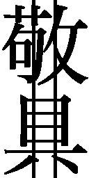

| 黒百合 (創元推理文庫) | |
| 多島 斗志之 | |
| (2015) | |
この本は縦書きでレイアウトされています。
また、ご覧になる環境により、表示の差が認められることがあります。
本作品を電子書籍版に収録するにあたり、一部の漢字が簡略体で表記されている場合があります。
黒百合
多島斗志之
昭和27年の夏休み。14歳だった「私」こと進と一彦は、六甲山にあるヒョウタン池のほとりで、不思議な雰囲気を纏った同い年の少女と出会う。池の精を名乗ったその香という少女は、近隣の事業家・倉沢家の娘だった。三人は出会った翌日からピクニックや山登りを通して親交を深めてゆく。自然の中で育まれる少年少女の淡い恋模様を軸に、昭和10年のベルリン、昭和15年の阪神間を経由して、物語は徐々にその相貌を明らかにしてゆく。そして、最後のピースが嵌るとき、あらゆる読者の想像を超える驚愕の真相が描かれる。数々の佳品をものした才人による、工芸品のように繊細な傑作ミステリ。
東京創元社
黒百合
多島斗志之
A BLACK LILY
by
Toshiyuki Tajima
2008
黒百合
香と知り合ったのは、六甲山上にあるヒョウタン池のほとりだった。
あのころ十四歳。私や一彦と同い年だった。
性格がいいのか悪いのか、よく判らない子だった。顔立ちも、ほんの少し可愛いという程度で、特に目を引くほどではない。けれど笑ったときの口もとが妙に魅力的で、私たちの心臓をつかんだ。
私も一彦もすぐに彼女を好きになった。ふたり同時につまずき、折り重なって転んでしまったような、そんな初恋だった。
一九五二年（昭和二十七年）の夏休みのことだ。遠い思い出だ。
ヒョウタン池は名前のとおり瓢簞形の池で、真ん中に小島が浮かんでおり、広い水面は水草の葉に静かに覆われていた。切れ目のある楕円形の葉っぱだ。そして蠟燭の炎のような形をした黄緑色の蕾が、あちこちにちょろちょろと顔を出していた。
「何の蕾かな」私のつぶやきに、
「ヒツジ草や」一彦が見飽きた口調で答えた。「毎日午後に、白い花がいっせいに開く」
池のまわりのさまざまな野草も小さな愛らしい花を咲かせ、麦わらトンボが私たちの近くを、まるで遊んでほしがっているように、さかんに行ったり来たりしていた。
「池の向こうはゴルフ場や。日本でいちばん古いゴルフ場や。けど、止まってるボールなんか打って何が面白いんやろな。おれは野球のほうが好きや」
後年、ゴルフを一番の趣味にするようになる一彦だが、あのときはそんなことを言って足元の小石を拾い、大きく振りかぶって池に投げた。石は遠くのヒツジ草の葉を叩き、その波紋が、そばで顔を出している蕾を物憂げに揺らした。
一彦はあたらしい小石を拾って私に手渡した。
「あの蕾に、先に当てたほうが勝ちや」
「オーケー」
私は負けたくなかったので真剣に狙って投げた。しかし的は小さい。わずかに外れ、葉と葉のすきまに落ちてチャポンと水音を立てた。
交代して一彦が二回目を投げた。これも当たらなかった。
それぞれが四回ずつ投げ終えたとき、
「あんたら、池を荒らしたらあかんよ」
と後ろから声がした。
振り向くと、十歩ほど離れたところにある木槿の木のそばに少女がひとり立っていた。白い半袖ワンピースを着たおさげ髪の少女だ。首から黒い双眼鏡をさげている。
「おまえ、監視員か」一彦が、注意されたことに反発して、鼻であしらうようなふざけた言い方をした。
すると、
「あたしは、この池の精や」と少女が負けずに言い返した。
一彦は私と目を見合わせ、
「何やこいつ、けったいなやつやな」と苦笑いした。
それが香との出会いだった。
そもそも私が六甲山を訪れたのは、浅木さんに招かれたからだった。浅木謙太郎さんは父の古い友人である。春、東京に出張してきた浅木さんを父が家に招いて歓待したとき、
「夏休みになったら、うちへ来ないかね」
とかれが私に言ったのだ。「六甲山に小さな別荘があるんだ。下の街とは気温が八度も違うから涼しく過ごせるよ。きみと同い年のひとり息子がいるので、きっといい遊び相手になる。一彦という名前だ」
まだふつうの家庭にはクーラーなど無かった時代だ。夏休みを涼しく過ごせる、というのは抗いがたい誘い文句だった。
じつはこのとき兄もいっしょに招かれたのだが、高校生の兄は受験にそなえて勉強をしたいからと断わり、私ひとりが、生まれて初めての関西へ旅したのだった。
あのとき夏休みの課題として、日記を書かなくてはならなかった。その古い日記帳が今でも私の手もとに残っている。それをひらくと、下手な鉛筆文字でこう書いてある。
七月二十四日（木） 晴れ
特急つばめ号で大阪へ行った。
浅木さんのおばさんと一彦君が駅に迎えに来てくれた。
ケーブルカーで六甲山に登った。涼しかった。浅木さんの別荘に到着。
今日からここで僕は夏休みを送る。楽しみだ。
当時の私は文章を書くことが好きではなかった。このおそまつな日記を見ても、それがよく判る。けれども、私自身があの夏の思い出をたどる材料としては、これで充分だ。舌足らずな数行に目をやるだけで、あのときの情景がありありと蘇ってくる。
特急つばめに乗って八時間。
大阪駅で降りると、夕方の、まだ茹だるように蒸し暑いプラットフォームの混雑の中、
〈寺元進君〉
と墨で書いた半紙を掲げている女の人がいた。それが浅木さんの奥さんだった。自分の名前を公衆にさらされて、私はちょっと恥ずかしかった。
おばさんは飾らない人らしく、麦わら帽子に白い木綿の半袖ブラウス、それに灰色の男物のズボンを、ややだぶつき気味に穿いていた。夫のお下がりだったのではないだろうか。体裁をかまう私の母なら、大掃除のときでさえそんな格好はしないだろう。
「よく来たわね」
と私に微笑みかける表情も若々しく、そしてさっぱりとした印象をうけた。
神経質な、気むずかしい人でなければいいが、と心配していた私は少し安心した。
けれどその一方、いっしょに迎えに来ていた一彦のほうはやや角のある性格のように見えた。かれの目つきからそう感じた。同年代の者に出会うと、まず相手を見下すことから始める少年がいる。一彦もそのタイプに見えた。
背丈も体格も私とほぼ同じだったが、見るからに利口そうな顔――もっとあけすけに言うと、利口さを鼻にかけている少年の顔つきをしていた。
ただ陰湿さは感じなかった。そういう雰囲気はなかった。長めの前髪をきざっぽく横に搔きあげる癖が、ちょっと目ざわりだった程度だ。
長めの前髪。そんな男子中学生は東京では当たり前だったけれど、関西ではとても珍しいことに私はまもなく気づいた。みんな丸刈り頭なのだ。たいていの公立中学にそういう校則があるらしい。一彦の学校は異例なのだろう。
赤煉瓦の東京駅にくらべると、当時の大阪駅は地味な、みすぼらしい駅だった。駅前広場も殺風景だった。ごちゃごちゃとした低い街並みの向こうに大阪城の天守閣が遠くかすんでいた。付近に大きな建物は数えるほどしかなく、ただひとつ目立っていたのは宝急百貨店の海老茶色の八階建てビルだった。
そのビルの下にある駅から、私たちは宝急電車に乗った。宝急電鉄は浅木さんの勤める会社である。
神戸線の六甲駅で電車を降り、バスでケーブルカーの駅へ向かった。
緑が鬱蒼と生い茂るべき季節であるにもかかわらず、バスの窓から眺める六甲山はあちこちに白っぽい山肌が痛々しく露出していた。その後の植林運動によって全山くまなく緑に覆われるようになるのだが、あの頃はまだそうではなかった。なにか荒れ果てた山のように見えた。
山荘をかたどった駅舎で切符を買いながら、このケーブルカーは宝急の競争相手の阪神電鉄が経営しているのだ、とおばさんが言った。昔はロープウェイもあって、そちらは宝急の経営だったが、戦争中に撤去されてしまったのだという。
「鉄材を国に供出するためや」と一彦が補足した。
「だけど、このケーブルだって鉄材を使ってるじゃない」私が言うと、
「ロープウェイを取っぱらうのは簡単やけど、ケーブルは手間がかかる。そやから生き延びたんや」年下の者に教えるような一彦の口調だった。
ケーブルカーはまず短いトンネルをくぐりぬけ、山の急斜面をゆっくりと上った。蟬の声がやかましい。その蟬しぐれがしだいに弱くなって、半袖の腕がやや肌寒く感じはじめたころ、山上駅に着いた。乗っていたのは十分間ほどだった。いまここは標高七百三十七メートルなのだと、訊いてもいないのに一彦が私に教えた。
すでに日が暮れかけていた。浅木家の別荘へはそこからさらに十分あまり、ゆるい坂道を歩いて上った。着くと同時に夕闇に包まれた。
翌朝、鶯の鳴き声で目がさめた。
涼しいとは聞いていたけれど、窓を閉め切って寝ても汗ばむことなく、それどころか夏布団をしっかりかけて眠った。
カーテンを開いて外を見ると、朝霧が低くたちこめて斜面の下を隠しており、その霧の海にこの別荘が浮かんでいた。
私が起きたときには、すでに浅木さんは出勤したあとだった。昨夜も晩く帰ってきて、ろくに話もできなかったが、私は浅木さんと話すために来たわけではないので、べつにそれは構わない。
用意された味噌汁と干物と漬物の朝食を一彦といっしょに食べていると、その手狭な食堂の隣の部屋から、コツコツ、ガリガリ、キュッキュッ、という物音が聞こえてきた。おばさんが何かしているようだ。
問いかける目を一彦に向けると、
「おもちゃを作ってるんや」とかれが明かした。
「おもちゃ？」
「木の玩具や。最初は趣味で作り始めたんやけど、今では宝急デパートに納めてる。そこそこ売れてるみたいやで」
「へえ」
朝食を済まして覗いてみると、傷だらけのテーブルを作業台にして、前掛け姿のおばさんが何かを組み立てていた。――水車小屋のようだ。そばの棚には木馬や自動車や手押し車なども置かれている。どれも片手で持てる程度の大きさで、彩色はなく、木肌そのままの状態だ。
「幼稚なおもちゃでしょ？」
とおばさんが手を休めて私に言った。「小さい子供のためのものだから形を単純にしてるの。そのほうが壊れにくいし」
こういうものが売れるというのは、終戦後の混乱がようやく落ち着いて、世の中に少し余裕が戻ってきた証拠かもしれなかった。
「でも、すごくいいですよ。部屋の飾りにもなりそうですね」
私が言うと、すかさず一彦が、
「東京のやつは、おべんちゃらが上手いな」と皮肉った。
「べつに、おべんちゃらじゃないよ」
ムキになりかけるのを、
「わかった、わかった」と軽くいなして、一彦は私を外へ連れ出した。
七月二十五日（金） 晴れ
午前中、一彦君と別荘の近くを散歩した。
倉沢香という子と知り合った。ヒョウタン池のそばの別荘の子らしい。
よく晴れた日で、霧は早くも消えつつある。
「別荘があるなんて、うらやましいな」
歩きながら私が言うと、
「斜面の土地やから安かったんや。それに山小屋に毛が生えた程度で、別荘と呼ぶほどのもんではない」
と一彦はかぶりを振る。謙遜ではなく、本音のようだ。「戦前からの大きな別荘が六甲にはいっぱいある。そういうのが本物の別荘や」
太い道と細い道。枝分かれしているところで、一彦は細い道へ私をみちびいた。
雑草が繁茂していて両側から道に覆いかぶさり、そこを歩くと私のズボンのすそが草の汁などで少し汚れた。私は白い木綿のトレーニングズボンを穿いていた。学校の体育の時間に穿くズボンだ。六甲山の別荘での生活は林間学校のようなものだろうと思った母が、私の鞄にそれを入れたのだ。
その白いズボンをわざと汚してやろうと一彦がちょっとした意地悪をしているのではないか、私はふとそう勘ぐった。かれ自身は青いＧパンを穿いている。ブルージーンズ。そんなものを穿いている少年はまだ珍しかった。
やがてまた太い道に出た。私に草の中を歩かせたのは単に近道をしただけだったのかもしれない。どちらにしても、いちいち勘ぐることはやめようと私は思った。意地悪であってもそうでなくても、ささいなことで気を回すのはやめ、あっけらかんとしていよう。
「どこへ行くんだい」訊いてみると、
「きのうの話に出たロープウェイの駅を見せたる」と一彦は答えた。
すでに使われなくなった廃駅。
郵便局の裏手にそれはあった。入口に通せんぼをするロープがおざなりに張ってあるだけで、しかもそれは弛んでだらりと下がっていた。大人がいれば注意されただろうけれど、まわりに人影はなく、私たちは当然のように中へ入り込んだ。
荒廃した駅舎。まるで飛び込み台のように斜面に迫り出している。私たちは先端まで行って谷を覗いた。そこから斜め下へ伸びていたはずの鋼鉄の架線は跡形もなく取り去られ、駅舎は未練がましく下界を見下ろして途方に暮れているようだった。
一彦が横顔で言った。
「無くなる前おれも何べんか乗った憶えがある。座席が二十ほど付いた大きなゴンドラやった。おれはまだ小さかったけど、スリルがあって、ケーブルなんかよりよっぽど好きやった」
「もう戦争が終わって七年にもなるし、復元させてもいい頃だよね」
すると、かれは例の、利口を鼻にかけた顔で私を見返り、
「いや、もうロープウェイの時代やない。自動車の時代や。みんなが自動車で登ってくる時代が来る。造るんやったら、ちゃんとした登山道路や」
子供に教え諭すように言って、前髪を横に搔きあげた。
六甲の山の上は、東西に細長い台地のようになっていた。
「あっちこっちに、池がようけあるんや」と一彦が言うので、それを見に行くことにした。
「どの池が見たい？ 名前を言うから選んでくれ」
雲竜池
ガルベン池
住友池
アマ池
川崎池
バンガロー池
三国池
ドロ池
八代池
ヒョウタン池
「それから何やったかな、まだまだあるけど、あとは省略や。さて、何番目のどの池に行きたい？」
私の記憶力をテストしているのだった。勘ぐらなくてもそれは明らかだった。何番目に何という名前の池を言われたのか、私の記憶はあやふやだった。そこでこう答えるしかなかった。
「最後の池がいいな。ヒョウタン池」
そして、そう答えた瞬間、運命の女神が私と一彦に笑いかけたのだ。――いや、嗤いかけたのだろうか。
「あの蕾に、先に当てたほうが勝ちや」
「オーケー」
ヒョウタン池のヒツジ草の蕾。そのひとつを狙って一彦と私が何度も小石を投げつけていると、後ろから声がした。
「あんたら、池を荒らしたらあかんよ」
振り向くと、白い半袖ワンピースを着て黒い双眼鏡を首からさげた少女が立っていた。
「おまえ、監視員か」一彦が、注意されたことに反発して、鼻であしらうようなふざけた言い方をした。
すると、
「あたしは、この池の精や」と少女が言い返した。
一彦は私と目を見合わせ、
「何やこいつ、けったいなやつやな」と苦笑いする。
「あんたら、どこの子？ 下から来たん？」
言いながら少女は数歩近寄ってきた。下というのは、ふもとの市街のことだろうか。
「いや、このちょっと南側の山小屋におるんや」
「このへんに山小屋なんかあらへんわ」と少女は不審げな顔をする。
「親は別荘と呼んでるけどな。あれが別荘やったら、この池は湖や」
一彦がそう言うと、
「面白い子やね」
少女が笑った。
その口もとが私を惹きつけた。大人っぽさとあどけなさ、ふてぶてしさとはにかみ、相反するはずのものが奇妙に入り混じっていて、それが魅力的に見えたのかもしれない。
一彦が小石を捨てて、かるく手をはたき、前髪を横に搔きあげた。
「おまえ――」と言いかけて、かれは言い直した。「きみは、このへんの子なんか？」
「あそこ」
少女は、自分の斜め後ろの緑の斜面を指さした。そのあたりに建物があるのだろうけれど、木々に隠されていて、ここからはよく見えない。
振り向いたせいで、三つ編みにした長いおさげ髪の片方の尻尾が肩の前にきた。彼女はそれをむぞうさに後ろへ払い、
「生け垣のすきまからこれで覗いてたら、あんたらが見えてん」と首にさげた双眼鏡を持ち上げてみせた。
一彦は指さされた方向へじっと目をやったあと、
「もしかしてきみ、倉沢ゆう名前か？」と訊いた。
「そやけど、何で知ってるの？」
「きみとこの別荘は大きいよって、誰でも知ってる」
「あんたらは、名前、何てゆうの？」彼女はさらに歩み寄ってきて、一彦と私を交互に見る。おでこの生えぎわの産毛が、微風に繊細にふるえている。
「おれは浅木一彦や。こいつは寺元進。東京から来た居候や」
「あたしは倉沢カオル。草冠の薫とちごて香水のコウの字」
と文字まで丁寧に教えた。そして私を見つめ、
「へえ、東京から来たん？ あたしのお母ちゃん東京育ちやねん。東京のどこから来たん？」と関心をしめした。
「杉並区」
「ふうん、どんなとこ？」
「畑だらけの田舎だよ」
「それでも東京は東京やないの。あたし、東京の人の言葉、好きやわ。賢そうに聞こえるもん」
横で一彦が面白くない顔をしていた。
歳を訊かれたので二人とも十四だと答えると、
「やあ、いっしょや、いっしょや」と香は喜んだ。
一彦と私は彼女から双眼鏡を借りて、順番に周囲を眺めた。
「ドイツの双眼鏡やねん。カール・ツァイスってゆう刻印があるでしょ？ 読める？ 戦前のやさかいちょっと古いけど、よう見えるでしょ？」
「カール・ツァイスは双眼鏡の本家本元や。日本のやつより、ずっと高いで」と一彦が博識の片鱗を見せる。
胴体に張られた黒い本革に少し擦れた痕があるが戦前のものにしてはそれほど古びていない。
「誰の？ お父さんの？」私が問うと、
「ふん、お父ちゃんの遺品」と香はのどかに答えた。
「亡くなったの？」
「ふん、終戦の年に」
「......そう」
戦争中に父親を亡くした子はべつに珍しくない。けれど両親の揃っている私としては、同情と申しわけなさの混じった複雑な気持ちになり、つい声が沈む。
そんな私から双眼鏡を取り戻した香は、
「なあ、あんたら、あしたは暇？」
と訊いてきた。「もし暇やったらいっしょに見晴らし台へ行かへん？ あそこからこの双眼鏡で見たら、大阪湾がよう見えるよ。和歌山のほうまで見えるよ」
「あしたでなくても、今日かて暇や」一彦が言ったが、
「今日は、あたし、あかんねん。お昼ご飯のあとでピアノ習うねん」と眉を寄せてみせた。
あす朝九時にこの池のほとりで待ち合わせることを約束して、私たちは香と別れた。
「グッバイ」
一彦が香の後ろ姿に声をかけると、彼女も体ごと振り向いて軽く手を振り、そのまま一回転してまた背中を向けた。長い三つ編みの尻尾がぶるんと一周振り回された。そして、
「グッドバイ、グッドバイ、グッドバイバイ」
と当時ラジオでよく流れていた童謡を口ずさみながら遠ざかっていった。
ワンピースの下のふくらはぎがリズミカルに動く。やがて、坂を上る手前の曲がり角でまた振り返り、双眼鏡で私たちを覗いてから、木立ちの中へ消えていった。
「金持ちの子にしては気さく、とゆうか、なれなれしいとゆうか、とにかく屈託のなさそうなやつやな」
と一彦が寸評し、私も同じ印象を持った。
が、それは浅い観察でしかなかった。屈託のない人間など、いはしない。彼女は少々複雑な境遇にいた。そのことを私たちが知るのは、しかしもっと打ち解けてからである。
昼食後、私たちはなんとなく倉沢家の別荘の近くまで行き、木蔭の草に寝ころんで、流れてくるピアノ練習曲に耳を傾けた。
「巧いんだろうか」
「そうでもないな」
「ときどき、つっかえてるね」
「同じとこでな」
そんなことをぼそぼそと言い交わしつつ、私たちは飽きずに聴いていた。
七月二十六日（土） 晴れ
一彦君と香さんと三人で見晴らし台へ行った。
すばらしい眺めだった。
約束どおり香があらわれた。
白い夏帽子をかぶり、赤白チェック柄の長袖シャツを腕まくりして、茶色の半ズボンに白いハイソックス、茶革の軽登山靴という格好だ。そして昨日の双眼鏡を首から吊るして、小型のリュックサックを背負い、水筒を斜めにかけている。
しかし一彦と私は、シャツを替えただけで、あとは昨日と同じ服装だった。リュックサックはもちろん、水筒も持っていない。
私は気になって一彦に尋ねた。
「見晴らし台は遠いの？ 登るのはきついのかい？」
一彦はＧパンの尻ポケットに両手を突っ込み、薄笑いをうかべて答えた。
「そらきついで。毎年十人は遭難してる。そうならんように女隊長にしっかりついていけよ」
そのやりとりが香の耳にも届いたらしく、彼女は自分のいでたちに対する一彦の揶揄に敏感に反応し、かれをわざと無視して私だけに話しかけてきた。
「おやつ持ってきたよ。進君の分もあるよ。喉が渇いたら言うてね。紅茶飲ましたげるよって。さて、ほんなら行きましょ。出発」
ゴルフ場沿いのなだらかな道をのんびり歩いて一時間足らずの道のりだった。上への移動ではなく、横への移動だ。最後の五分間だけはやや急勾配の坂道を上ったが、山上の別荘にいる者たちにとっては散歩の範囲だろう。
それにしても、歩いているあいだ、香は一彦への意地悪をなかなかやめなかった。仲間外れにまではしなかったが、明らかに私には優しく、一彦には険のある話し方をした。一彦は自分の失言を悔いているのか、彼女の冷遇におとなしく耐えていた。
やがて見晴らし台に着いた。
周囲から小高く盛り上がった丘だった。近くに六甲の北側を有馬温泉へと下るロープウェイの発着所があった。南側は、なるほど青々とした大阪湾が一望できる。私たちの他にも数人の男女が眺望を楽しみに来ていた。この日もよく晴れていたが、夏の空気にこもる湿気がうすい靄となって遠くをかすませている。
「向こうが大阪の街」
と香が私に指さして教え、双眼鏡を貸してくれた。「ちょっと手前のあのへんが芦屋かな。夏以外はあそこに住んでるねん。それから、もうちょっと右のほうを見てごらん。あのへんはもう神戸や」
六甲山は海辺の街の背後にいきなり高々と隆起しているため、まるで天上から街を覗き込むような眺めだ。
しかしどんなに眺望が素晴らしかろうと、実のところ、あのときの私はそんなものにさほど興味はなかった。むしろ、香の一挙一動を見ているほうが良かった。うつむく。顔を上げる。三つ編みの尻尾を後ろへ払う。鼻の横をちょっと搔く。眉をよせて何か考えるような表情をする。そして、ときおり見せるあの笑顔。それらのことをそばで見ているだけで楽しかった。
彼女は少々ねちねちした性格のようで、自分を揶揄した一彦への意地悪な態度を見てもそれは判る。けれど、女はたいていそういうものだ、という諦念を私は当時からすでに持っていたので、彼女を嫌う理由にはなりえなかった。
そんな彼女の腹立ちもしだいに治まってきたのか、私が双眼鏡を返すと、今度はそれを一彦に手渡した。
「見る？」
という短い一言を添えただけだが、その素っ気なさは照れ隠しで、仲直りの申し出のように私には見えた。一彦にもそれは伝わったのではないだろうか。
「うん」とかれも短く答え、見慣れているはずの眺望を、さも熱心そうに見ていた。
三人で草の上に腰を下ろし、香がリュックサックの中から弁当箱ほどの大きさの四角い缶を取り出した。クリーム色とチョコレート色に塗り分けられたその缶には、何かアルファベットの文字が、舞い踊るような書体で印刷されている。
彼女が蓋を開くと、ビスケットが二十枚近く詰められていた。丸いものや四角いもの、それにチョコレートを薄くかぶせたものもある。
「神戸のお店のやねん。おいしいよ。遠慮せんと食べて」
私だけでなく、一彦にも勧めた。
彼女が水筒に入れてきた紅茶も、蓋をコップにして三人で交代に飲んだ。
ビスケットを齧りながら、香が、私と一彦に父親の職業を尋ねた。
「東京電力に勤めてるんだ」と私が答え、
「おれとこは宝急電鉄や」と一彦が答えた。
香は私の父の仕事には興味をしめさなかったが、一彦のほうには、
「へえ、宝急に勤めたはるの。そしたら、あたしはお客さんやよ。芦屋川の駅から学校に通うてるねん」と応じ、ふたりの会話がはずみだした。
「どこの学校？」
「神戸女学院」
「女学院か」
「ねえねえ、ことしの春まで宝急電車にも進駐軍の専用車両があったでしょ？ あたしねえ、いっぺん間違えてあれに乗ってしもたことあるんよ。発車まぎわに飛び乗って、まわりを見たら進駐軍の軍人やらその家族やら、とにかく外人さんばっかりやねん。ぼんやりした子が乗ってきよったゆう顔して、ニヤニヤしたはる人がおったり、睨む人がおったり、ほんまに汗かいたわ」
「専用車両は窓の下にぐるっと白い帯が塗ってあったやろ。何で間違うんや。よっぽどの慌て者やな」
「そうやねん。あたし、そそっかしいとこあるねん」
「戦争前の宝急には女学校の専用車両があったらしいけど、男の中学生がもしも間違えてそれに乗ってしもたら、これは悲惨やな」
「あはは、ほんまやね」
「神戸女学院の専用車両もあったはずやで」
「ほんま？」
「たしか、そう聞いたけどな」
さっきとは逆に、こんどは私が寂しい思いをする番だった。
ふたりの会話はなおも続く。
「宝急に入社した人は、大学の法学部とか経済とか出た人かて、まず車掌をしたり運転士をしたりするてゆうのは、ほんまのこと？」
「うん、ほんまや。おれの親父も事務職で入ったけど、初めは電車の運転もしたそうや。上達が早うて本職の運転士に感心された、言うて自慢しとった」
「あんたも将来は宝急に入るの？」
「さあ、そんなこと判らん」
「宝急は縁故採用が多いゆう評判やよって、あんたも入れるのと違う？」
「世の中に会社はいっぱいある。べつに宝急にこだわる気はない。それに、まだおれは十四や。なんで今から就職先を決めんならんのや」
「それもそうやね」
香はやわらかく笑ったあと、ふと私をほったらかしにしていることに気づいたのか、
「もひとつどう？」とビスケットの缶を差し出してきた。
その後は私も会話に仲間入りし、開催中のヘルシンキ・オリンピックのことや、美空ひばりと江利チエミはどちらのほうが歌がうまいか、などといったことを三人で話し合って時を過ごした。ちなみに、ひばりもチエミも当時十五歳で、私たちと一つしか違わなかった。
やがて昼が近づき、私たちは腰を上げた。
香と私は「テネシー・ワルツ」を口笛で吹きながら帰路についた。一彦がそれに加わらなかったのは、かれは口笛を吹けなかったからだ。これは私にとって少しばかり愉快な発見だった。
帰り道で、シェパードを散歩させているひとりの女とすれちがったとき、香が、
「こんにちは」と挨拶した。
女のほうも、「あら」とうなずき、
「すごいわね、ボーイフレンドをふたりも従えて」
と香をからかった。若い女ではないが中年と呼ぶにはまだ少し早い。少年の私にはその程度のおおまかな年齢判断しかできなかった。長そうな髪をシニョンにした綺麗な女だった。歩くときの黒いプリーツ・スカートの揺れがエレガントだった。〈シニョン〉も〈エレガント〉も、あのころの私には、まだ憶えたての言葉だった。
通り過ぎたあと、香が一彦に訊いた。
「あの人のこと知らん？ 〈六甲の女王〉やよ」
すると一彦がいったん振り返り、
「あの人がそうか。会うたのは初めてや」とつぶやいた。
もちろん私はふたりに尋ねた。
「何？ その〈六甲の女王〉って」
香が説明してくれた。
「戦前に梅田の宝急デパートの近くでバーをしてはったらしいわ。空襲がひどなったとき六甲に疎開してきはったんやて。今はこっちで喫茶店したはるねん。美人やさかい男のお客で繁盛してるそうやよ」
「でも、何で〈六甲の女王〉って呼ばれてるの？」
「さあ、美人やからと違う？ 小芝一造さんが最初にそう呼ばはったらしいけど」
小芝一造翁の名前が出てきたので、私は言った。
「へえ、あした会いに行くことになってるんだ」
「〈六甲の女王〉に？」
「いや、小芝一造さんに」
「え」
「おれの親父が進を会わせに行くんや」と一彦が横から補った。「進は初めてやけど、おれは何べんか会うてる」
小芝一造翁は、宝急電鉄を創り上げた人物である。
香は少し驚いた様子で、一彦に訊いた。
「あんたのお父さんて、宝急のお偉いさんやの？」
「というほどでもないと思うけど、昔おれの親父と進の親父が、小芝一造さんの海外視察旅行のお供をしたことがあるそうなんや。水戸黄門の助さん格さんみたいに」
「ふうん」
「その縁があるよって、あしたの日曜日、親父が進を引き合わせることになったんや。六甲山ホテルでや。おれもいっしょに行くことになってる」
「そう......ほんなら、あしたは遊ばれへんね」
「月曜日にまた遊ぼうや」
「うん、そやね。月曜は午後からやけど、かまへん？」
おさげ髪の尻尾を後ろに払いながら微笑む香を見て、私は――そしてきっと一彦も――月曜の午後がとても待ち遠しく思えた。
どういう素性の娘なのだろう、と私たちは気になった。
相田真千子。当時、数え年二十歳。
笑わず、打ち解けず、嘆かず、驚かず。
何か事情があったようだが、それを明かそうとはせず、まるでひっそりと自分だけで痛みをこらえているように、ポーカーフェイスを崩さなかった。
にもかかわらず私たちが彼女に対して少々お節介なほどに世話を焼こうとしたのは、単なる親切というだけではなかったように思う。おそらくはあの眼差しだ。物静かな態度にそぐわぬ彼女の眼差し。そこに宿る野良猫のような野性味に、私たちはつい心惹かれたのではないだろうか。そんな気がする。
彼女と出会ったのは、ベルリンの終着駅でだった。
昭和十年。
秋も深い十一月十日、日曜日の朝だ。
私たちが乗ってきた列車から乗客が続々と降りて、プラットフォームは混雑していた。蒸気機関車の排煙のにおい、行き交う男女の帽子や外套、ドイツ語のざわめき、それらが駅を満たしていた。
「浅木君、荷物の確認をたのむ。僕は両替えしてくる」
寺元さんが私に言い置いて、ひとり離れていった。かれはベルリン留学の経験があるので、この駅の構内もよく知っているのだ。
バッグの数を確かめる私に、
「眠れたかね」と小芝一造翁が声をかけてきた。
「いえ、あまり」
「そうか、私はぐっすりだ」
前の日の午後にロンドンを発った私たち一行三人は、連絡船で欧州大陸へ渡り、夜行列車に乗った。そして終着駅であるベルリンのアンハルター駅に午前八時四十分に到着したのだった。
「東京と大阪をしょっちゅう夜行で往復しているから、寝台車は苦にならん」
と小芝翁は言うが、私はどうも苦手だった。振動が気になって熟睡はできなかった。
「さすがに立派な駅だね、え、浅木君。梅田駅は負けているね」
広い構内を鉄骨で高々とおおうカマボコ形の大屋根を見上げて翁は感心している。
すぐそばを、軍服の上に鉄色の長いマントを羽織ったナチスの軍人のグループが通り過ぎ、長身の彼らとの対比で、翁の小柄がひときわ目立った。
「女たちが地味だね」周囲を見回しながら翁が言う。「服も化粧もすこぶる地味だ。アメリカとは大違いだ。若い君らはどうか知らんが、私はこっちのほうが落ち着く」
その旅は翁にとって初めての海外視察旅行だった。当時、翁は宝急電鉄の会長と東京電燈の社長を兼務しており、その旅にも両社から男性秘書がひとりずつ随行していた。東京電燈からは寺元さん、宝急電鉄からは私だ。
翁（周りがそう呼ぶようになったのは後年だが）は、このとき六十二歳。寺元さんが三十二歳で、私は三十歳。ふたりとも既に妻帯していた。
日本を出てそろそろ二カ月、私たちは少し旅に疲れ始めていた。
いや、疲れていたのは随行秘書のふたりであって、小芝翁はまだまだ気力旺盛だった。目に入るあらゆるものに好奇心を向け、疑問があれば寺元さんや私に確かめた。私たちが答えられなければ即座に調べるよう命じ、手間取ってぐずぐずしていると、機嫌が悪くなった。
このアンハルター駅でも、さっそく私に問いかけがあった。
「隣のプラットフォームも、その向こうも、旅客のほとんどが荷物を手にしているね。この駅は長距離列車の専用なのかね」
「のようですね」
「のよう？」
「あとで確かめます」
寺元さんなら知っているかもしれず、かれが両替えから戻ってくるのを待つつもりでいたのだが、翁はせっかちだ。
「すぐに訊いてきなさい。英語のわかる駅員がいるはずだ」
私は寺元さんと違ってドイツ語は不得手だが、英語は使える。
「しかし、荷物が......」
「荷物は私が見ている」
「承知しました」
「もしも長距離列車の専用駅だとしたら、我々はここで目にするものをむやみに参考にすべきではない。宝急の駅とは性格が違うのだからね」
観察する価値があるのかどうか、それを早く知りたいようだ。
「訊いてきます」
私は駅員の姿をさがして構内を歩いた。
不意に声をかけられたのは、駅員を見つけて翁の疑問を質した直後のことだった。
答えを確認して翁のもとへ戻ろうとしたとき、
「ちょっとごめんなさい。あなた、日本の方ですか？」
と女の声が日本語で問いかけてきた。
立ち止まって見返ると、あずき色のハットをすこし斜めにかぶった若い女の、愛想のない、刺し通すような眼差しが私に向けられていた。濃い鼠色のツイードの外套、その腰をベルトでしぼり、小さなショルダーバッグをひだり肩にかけている。
「ええ、日本人ですが」
答えてまっすぐ向き直った私は、思わず吸い込まれるように相手の顔を見つめ返した。欧米の女たちばかりをしばらく見続けていたので、彼女の東洋的な美貌がとても新鮮だったのだ。
「これ、お読みになれますか？ わたし、ドイツ語がよく解らなくて」
右手に持っていた紙片を私に差し出した。そこに書いてあることを訳してほしいようだ。
「あ、僕もドイツ語はだめだ」
女は落胆を顔には出さず、
「そうですか、失礼しました」さらりと言って離れてゆこうとした。
私は急いで言い足した。
「けれど、とても堪能な男が同行者にいるので、かれに見せてみましょう」
私の周辺の人混みを、彼女は目でさぐる。
「あっちです」
小芝翁が荷物の番をしている場所へ向かって私は歩き始めたが、ついてくる気配がないので振り向くと、彼女は元の場所にいて私を見ている。警戒しているのだろうか。
ならば好きにしなさい、という気持ちで再び歩き出し、途中でもういちど振り返ると、いつのまにか後ろに随っていた。
「この駅はやはり長距離専用だそうです」
報告を聞いて、うむ、思ったとおりだ、とうなずく翁に、私は彼女を引き合わせた。
寺元さんはまだ戻ってきていない。かれを待ちながら無言で佇む彼女を、翁は上から下までじっくり見たあと、
「ずいぶんお若いようだが、お幾つだね？」と尋ねた。
「二十歳です」
当時のことであるから、むろん数え年での返答だ。満年齢なら十九、あるいは十八ということになる。
彼女はそのころの日本の女にしては背の高いほうだった。ドイツの女たちには及ばないが、しかし小柄な小芝翁を見おろすだけの上背があった。
「この街に滞在しているのかね。それとも旅行中？」
翁の問いは私の疑問でもあった。小さなショルダーバッグ一つを携えているだけで、旅行鞄は持っていない。しかしドイツ語が解らないというのだから、長く滞在しているわけでもなさそうだ。
「旅行の途中です」
ということは短い逗留で、荷物はその逗留先のホテルかどこかに置いてあるのだろう。
「お連れは？」
その問いに、彼女は答えなかった。遠慮のない翁の穿鑿を迷惑がっているようだ。
翁は黙って返答を待ちつづける。
彼女は立ち去りたそうな様子をしたが、そうすればドイツ語を訳してもらえなくなる。やがてそっけなく答えた。
「いません」
「え、ひとりで旅行しているのかね。言葉も解らない若い娘さんが、ひとりで？」気づかう、というより、窘めるような口調だ。
彼女は無表情でこう言った。
「日本から来る人を待っているんです。あとから来るんです」
そこへようやく寺元さんが戻ってきた。
彼女から紙片を受け取ってさっそく訳そうとする寺元さんに、
「こんなところで立ったままでかね。どこかに坐るところはないのかね」と小芝翁が渋い顔をするので、
「あ、駅を出てすぐのところにカフェがあります。そこで拝見しましょう」ということになり、寺元さんの先導で、私たちは両手に荷物を提げて移動した。むろん彼女も一緒に。
プラットフォームから階段をくだって駅の表玄関へ向かうと、淡褐色の上着を着た少年たちの一団とすれちがった。全員ひだり腕にナチスの鉤十字の腕章をつけている。子供っぽい表情で話をしながらピンクの頰をならべて快活に歩いてゆく。噂に聞くヒトラー青少年団だろう。
駅前の三角の広場に芝生と植え込みがあり、そのわきの重厚な石造りの建物の一階がカフェになっていた。周辺のビルにも、街路にも、そこかしこにナチスの鉤十字旗が垂れている。
回転ドアをひとりずつ通ってカフェの中に入ると、かなり奥行きがあった。
玄関わきの壁にずらりと取り付けられた木製の掛具。その空いているところに帽子と外套を掛ける私たち男三人の横で、彼女は姿勢よく立ち、ゆっくりと店内を見まわしている。
簡素で質朴な室内装飾。
薄くただよう煙草のけむり。
奥の壁にはヒトラーの肖像写真。
太った赤ら顔のウェイターに導かれてボックス席のひとつに四人は腰をおろした。テーブルクロスはなく、こまかな傷痕やしみのある木の地肌が、なにやら歴史を感じさせて重々しい。
皆がコーヒーを注文したあと、
「さてと、では読ませていただこうかな」と微笑みかける寺元さんに、彼女は例の紙片をあらためて手渡した。
小芝翁と寺元さんが並んで坐り、私は彼女の隣だった。彼女は、あずき色のハットを脱いで髪の横を軽く撫でつけてから、またかぶりなおした。さほど長い髪ではないが、後ろですそを結んでいる。黒い幅広のリボンが蝶のようだ。
寺元さんは一通り文面に目を通し、
「ああ、これは紹介状ですね」つぶやいたあと、彼女に訳して聞かせた。
宛名はドイツ人男性のようだ。
「東京での一別以来二年が経ちましたが、いかがお過ごしでしょうか。貴兄との愉快で親密な交友は、いまも小生にとっての大切な思い出です。
さて、この書状は、小生の友人アイダ・マチコ嬢を貴兄に紹介するためのものであります。彼女はこのたび初めて日本を離れ、貴国を訪れるのですが、ご当地に知る人なく、ドイツ語もあやつれません。英語のみ少々理解できます。
ついては、小生が追ってベルリンに到着するまでの間、貴兄に彼女を預かっていただくことをお願いできないでしょうか。ご承諾いただければ深く感謝いたします」
署名は日本人男性の名だ。
寺元さんから紙片を返された彼女は、
「それだけですか？」と念を押した。
「ええ」寺元さんは語学力を疑われたと思ったらしく、いささか気を悪くした表情で、「忠実に訳しました」と答え、眼鏡を直しながら小芝翁や私の顔にちらりと目を向けた。
「この男はドイツ語の達人だよ、お嬢さん」翁が保証した。
「わかりました。ありがとうございました」
頭をさげて紙片をショルダーバッグにしまう彼女に、翁が何かを言おうとしたが、ちょうどコーヒーが運ばれてきた。黒いワンピースに白いエプロンをつけた中年のウェイトレスが四つのカップを置いて去るのを待ち、翁が問いかける。
「その、アイダ・マチコ嬢というのは、君のことかね」
「そうです」彼女は短く答え、そして、
「翻訳していただいたお礼、と言うにはお粗末ですけれど、コーヒー代はわたしが払わせていただきます」とそのまま席を立ちそうな様子をした。
いや、そんな必要は、と手を振りかける寺元さんの横から、
「では、遠慮なく」と翁が受け、
「お急ぎかね？」と訊いた。「もしそうでないなら、君もゆっくり飲んでゆきなさい」
人に命じることを仕事にしている小芝翁である。やさしい口調でも、なにか有無を言わせぬ力がある。彼女も、浮かしかけた腰をすなおに戻してカップに手を伸ばした。
「紹介状に何が書かれているのか、あらかじめ知りたくなる気持ちはよく判る。誰だって気になるもんだ」翁は頰をゆるめる。「で、今からその宛名の人物を訪ねるわけだね？」
「いえ」
「訪ねないのかね」
「もう訪ねました」
怪訝な目をする私たちに、
「旅行中ということで、不在でした」と彼女は言った。
「ほう、で、帰ってくるのはいつ？」
「長い旅行のようです」淡々と答える。
「やれやれ、それは困ったね」翁は気づかわしげに眉を寄せる。
が、当の彼女は平然とした態度でコーヒーを口に運んでいる。
翁は銀髪の頭をやや前に出して問う。
「立ち入ったことを訊くが、その紹介状を書いた人物は、君とはどういう関係なのかね。君を友人と書いていたね」
「そうですね。そう書いてありましたね」と彼女は妙な返事をした。
「違うのかね」
「違いません」
「あとからこのベルリンに来るそうだが、それはいつのことだね。君、それまで独りで待つことになるのかね」
翁の穿鑿は止まらない。
彼女は飲み干したカップを置き、
「ほんとに立ち入ったご質問ですね。でも、心配してくださっているからだと思います。ありがとうございます」
会釈だけして、何も打ち明けぬまま、マルク紙幣をテーブルに残して立ち去った。
私たちの宿泊先はホテル・アドロンだった。ベルリンの最高級ホテルだ。
金髪や褐色の髪に満たされた豪奢なロビーの一角に、黒い髪の男たちが数人固まって小芝翁を待ち受けていた。
翁に挨拶してつぎつぎに名刺をさしだす彼らは、日本企業の駐在員たちである。横浜正金銀行、三井物産、三菱商事、大倉組、そして大阪毎日新聞。
サンフランシスコでも、シカゴでも、ニューヨークでも、ロンドンでも、私たちが到着すると、必ず同じような光景がくりひろげられた。
彼らとホテル内で食事をしたあと、午後は正金銀行の支店長の案内で郊外のポツダムへドライブにゆき、その日は暮れた。よく晴れた日だったので、帰途、森や湖水の上で満月が皓々と冴えていた。
翌日も気持ちのよい晴天だった。小芝翁と私はヴェルトハイム百貨店の見物に夕方まで費やした。宝急電鉄は大阪で百貨店も経営している。
夜は寺元さんも同行して夕食会に出席した。三井物産の招待だ。
旅行中、会計は主に寺元さんが仕切り、私は毎日の予定を調整してゆく役割をつとめていた。ベルリン到着三日目のその日は、午前中にジーメンスへの訪問を予定していたのだが、先方の担当重役がまだ出張から戻っていないことが判った。事前の連絡に行き違いがあったのだ。
「申し訳ありません」
低頭する私に、翁は、うむ、と苦い顔でうなずいたが、それだけだった。
翁はよく人を叱る。私も幾度となく小言をもらい、ときには怒鳴られてもいる。けれども、ただやみくもに怒るというわけではないので、仕えやすかった。
「時間があいたな。ちょいと街でもぶらつくか」
翁は散歩に出た。寺元さんは正金銀行にゆく用件があり、私だけがお供をした。
ホテルを出てウンター・デン・リンデンの街路を右へ、つまり東へ歩きかけた翁は、ふと気を変えて逆戻りし、ブランデンブルク門をくぐって、西にひろがる緑地帯へと足を踏み入れた。大公園ティアガルテンだ。
「ヨーロッパの建物は荘重だね」と翁は私に言う。「だが、そんな街並みばかり見ていると、少々腹にもたれる。木と草の中を歩きたくなった」
鬱蒼とした樹木のあいだの遊歩道をしばらく行くと、川のように細長い池のほとりに出た。どこからか鳥の声も聞こえる。ベンチがある。
「少し休憩なさいますか？」
「まだいい。もっと先まで行ってみよう」
池に沿ったり離れたりしながら遊歩道はどこまでも続く。分岐路もあり、交差路もある。
「広いね。じつに広い」
「そろそろ引き返しますか」
どこまで歩いても、森、池、森だ。が、そのとき翁がふと何かに目を止め、おや、とつぶやいた。視線をたどって私もその方向を見た。
池のたもとのベンチ。そこに背中を見せて坐っている女の、あずき色のハット。
「浅木君、あれはこのあいだの......」
「そのようですね」
アンハルター駅で出会った、あの娘ではないか。翁も私もそう思った。
「見てきたまえ」
「わかりました」
私は足早にベンチに近づいた。前へ回って声をかけようとしたとき顔を上げて私を見たその女は、しかし彼女ではなかった。ヨーロッパ人だった。よく見れば髪は濃褐色で、黒くはない。帽子の色も、あの娘のものより少し明るめだ。
訝しげに見返してくる女にあいまいな会釈だけ残して、私は翁のもとへ引き返した。
帰り道、翁とこんな会話をした。
「どうしているのだろうね、彼女。気になって、ときどき思い出していた」
「私もです」
「君もか。それで、ふたりそろってあんな見間違いをしたわけだな」
「日本から来るという男を、今も独りで待っているんでしょうか」
「心細いだろうね」
「赤の他人とはいえ、やはり気がかりですね」
「宿泊先だけでも聞いておくべきだった」
ホテルへ帰ったあとの昼食の席で、すでに正金銀行から戻っていた寺元さんが、こう言った。
「さっき、例の娘を見ましたよ。ほら、おとといの娘です。紹介状を訳してくれと言ってきた、あの娘」
やれやれ君もか、という顔で寺元さんを見た翁は、私と目を合わせて苦笑し合った。けれども寺元さんの話がこう続いたので、翁と私はもういちど目を見合わせた。
「ブランデンブルク門をぼんやり見上げていました。で、近寄って声をかけました。何をしているのかと尋ねたんです。そうしたら、時間つぶしをしているのだと答えました。お金をかけずにゆっくり時間をつぶせる場所はどこかと訊くので、博物館島に行くといい、と薦めておきました」
「......博物館島？」翁が訊き返す。
「博物館や美術館が五つ集まった場所です。ここから一キロほど東にあります。パリのシテ島のような、川の中洲です」
この日の午後の予定では、翁は寺元さんを伴い日本大使館を表敬訪問することになっている。
「浅木君、君は午後どうするのかね」
私はホテルにとどまって日本宛の連絡書簡と妻への手紙を書くつもりでいたのであるが、翁の気持ちを読んで、こう答えた。
「そうですね。急ぎの用事はないので、私もひとつ博物館島とやらを見物してこようかなと思うのですが」
「それはいい考えだ」翁は満足げにうなずいた。
旧博物館、新博物館、国立美術館、ペルガモン博物館、カイザー・ヴィルヘルム博物館。――南側からたどってゆくと、ほぼそういう順番に並んでいる。
寺元さんによれば、どの館にも世界的な歴史遺産や美術品が展示されているそうだが、私はそれらには目もくれず、ひたすら彼女の姿をさがして、急ぎ足で各館をめぐり歩いた。
そしてようやく見つけた。四番目に入ったペルガモン博物館の中でだった。
彼女は階段に坐っていた。
天井の高い大きな部屋に設けられた、ギリシャ神殿の一部のような、白い大理石の大階段。横幅の広い、三十段ちかくもありそうなその石段の中ほどに彼女は腰をおろして、あずき色のハットを膝に置き、何か考え事でもしているように俯いていた。
階段の最上部には円柱が立ち並んでいる。その両翼から回廊がバルコニーのように前へ迫り出しており、それを支える土台の壁面を人や馬などの浮き彫りが飾っている。
高い回廊に挟まれたその階段は見学者が坐ってもよい場所らしく、ほかにも腰をおろしている者が何人かいる。
私ものぼってゆき、彼女の数段下から声をかけた。
「休憩中ですか？」
彼女は伏せていた目を上げて、軽く会釈したが、とくに驚いている様子はない。例によって恬然とした態度だ。
むしろ私のほうがドキリとした。彼女の眼差しにだ。野性味を湛えた刺し通すような眼差し。物静かな様子との、どこかちぐはぐな取り合わせ。すでに見て知っているのに、まだ慣れないのだった。
私は偶然の再会を装おうかとも思ったが、それはしかし不自然だろう。
「同僚から君に会ったと聞きました。ここを薦めたというので、僕も来てみた」
彼女は小さくうなずき返した。私にどう対応していいのか決めかねている気配だ。
私は隣に腰をおろしたかったが、厚かましい振る舞いのように思えてためらった。
「何か印象深い展示物はありましたか？」
前に立ったままそう訊くと、
「ええ、珍しい物ばかりです」
彼女は答えて、階段の横の、戦いの場面を描いた浮き彫りに目を向けた。先日のカフェでも思ったことだが、横顔がとりわけ美しい。そう感じるのは、正面からと違って眼差しの強さに吞まれることなく眺めることができるせいだろうか。黙って静かに見つめていたくなるような、せつない魅力を持った横顔だ。
その顔をしかしすぐに戻して、彼女は髪の横を撫でつけた。
「でも、あまりよくわかりません。歴史にくわしければ、もっと楽しめるんでしょうけれど」
そして帽子をかぶって立ち上がった。すると、外套の膝の上から薄い印刷物が落ちた。私が拾い、手渡した。英文の案内パンフレットだ。
階段をおりる彼女と一緒に私もおりた。
「壮麗な階段だ。ギリシャのものかな」
「小アジアのものだそうです。ペルガモンという古代都市にあったゼウスの大祭壇を移築復元したと、これに書いてあります」
「それでペルガモン博物館という名前がついているんですか」言いながら私は当然のような顔で彼女と並んで歩こうとしたが、
「あの、わたし、ちょっとくたびれましたので、お先に失礼します」と彼女は一、二歩離れ、その位置でよそよそしく会釈した。
私は拍子抜けした。しかし引き止めずにうなずいた。そうするしかない雰囲気を彼女はまとっていた。ただし、急いでこう伝えることは忘れなかった。
「もし君に出会うことがあったら、夕食に招待するようにとボスから言いつかっているんです。ホテル・アドロンです。フロントで僕の名前を告げてください。浅木という名です」
彼女はかすかに眉をひそめ、答えずにいる。
私は付け加えた。
「立ち入った穿鑿はつつしむので、どうか気軽においで願いたいと言っていました」
「ありがとうございます。でも......」
「さしつかえがなければ、ぜひ来てください。六時頃でどうですか？」
彼女はちょっと余所見をして間を取ったあと、
「せっかくですけれど、伺えません」遠慮や躊躇ではなく、その気がまったくないことを隠さぬ表情で答えた。
「そうですか」私もしつこくは言わぬことにした。
「失礼します」
あらためて一礼し、彼女は去った。
さがし歩いた疲労だけを抱えて私はホテルへ帰った。
「君は百貨店部門への転属を希望したことはあるかね」と翁が私に訊いた。
「いえ、ありませんが」
「それはよかった。とても君を百貨店へはやれんね。百貨店のお得意様は女性客だ。君が女性に対してこれほど不器用だとは思わなかった。それでよくあんな上等の嫁さんを娶れたものだ。よほど仲人が頑張ったのだろうな」
翁に辛辣に皮肉られた。しかも彼女の滞在先すら訊けなかったことに、いたくご不満の様子だった。
旅行中、小芝翁には日本から電報が頻繁にとどく。
そのローマ字の文面を、漢字仮名まじり文に書き直して読みやすくすることも私の役目だ。書き直した三通の電文を持って翁の部屋にゆくと、大倉組の鶴崎という男が来ていて、うまい中華料理店へ案内したいと話していた。
「いいね」と翁も応じている。「西洋料理にも飽きてきたところだ。今夜はどこからも招待の予定は入っていないし、私が招待しようとした相手からは断わられたしね」
「え」と鶴崎が驚いて尋ねる。「どんな相手です、それは。ナチスの閣僚か何かですか？」
翁は苦笑して答えなかった。
自動車で向かったその店は、しかし直前に厨房でボヤ騒ぎがあったとかで消防が来ており、食事はできなかった。
「残念だな。胃はすっかり中華料理を迎え入れる態勢になっておったのに」翁が冗談めかして言ったが、じっさい落胆しているようだ。
「でしたら、別の店に行きましょうか」寺元さんがそう提案した。「留学生時代によく行った中華料理屋があるんです。高級店じゃないですが、味はめっぽういけます」
「あ、それ、楊貴楼のことですか？」と鶴崎が確認する。
「そうです、楊貴楼」
「うん、あそこはうまい。しかも安い。今でも留学生の連中に人気があるようですよ。私らも、若い者同士のときは、よくあそこで食います」
「よし、決まりだ」翁がうなずいた。
思ったよりも大きな店だった。一階は満席だったので二階へ案内された。
給仕のあとに随いて私たちの先頭で階段をのぼった小芝翁が、二階のフロアを五、六歩行きかけて立ち止まった。私たちも同じように歩みを止めた。
翁が立ち止まった理由に、私も寺元さんもすぐに気付いた。
ドイツ語のざわめきが漂う店内、赤を多用した柱や壁の彩色、その奥まった隅の小テーブルに、あの娘がひとりで坐っている。斜め後方からの角度だが間違いない。首の後ろで髪のすそを結んだ黒い幅広のリボン。帽子と外套は脱いでおり、黒っぽいセーターの背すじを姿勢よく立てて、壁の刺繡画を眺めているふうだ。料理はまだそのテーブルには載っていない。
立ち止まっている私たちを振り向いて中国人の給仕が手招きした。大きな丸テーブルへ導こうとしている。
翁はその大テーブルに行き、腰を下ろした。彼女に声をかけるのではないかと私は思っていたが、それはしなかった。全員が席につき、寺元さんがメニューを見るあいだ、私はちらりと彼女のほうを振り返った。
すると隣の鶴崎も気になっていたのか、身をよじって振り向き、
「どうやらあの娘さんも日本人のようですね」と話しかけてきた。「留学生ですかね」
「いや、そうではないそうだ」
言う翁を鶴崎は思わず見返り、
「ご存じの女性なんですか？」と訊いた。
「いや、よくは知らん」とだけ翁は答える。
「ちょっとこっちへ誘ってみましょうか」
商社の人間の習性か、鶴崎は動きが早い。翁の承諾もとらずに、さっさと腰をあげて彼女のテーブルへ向かった。
「無駄だよ」と翁がつぶやいたが、鶴崎の背中には届かなかった。
もう彼女にかまわず、そっとしておいてやろうという気持ちに、このときの翁はなっていたようだ。
ところが鶴崎はいったいどう口説いたのか、彼女を強引に我々のテーブルへ連れてきてしまった。
やや呆れぎみに、翁が鶴崎に言った。もちろん私にも聞こえるようにだ。
「きみ、大倉組をクビになったら、うちの百貨店に来たまえ」
「はあ、ありがとうございます」答えつつも、鶴崎はなぜそんなことを言われるのか訳がわからない顔つきだった。
彼女はあまり居心地が良さそうではなかった。しつこく誘われて断わり続けるのが面倒になったからやってきたという様子だ。
彼女に与えられた席は、小芝翁の隣だった。それを挟んで鶴崎がいる。
「アイダ・マチコさんだ」と翁が鶴崎に紹介した。
「どんな字を書くの？」と鶴崎に問われて彼女が答え、私たちもこのとき初めてそれを知った。
素性を聞き出そうとして鶴崎がしきりに質問したが、これは約束違反ではないかという目で相田真千子は翁や私を見る。翁が鶴崎を制した。
「まあ、お互いどこの誰でも構わんじゃないか。故国を遠く離れたこんな場所でたまたま一緒にテーブルを囲む、そのひとときを楽しむだけでいいじゃないか」
「そうですね」同意しながらも鶴崎は何か釈然としない気持ちでいるのがよく判った。
私たちは外套を二つ折りにして椅子の背凭れに掛け、その背凭れの端の角のような出っ張りに帽子を引っ掛けていた。この店ではみんなそうしているようだ。
「うっかり壁の掛具なんかに掛けたら、いつのまにか無くなっていたりしますからね」と寺元さんが薄く笑う。
相田真千子も、例のあずき色のハットを背凭れの角に掛けている。ふつう、女は店の中でも帽子をとらないものだが、このときの彼女は脱いでいた。
「その帽子の色」と翁が言った。「うちの電車の車体の色と同じだ」
「そう言えばそうですね」私もうなずき、「関西の宝急電鉄です。乗ったことはありますか？」と彼女に尋ねてみた。
「いえ」興味もなさそうに、かぶりを振る。「関西には行ったことがないので」
料理が並んでからも場は少しも盛り上がらず、鶴崎は彼女を引っ張ってきたことを後悔しているふうだが、むりやり話題をひねりだすような感じで翁に質問した。
「ベルリンにはいつまでご滞在の予定ですか？」
「あすの夜、いったん発つことになっている。ソビエト・ロシアへ行って、また戻ってくる」
「ソ連ですか」
「モスクワのあと、ウクライナへ回って発電所を見てくる」
「世界最大規模の大発電所なんです」と東京電燈社員の寺元さんが補足した。
「列車での長旅になりますね。どうか体調を崩されませんように」
心配してみせる鶴崎に、翁は笑い返し、
「なあに、寝台列車には慣れている」と日ごろ言っていることを繰り返した。「東京と大阪をしょっちゅう往復しているから、列車で寝るのはちっとも苦にならん」
「東と西で大きな会社をふたつも率いておられるので、行ったり来たりが大変ですね」
「平日は東京で仕事をしているが、日曜日はときどき大阪へ帰って用事を片付ける。片道九時間の寝台車で私はぐっすり眠る。電話もかかってこない。来客もない。じつに落ち着く。少々狭かろうが、振動があろうが、そんなことは気にならん。根が甲州育ちの山猿だから、君らのように神経質にはできておらんのさ」
「ご家族はどちらに？ 東京ですか、大阪ですか？」
「みんな大阪にいる」
「すると東京では、お独り住まいですか？」
「そうだ」
「大阪へお帰りにならないときの休日は、どう過ごされているんです」
切れ目のない問いに、
「君もなかなか穿鑿好きだな」と翁は自分に似た鶴崎の性格がおかしいのか苦笑した。「うむ、そうだな、来客の予定がない日は、たいてい本を読んでいるね」
「読書ですか」
「といっても、終日ベッドにごろりと寝転んで、途中で居眠りなどしたり、ずいぶんものぐさな読み方だ。仕事場でガミガミ人を叱っている私しか知らぬ者は、休みの日のぐうたらな姿を見たらきっと驚くだろうね」
「のんびりなさるのは、むろん必要でしょうが、しかしおひとりだけの休日というのはお寂しくありませんか？」
「そうでもないさ。私は、孫にまとわりつかれてデレデレと嬉しがる爺さんのタイプでもないしね。むしろ女学校の孫娘なんぞは、ちかごろ妙な言葉ばかり使うので閉口する」
「妙な言葉とは？」
「もちろんをモチモチ、面白いをオモクロイというおふざけ程度ならすぐ解るが、従兄のだれそれはルート八ね、などと言われても、何のことだか意味がつかめん」
「何ですか、その、ルート八というのは」
「二・八二八、すなわちニヤニヤしている、にやけているという意味らしい」
「あはは、うまいじゃないですか」
「父親のことはサイノロジーと言っていた」
「は？」
「妻に甘い男をそう呼ぶんだそうだ」
「なるほど」
「いまだに解らんのがイシンデンシンだ。わたしは将来、絶対イシンデンシンでゆく、と言うのを聞いたんだが、君たち何のことか知っているかね」
以心伝心、だろうか？
鶴崎だけでなく、寺元さんも私も首を傾げる。
すると、それまで黙っていた相田真千子が相変わらずの無表情で、
「自由結婚のことです」とわれわれに教えてくれた。「相思相愛のことを以心伝心なんて言ってるんです」
「そうか、ありがとう。疑問が解けた」翁は得心したようだ。「つまり、見合い結婚はしない、恋愛結婚がしたいと言っていたわけだな」
そして彼女に尋ねた。
「君も女学校時代、といっても、ついこのあいだのことだろうが、やはりこんな言葉を使っていたのかね？」
彼女は口へ運びかけた箸を戻し、
「ええ、使っていました。そういうのを面白がる年頃ってありますでしょ？」遠い過去のことを振り返るような口調で答えた。
「まあ、変な言葉を使うくらいは愛嬌としても――」と鶴崎が不意に嘆息してみせる。「近頃の日本の女学生らは、ひどいことになっているそうですな。いや、日本から届く新聞を読むと、とんでもない記事ばかりで驚きます。不純交際やら情痴事件やら、風紀の乱れが目にあまる。親たちは何をしているのかと言いたくなります。ドイツの若者とはだいぶ違いますね。こっちの連中は感心ですよ。ヒトラー青少年団も少女連盟もすばらしいです。きびしい躾と国家教育のおかげで理想的な青少年が育っている。日本もぜひこれを手本にすべきです。ナチスに政権をあたえたドイツ人は、やはり優れていますよ」
力説する鶴崎に、翁はちょっと間をおいて、おだやかに返した。――日ごろからの持論だ。
「たしかにナチス政権にはすばらしい点が幾つかあるとは思う。だがね、行き過ぎた統制管理に、私はいささか疑問を持っているんだ」
やや声を低めて、あとを続けた。「この国では、国賊は死刑に処すという法律があるそうだね。だが、その国賊の定義というのが、なんとも不透明じゃないか。つまるところ、ナチスに反対する者すなわち国賊で、うるさいやつは片っ端から処刑しているという話だ。これを法治国家と呼んでいいものかどうか私は迷ってしまう。恐怖で人を統制管理すれば、国はどんどん暗黒化してゆく」
「悲観的なお考えなんですね」鶴崎は伏し目になった。
「しかし、がっかりするには及ばんよ。私がどう思おうと関係なく日本ももうじきこのドイツのようになる。いや、なりつつある。君の希望はきっと叶えられるさ」
そう言ってスープを口に運んだ翁は、気管にでも入ったのかちょっと噎せて咳き込んだ。
すると相田真千子の手が横からさっと伸びて翁の背中をさすった。
「うむ、大丈夫だ。ありがとう」
そのあと彼女はまた何事もなかったように黙々と食事をつづける。まるで、ふだんから一緒にいる祖父に対しての、日常的な、習慣化された動作のように自然な振る舞いだった。
寺元さんと私はなんとなく目を見合わせた。
彼女の行為に阿りの気配は少しも感じられなかったが、しかし、遠慮や躊躇もまったく見せなかったので、女らしい気づかいというよりも、むしろ恐れ知らずの、ぞんざいな印象すら受けた。
翁自身も、ただ感謝だけでなく、何か好悪のいりまじる微妙な顔つきで彼女を見たが、その横顔の美しさを見るうちに好感情が優位を占めたのか、
「ありがとう」ともういちど礼を言った。
翌日、私は発熱した。
おそらく疲労が溜まっていたところへ風邪をひいたのだろう、数日寝ていれば回復するはずだ、とドイツ人の医者は診断した。
翁は私にベルリンで静養するよう命じ、ロシア語通訳と寺元さんだけを伴ってソ連の視察に出発した。
四日目にほぼ全快し、午後、散歩にでも出ようかと思っていた私に、小芝翁から国際電話が入った。
「具合はどうだね」
「ええ、すっかり良くなりました。ご心配をかけて申し訳ありません」
わざわざモスクワから見舞いの電話をくれたことに、私は少々感激したが、翁の用件はそれではなかった。
「そうか。では、すぐに大使館へ向かってくれ。そして領事部の者と一緒にゲシュタポの本部へ行きたまえ」
「は？」と思わず私は訊き返した。秘密国家警察の本部へ？
「彼女が――相田真千子君が勾留されているそうだ。浜尾商務官から、いまこちらに電話があったのだ。相田真千子という娘を知っているか、大倉組の鶴崎君があなたの知り合いの娘だと言っているが、本当か、と問い合わせてきた」
「彼女が何かしたのですか？」
「ドイツの法律にそむく行為をしたらしい。『人種侮辱罪』という罪に加担したそうだ」
「えっ」耳慣れぬ罪名だった。
「大使館は彼女が私の知り合いだと聞いて確認の電話をしてきたわけだが、私はそうだと答えた。知人だと返答した。領事部の者がこれから身柄引き取りの交渉にゆくと言っている。君も同行したまえ」
日本大使館に駆けつけた私は、商務官の浜尾から事の詳細を聞かされた。
「ひと月前に『純血保護法』という法律が公布されましてね」
と浜尾は言う。「これはユダヤ人とドイツ人の結婚を禁止する法律ですが、結婚まで行かなくても、性関係を持っただけで罪になるんです。特に、ユダヤ人の男がドイツ人の女と関係した場合は重罪です。『人種侮辱罪』ならびに『民族加害罪』に問われて、その男は死刑です」
「おそろしい法律ですね」驚きつつ、私は先を急かした。「で、彼女は具体的に何をしたんでしょうか」
「匿ったらしいです、恋人同士だという男女を。男はユダヤ人で女はドイツ人です。領事部が受けたゲシュタポからの電話によると、彼女が宿泊しているホテルの、隣の部屋にその男女は泊まっていたそうです。誰か密告した者がいたらしく、それをうけてゲシュタポが乗り込んだところ、部屋は蛻の殻だった。その男女は二日後に別の場所で捕まり、尋問されて、隣の部屋の女に匿われたことを告白したそうです」
「彼女は、ただ匿っただけなんですね？」
私の言い方が軽々しく聞こえたのか、浜尾商務官は眉を寄せた。
「こういう法律をどう思うかは別として、この国に滞在する以上は、それに従わねばならないのは当然です。彼女の行動は軽率と言わざるを得ない」
「彼女はドイツ語が解りません。そんな法律があることを知らなかったのではないでしょうか」
「とにかく、領事官補の須山君が今からゲシュタポに行きます」
「私も同行させていただけますか？」
「ええ、小芝さんのご要望でしたので、そのむね須山君にも伝えてあります」
秘密国家警察の本部は、黒ずんだ灰色の外壁が見るからに陰鬱な印象をあたえる五階建ての古めかしいビルだった。玄関には、むろん鉤十字の旗が垂れている。
「ゲシュタポはふつうの警察とは所属が違っていて、ナチス親衛隊の一部局なんです」
と須山領事官補が自動車の中で言っていたが、街で見かける警察官のものとはあきらかに違う特異な制服の男たちが、玄関を出入りしている。
ひたいに銀色の髑髏のしるしがついた黒い制帽。黒い上着。黒いネクタイ。拳銃を装着した黒いベルト。黒い乗馬ズボン。そして黒い革長靴。――何もかも黒ずくめだ。その黒一色の中で、左腕に巻いた鉤十字の腕章の朱赤が、ひときわ鮮烈だった。
中に入ると私服の男たちも廊下を行き交っていた。誰もみな目つきが荒み、すれちがいざま射すくめるように私たちを一瞥した。
「刑事部の部長に面会します」
私にささやいた上で、須山領事官補は訪問者窓口の制服職員にドイツ語で案内を請うた。
金髪をオールバックに撫でつけた私服の中年男が私たちを応接した。彼が刑事部長のようだ。
無色に近い灰色の目。ドイツ人によくある赤らんだ鼻。厚い頰肉。頑丈そうな顎。デスクの上で組まれた骨太の手指。ドイツ語の解らない私は、それらを黙って観察していた。
刑事部長は終始にがい表情をしてみせてはいるが、しかし敵意は感じられない。
やがて須山領事官補が、私のほうを向いて要点を通訳してくれた。
「法律のことを彼女は知っていたそうです。ユダヤ人の男が英語で彼女に話したんだそうです。つまり、知った上で匿ったわけです。しかもその男女がホテルから逃走するとき――深夜だそうですが――彼女が見張りに立ったり手引きをしたりして手伝ったということです」
「ほう」
「けしからぬ行為ではあるが、ゲシュタポとしては友好国の女性に厳しい処置をほどこすことは差し控えたい。今回にかぎり、あえて不問に付すことにしたので、領事部ならびに後見人の監督指導にゆだねる、と部長は言っています」
そう通訳する須山自身、ほっとした表情だ。
刑事部長が立ち上がって、何か言いながら廊下へと誘う身振りをした。
「彼女のところに案内してくれるそうです。秘書室に待たせているそうです」
打ち萎れ、うなだれて坐っている姿を私は想像していたのだが、相田真千子は秘書室の窓辺に凭れて腕組みをし、どこか遠くの空を見ていた。
例の楊貴楼にほど近い中級のホテルが彼女の滞在先だった。
そこへ送り届けるタクシーの中で、
「ご親切、ありがとうございます」と彼女が静かに言った。「知り合いというほどの間柄じゃないのに、そういうことにしてくださったんですね。おかげで助かりました」
私はこんどの件については何も尋ねなかった。彼女も語らなかった。ゲシュタポから聞かされた話だけで充分であり、捕まった男女の運命もすでに決している。それ以上のことを聞いてどうなるものでもないし、語ってどうなるものでもない。
「あとから来ることになっている男性は、もう日本を発ったんですか？ それともまだなんですか？」
私が気になっているのはそちらのほうだった。いずれにせよ、いまだに到着していないことだけは確かなようだ。
「ちょっと遅れるという電報が来ました」
「遅れる、というのはどれくらい？」
「わかりません」帽子をとって手櫛で髪を梳いた。今日は後ろをリボンで結んではいない。
「その人とはどんな関係なのかを先日ボスが尋ねたとき、君は答えてくれなかったね」
「知ってどうなさるんですか？」手にした帽子の鍔を意味なくさすって弄んでいる。
「いや、別にどうもしないけれど」
「だったら訊かずにいてください」淡々とした口調で拒んだ。
すでに街は日暮れて雨が降り出している。
タクシーを降りると、濡れた石畳の歩道に街灯が反射して光っていた。
「世話を焼かれることを君はあまり好まないようだが、力になるようにとボスに言われているので、何かあったら電話をください」
「ありがとうございます。でも、そうしなくて済むように大人しくしています」
彼女は一礼してホテルの玄関へ消えた。
モスクワにいる小芝翁に電話をした。待ちかねていた声で、「どうだった」と訊かれた。
「すんなり釈放してくれました」
私はゲシュタポの話をすべて伝えた。
匿うだけでなく、逃亡の手伝いまでしたと聞いて、翁は「やれやれ」とつぶやいた。
「しかし、まあ、とにかく、よかった。で、彼女はどんなふうだね」
「平然としていました。蒼ざめて震えているのではないかと心配したのですが、べつにそんな様子はありませんでした。いつもどおりの彼女でした」
少し間があいたあと、翁が笑いを洩らした。
安堵、苦笑、そしてもうひとつ、感服の気持ちもまじった笑いのように私には聞こえた。
翌日、私は久しぶりに妻への手紙を書いたあと、旅行中の日誌の整理をした。
日誌をつけるのは小芝翁の習慣を見習ったのだが、走り書きのメモの断片も多く、日にちを置くと自分でも意味が判らなくなるので、記憶がうすれぬうちに整理することにしたのだ。
各地で面会、交流、会食をした相手の名前も、逐一記入してある。
読み返しながら、ふと思った。相田真千子のこともこの日誌に書き付けるべきか、それとも省くべきか。彼女との関わりは、今回の視察旅行の目的や成果とは何の関連もない。まったくの余談だ。そんなことまで、この日誌に書き込む必要があるのかどうか。
迷っているところへ三井物産の駐在員から電話があった。小芝翁に置いていかれて、ひとりで時間を持て余しているであろう私を、各社の若手駐在員たちが慰めてくれるという。要は、そういう名目で飲み食いするだけのことだろうが、私は応諾して、その集まりに顔を出した。
レストランでの食事のあと、キャバレーに連れていかれた。美人の踊り子の多い店で、彼らの縄張りなのだという。よほど通っていると見えて女たちのサービスはよく、晩くまでダンスに興じる彼らとともに私も楽しんだ。
ホテルへ帰ると、フロントに私宛の預け物があった。
小ぶりな紙包み。添えられたカードに日本語でこう書かれていた。
『よろしかつたら召し上がつて下さい 相田真千子』
紙包みの中身は、ガラス瓶に入った数粒の梅干しだった。
私は思い出した。先夜の楊貴楼での会食中、皆にこう話したことを。
「私は和食がなくては生きていけないという人間じゃないんですが、こうして長いこと外国を旅していると、突然、日本の食べ物を口に入れたくなることがあります。たとえば梅干しです。あんなもの、とりたてて好きでも嫌いでもなかったのに、きのう何かのきっかけで頭に浮かんで、むしょうに食べたくなりました」
相田真千子はそれを憶えていたのだろう。この梅干しは、おそらく彼女が日本から携えてきたものなのだろう。その中から数粒を分け与えてくれたのだろう。それとも残っていたすべてを譲ってくれたのだろうか。
いずれにせよ、きのうの件への謝礼、もしくは詫びのつもりに違いなかった。
翌朝、彼女のホテルに電話を入れ、ひとこと礼を伝えた。
「貴重な贈り物をありがとう。遠慮なく頂戴します」
「大げさだわ」めずらしく、ちょっと声が笑ったようだったが、あるいは私の気のせいかもしれない。
その十日後のことだった。
「わたし、帰国することにしました」と相田真千子が電話で告げてきた。「いろいろありがとうございました。社長さんにも――会長さんでしたかしら、あの方にもどうかよろしくお伝えください」
「え、日本へ帰るのですか？......例の男性は来ないのですか？」そう尋ねると、
「はい、来ないそうです」即答した。少し硬い声だ。怒りでもこらえているのだろうか。
「事情を尋ねても、聞かせてはくれないんでしょうね」
「はい」
「そうですか」
「では、失礼します」
その数日後にベルリンへ戻ってきて彼女の帰国を知った小芝翁は、不機嫌というのではないが、何かつまらなそうな顔つきだった。
寺元さんに長男が生まれたという電報が、ちょうど日本から届いた。それを祝福しつつも、翁はふと嘆息を洩らしたりした。
七月二十七日（日） 晴れ
六甲山ホテルで小芝一造さんに会った。宝急をつくったすごい事業家だ。緊張した。
六甲山へ来て三日目に、私は浅木さんに連れられて小芝一造翁に会いにいった。一彦も同行した。
浅木さんは私の父の二つ下で、このとき四十七歳だったが、顔も体も引き締まっていて年齢より若く見えた。一彦の両親はふたりとも、私の両親よりずっと若々しい。仲も良さそうで、それが若々しさの原因だろうか。私の両親は時々ぎくしゃくして、兄や私に気を揉ませることがある。
そんなことを思いながら歩いていると、浅木さんが私に言った。
「宝急電鉄は、初めはまったく貧弱な会社だったんだ。それを小芝さんが次から次に独創的な方策を考え出して、ほとんどひとりでここまで大きく育て上げたんだ」
畑や原っぱばかりが広がっていた沿線にゆったりとした住宅地を造成し、大阪から人を移り住ませて電車の乗客を増やしていった。そして宝塚線の終点・宝塚。ここは有馬などとは比較にならない小っぽけな温泉地に過ぎなかったが、少女歌劇団を養成して客を集めた。さらに、大阪の始発駅・梅田に世界で初めてのターミナル・デパートをつくった。
そういう話は、しかし私にとって初耳ではなかった。父からも聞かされていた。父は宝急の人間ではないけれど、戦前の一時期、小芝翁が東京電力――そのころは東京電燈という社名だったそうだが――の社長を兼務したときの部下なので、翁のことには詳しかった。
「日本の私鉄は、どこもかしこも小芝さんの真似ばかりしている」
と翁の非凡さを、よく私に語っていた。
「小芝さんは昔から別荘というものを持ちたがらない人でね」
とまた浅木さんが歩きながら言う。「その代わり、ご自分が造った六甲山ホテルの一室に、毎年夏のあいだ滞在することを習慣にしておられた。ところが終戦後、あのホテルは進駐軍に接収されて、ドイツ人捕虜の収容所にされてしまったんだ。それが去年ようやく接収解除になって返還された。で、元通りに修復して、この夏からまた小芝さんが逗留されている」
六甲山ホテルは、例のロープウェイの廃駅の、ほんの少し先にあった。
その廃駅の前までさしかかったとき、
「ここはロープウェイの駅の跡なんだ」
と浅木さんが教えてくれたが、そのことも、おととい一彦に案内されて私はすでに知っている。しかし浅木さんは、ついでにこうも言った。
「ロープウェイの復活を望む声をよく耳にするんだけどね、小芝さんが首を縦に振らないんだ。もともとご自分が造ったものなので愛着があるんじゃないかと思っていたんだが、そういうことにはこだわらない人なんだな。これからは自動車の時代だから、ロープウェイを復活させるより、ちゃんとした登山道路をつくるのが先決だ、と言っておられる」
私が一彦のほうを見ると、かれは急いで目をそらした。
おととい、一彦が利口ぶって私に言った言葉は、小芝翁の考えの受け売りだったのだ。それがばれてしまい、かれはちょっとバツの悪そうな横顔だった。
ヨーロッパかどこかの山荘旅館のようだ、というのが六甲山ホテルに着いたときの私の感想だった。もちろん当時の私は海外になど行ったことはなかったが、何かでそんな写真を見たような気がしたのだ。
三階建てで、客室は四十だという。
天井を支える黒褐色の太い木の梁。その下の白い壁。あちらこちらに見られるアーチの意匠。古民具風の椅子。そんなラウンジで、私は小芝翁に引き合わされた。とても小柄だが、矍鑠とした老人だった。
「そうか、寺元君の息子か。親父さんに似ず、なかなか垢抜けた少年じゃないか」
と私をおだてた上でこう言った。「親父さんは垢抜けてはいないが、しかし仕事はよくできたぞ。きみも見習って、頭と胆を鍛えなさい」
七十九歳とは思えぬ活力のある話し方をする。私はただ、はい、とか、ええ、とか答えるだけだった。
対面のあと食堂で昼食をふるまわれた。少年は体づくりも大切だ、と言ってビーフステーキをご馳走してくれたが、小芝翁自身も同じものを注文した。
食べながら、翁は浅木さんに語った。
「昨夜、このホテルは満室になったよ。土曜日だからだろうが、それにしてもよく入ってくれた。接収を解除されたときにはすっかり荒れ果てていて、もう昔の繁盛を見ることはないかもしれんと悲観したが、このぶんなら大丈夫だ」
「それはなによりです」
「しかしこの近くに、もっと繁盛しているところがある」
「阪神のホテルですか？」
「いや、喫茶店だよ。〈六甲の女王〉の喫茶店」
私はきのうのことを思い出して一彦と目を見交わした。見晴らし台からの帰り道ですれちがった〈六甲の女王〉。香が彼女に挨拶していた。
なぜ〈六甲の女王〉と呼ばれているのかと、あのとき私が問うと、
〈さあ、美人やからと違う？ 小芝一造さんが最初にそう呼ばはったらしいけど〉
と香が答えた。
その〈六甲の女王〉のことを当の小芝翁が話題に持ち出したので、私は興味をそそられて耳をそばだてた。
「あんまり繁盛するもんで」
と翁がつづける。「店を拡げたほうがいいだろうかと、先日、彼女が相談しに来たよ」
「何とお答えになったんです」
「なぜ繁盛しているのかを考えてごらん、と言ってやった。お客のほとんどは男で、みんなお前さんの顔を見に来ているんだ。お前さんがテーブルにコーヒーだの紅茶だのを運んでくれるのを楽しみに来ているんだ。店を拡げて、なおかつお客の全員に、お前さんひとりでこれまでと同じ応対ができる自信があるのなら拡げたまえ、と言ってやった」
「彼女は何と言っていました？」
「手に顎をのせて考えておったが、このままにしておこうかしら、と言っていた」
「結婚の話などは、相変わらず無いんですかね」
「私も尋ねたんだが、無さそうだ。付き合っている男もいないのか、と私の悪い癖でお節介な質問もしてみたが、薄笑いでごまかされてしまった。ま、結婚だけが女の幸せじゃないがね」
「おや、日ごろのお言葉と違いますね。歌劇団の娘たちには、スターになることよりも、幸せな結婚をすることのほうが大切だ、とおっしゃっているじゃありませんか」
「そうあってほしいという願いだ。何が何でも結婚すべきだと言っているわけじゃない」
「彼女、大阪へ戻って、以前のようにバーをやる気はもう無いんでしょうかね」
「うむ、それも考えているらしい。もしもそうなったら、昔のように贔屓にするよう、宝急の連中に私からお達しを出してくれ、などと甘えたことを言って帰っていったよ」
そのあと、話題がほかのことに移りそうになった。
私は思わず、
「あの......」と口をはさんだ。「きのう〈六甲の女王〉と道で出会いました」
みなの視線が私に向いた。
うむ、それで？ と翁が先をうながす顔をする。
「なぜあの人は〈六甲の女王〉と呼ばれているんですか？」
一彦が眉をひそめて私を見る。出しゃばって詰まらないことを訊くな、と窘めているのだろう。私も言ってしまってから少し後悔した。大人どうしの会話に不意に割り込んで、ねえねえ教えてと問いかけるのは子供のすることだ。
翁もやや苦笑ぎみの顔をしつつ、けれど、きちんと答えてくれた。
「私がそう呼び始めたんだが、その理由は、彼女の立ち居振る舞い、というか、要するに態度だ。根がお嬢さん育ちのようで、バーをやっている頃から客あしらいにちょっと尊大なところがあった。六甲へ来てもそれは変わらない。だから多少のからかいも込めて〈女王〉と呼んだのが、いつのまにか広まった。それだけのことだ。これで、きみの好奇心は満足したかね？」
そう言って笑いかけてきた。
「はい、ありがとうございます」背中に少し汗をかきながら、私はうなずいた。
浅木さんも翁と目を合わせて笑っていた。
六甲山ホテルから帰ったあと、私と一彦はリュックサックを背負って、ケーブルカーで街へ下りた。
リュックの中身は、おばさんが作った木の玩具だ。届け先は梅田の宝急百貨店。約束の納期に間に合わせるため、おばさんは昨夜、徹夜をしたようだ。私たちが小芝翁に会っている間も作業をつづけて、やっと全部出来上がったのだった。今から納品にゆくというおばさんの体をいたわって、浅木さんが一彦と私にアルバイトをしないかと持ちかけた。
「駄賃をはずむぞ」
私たちは二つ返事で引き受けたのだが、下界は猛烈な暑さだった。
汗まみれで宝急電車に乗って梅田へ向かいながら、一彦が私に言った。
「進はおとなしいのか、図太いのか、よう判らへんな」
小芝翁に突然あんな問いかけをした私が、よほど意外だったようだ。そして、こうも言った。
「あした香と会うたとき、小芝さんの答えを教えてやれるなあ。ええ格好できるなあ。ひょっとして、それが目あてで質問したんか？」
七月二十八日（月） 晴れ
午後、一彦君と香さんと三人でガルベン池に行った。
泳いだり絵を描いたりした。水が少し冷たかったが、楽しかった。
それにしても、何という幼稚な日記なのだろう。たとえ十四歳でも、文章を書くことに興味を持ち始めた少年や少女なら、ことさらに背伸びをして、大人びた思考や所感を縷々つづったりするものだろうけれど、私にはそういう意欲がまったく無かったことが明らかだ。学校から押し付けられた課題をおざなりにこなしているだけだ。
しかし当時の私の心の中までが、この日記と同じ程度に幼稚だったわけではない。文章には書かなくとも、歳相応の思念や感受性はそれなりに持っていたはずで、だからこそ、あのころの細々とした記憶を今も蘇らせることができるのだ。
その日の午後、ヒョウタン池のほとりで二日ぶりに香と落ち合った私たちは、さて何をして過ごそうかと相談し合った。
「このヒョウタン池を写生せえへん？」
と香が言ったので、一彦は、ええっ？ と顔をしかめた。
「そんなことして、おもろいか？」
私も気が進まなかった。もっと動きのあることを三人でしたかった。
香が提案理由を明かした。
「夏休みの宿題で、写生画を描かんとあかんねん。早めに描いてしまいたいねん。あんたらの学校では、そうゆう宿題ないの？」
「あるけど、そうゆうもんは八月の終わりにパッパッと片付けたらええんや。それより、今日は太陽がカンカン照りやよって、泳ぎに行けへんか？」
「あ、それがいい」私も賛成した。
朝夕は肌寒いほどの六甲の山上でも、昼間、太陽の下にいると、やはり多少は夏らしい暑さがある。
「須磨？ それともプール？ どっちにしても、下へ降りるのはひとりでは行かしてもらわれへんねん」香は長い三つ編みの尻尾を両手でにぎって、いやいやをするように上体をゆっくり左右にひねる。
「ひとりて、おれらが一緒やないか」
「あんたらのこと、お母ちゃんは知らはれへんもん、信用してええ子らかどうか」
一彦と私は目を合わせて、納得の顔をする。女の子の親はそういう心配をするものだということを、私たちもすでに知っている年齢だった。
「そしたら、この近くの池で泳ご、ガルベン池で」
どうだ、それならいいだろう、という目で一彦は香に言ったが、
「あかんねん」
と彼女はそれをも斥けようとする。「あの池で三年前にお兄ちゃんが溺れかけたことがあって、それ以来あそこで泳ぐのは禁じられてるねん」
「......」一彦が前髪を搔きあげて溜め息をもらす。
「だったら、ほかの池は？」
訊く私に、かれはかぶりを振った。
「泳げる池はあそこだけや。六甲で泳げるのはガルベン池だけや。ほかの池は底に泥が溜まってるけど、ガルベン池だけ砂地なんや。水もきれいやし、広いし、ええ池なんや」
「......そうか」
残念がる私と一彦に、香が解決策を出した。
「ほんなら、こうしましょ。あんたら、ガルベン池で泳ぎなさい。あたしは岸辺でそれを写生するよって」
何か、餡のない餡パンを出されたような物足りなさを感じたが、けれどこの際、パンだけでも食べられればそれでいい、という気持ちになり、
「じゃ、そうしよう」私は軽く手を打った。
「そやな、そうするか」一彦もうなずいた。
ガルベン池は、六甲山ホテルの前の道を南西へ通り抜け、少し行ったところを北へ曲がり、林の中の道をしばらく歩いて西へ折れ、そのあと細い坂道を南へ下りたところにあった。
方位磁針なしで、一彦は方角をいちいち私に教えた。
香が白い夏帽子を取り、おでこに薄く滲んだ汗を腕で拭いながら感心した。
「やあ、すごいなあ一彦君。あたし、道は知ってるけど、細かい方角なんかよう判らへんわ。頭の中に正確な地図ができてるんやね。きっと頭ええねんな」
一彦はべつに嬉しくもなさそうに、そしらぬ顔をしていたが、内心はそうではないくせに、と私は思っていた。
池は歪な菱形をしており、長い縦軸は百メートル近くあった。
まわりを林や灌木、草地が取り囲んでいる。
すでに十数人の先客がいる。山上の別荘の住人たちだろうか。岸のそばの浅瀬では子供たちが泳ぎ、深そうな中央のあたりで白人の男がふたり、抜き手を切って競争していた。
「戦前には、外人の造った飛び込み台があったそうや」
と一彦が言った。「ゴルフも水泳も、六甲の遊び場は、たいてい外人がひらいたんや」
かれと私は池へ来る前にいったん帰って水泳パンツをズボンの下に穿いてきていた。シャツとズボンを脱ぐと、すぐに水に入っていった。
「きょうは溺れても大丈夫そうやね」
と香が岸辺から私たちに声をかける。「泳ぎの上手な外人さんがいたはるよって、きっと助けてもらえるわ」
腰まで水に入った一彦が振り向いて言い返した。
「それは進に言うたってくれ。おれは必要ない」
かれは泳ぎに自信があるようだ。両手を前に伸ばして体を沈め、クロールで岸から遠ざかってゆく。
しかし私も負けてはいない。あとを追って泳ぎはじめた。
泳ぎながら途中でクルッと背泳ぎに変えて背後の岸のほうを見ると、画板を小脇に抱えた香が、ちょっと心配そうな目で私たちを見守っている。私は池の水を口にふくんでプーッと吹き上げてみせ、ふたたびクロールで一彦を追いかけた。
池の水はやはり少し冷たい。長く入っていると体が冷えてきた。
「いっぺん上がらないか？」私が言うと、
「オーケー」答えて一彦も岸へ引き返した。
半ズボン姿の香は草の上にあぐら坐りをし、脚に画板を置いて、画用紙に絵を描いている。すでに鉛筆でのデッサンを終え、筆で水彩絵具を塗っている。
それを一彦と私が上から覗き込む。
「ちょっと、あんたら、絵に雫を落とさんといてや」
香に注意され、私たちは慌てて髪や顔を両手で撫でさすって水気を払う。
そしてあらためて覗き込むと、なかなか巧い絵だ。構図の取り方が様になっている。
それなのに一彦は、
「この絵、ちょっとおかしいことないか？」と疑問を呈した。
「え、何が？ 何がおかしいのよ」香は気を悪くした顔で白い夏帽子の下から一彦を見上げる。
「池の中で泳いでるふたりは、おれと進やろ？」
「そうや」語尾を上げて香がうなずく。
「髪の毛の長いほうがおれやろ？」
「そやよ」
「なんで進のほうが男前に描かれてるんや。おかしいやないか」
「え？」香は自分の絵に目を戻し、それから「あほらし」と吐き捨てるように言った。「遠くのふたりを小さく入れてるだけやないの。顔立ちまでしっかり描かれへんわよ。たまたま筆の具合でこうなったんやないの。べつにえこひいきして描いたんと違うわよ。もう、細かいこと気にする人やなあ」
そして、せっかく出来上がりつつある絵に、緑の絵の具のついた筆で大きくバツ印を描いてしまった。
「あっ......」一彦が慌てている。
「どう、これで気が済んだ？」香が睨み上げる。
一彦は溜め息をつき、
「何もペケを描かんでも......。きつい子やな。まいるわ」と私の顔を見る。
香も私の顔に視線を移す。
私は私で、なんとなく香に不満を持った。せっかくの絵を一彦の難癖でいとも簡単に反故にしてしまったこと。しかもそのやりとりに、何か痴話喧嘩で拗ね合っているような空気を感じたこと。それが面白くなかった。
けれど、それぞれの不機嫌な顔を三人で交互に見つめ合っているうちに、香は急におかしさが込み上げてきたのか吹き出した。それを見て一彦もほっとしたらしく、腰に手をあてて笑い出し、最後に私もいっしょになって笑ってしまった。お互いの笑いに刺激されて、さらに笑いが大きくなり、制御できない発作のように身を揉みながら笑った。周辺の人々がそんな私たちを怪訝そうに見つつも、つられてニヤニヤしていた。
一彦と私は陽をあびて体を温めるために、草の上に仰向けに並んで横たわった。裸の背中の下で押しつぶされた草が、ちくちくと痛いような、くすぐったいような感触で、あまり気持ちよくはなかったが、じっとしているとすぐに慣れた。
すると香も画板をほうりだし、私たちの頭の上の位置に、私たちとは逆さまの向きで寝ころんだ。三つの顔が近くに寄り、話をするのに便利だった。
「ヤマガラが鳴いてるねえ」
と香が言った。さっきから聞こえる囀りはヤマガラという鳥の声だということを私は初めて知った。
「六甲で、今までどんな鳥を見かけた？」一彦が香に訊く。
「いろいろ見たよ。そやなあ、ホトトギスやろ、ヒヨドリやろ、ヤマドリやろ、それからキジ、あ、メジロも見たよ」
「ホオジロは？」
「見た見た」
そういう話題には、私は入ってゆけない。黙って聞いていると、
「なあ、進君、東京の話をして」と香が求めた。仲間外れにしないよう、気をつかったのだろうか。
「東京の、何について聞きたいの？」
「何でもええけど、そやねえ、そしたら東京の女の子の話をして。あたしくらいの歳の女の子の話。やっぱり、あたしより大人っぽい？ なんかそんなイメージがあるねんけど」
「まあ、いろいろだよ。人によって違うよ。大人っぽい子もいるし、子供っぽいのもいるし」
「そらそうかもしれへんけど......もうええわ。しょうもない返事でがっかりやわ」
すると一彦がくすっと笑い、余裕の口調で私に助け舟を出した。
「そんなこと言うたるなよ。難しい質問するからや。進に女の子のこと尋ねるのが間違いや。それより、進、あのこと香に教えたれや、六甲の女王のこと」
「え、何？ 何の話？」
と香が訊く。「六甲の女王がどないしたの？」
三人で横たわったままの会話だ。
「きのう進が小芝一造さんから訊き出したんや、六甲の女王と呼んでる理由を」
「ふうん」
「さあ、進、教えたれ」
一彦がしきりにうながすので、私は簡潔に言った。
「つまり、あの女の人はお嬢さん育ちらしくて、店のお客さんにも偉そうに振る舞ってるから、それで〈女王〉と呼ぶようになったんだってさ」
「......ふうん」つまらなそうな声だ。わざわざ勿体ぶって披露するほどの話か、という醒めた声だ。
私は一彦のせいだと思って腹を立てた。私と違って香はもともとそんなことに関心はなかったのだ。私もべつに話したくて話したわけではない。
空に向けていた顔を横にして一彦を見ると、満足げな表情で目を閉じている。
そのとき私の髪に何かが触れた。人の手だ。私の髪をさわって弄んでいる。頭をのけぞらして確めるまでもなく、それをしているのは香の手だ。ほかには考えられない。寝ころんだまま手を伸ばして私の髪を悪戯しているのだろう。
私の横で目を閉じている一彦の髪には、香の手は伸びていない。私の髪だけを弄んでいるのだ。私は目を閉じた。一彦なんかより何倍も満ち足りた気分で目を閉じた。
すこし離れた場所にいる誰かが鉱石ラジオをつけたらしく、音楽がかすかに聴こえてきた。江利チエミの「テネシー・ワルツ」だ。春先からのその歌の流行はまだ終わっていなかった。
香は私の髪を弄ぶのをやめて、口笛で静かに奏和しはじめた。おとといと同じように、私もいっしょに口笛を吹いた。吹きながら目をひらいて一彦を見やると、かれも目をあけており、むっつりした顔で私を見ていた。前にも書いたが、かれは口笛が吹けないのだ。
六甲ではあちこちで木槿の花を見る。ガルベン池のほとりにもその木が群がり生えていて、白や薄紫の花を咲かせていた。
ふたたび私と池で泳いだあと、一彦はその木槿の枝から花を一輪摘みとり、あたらしく絵を描き直している香のところに持っていった。
「これ、髪に挿してみ」
白い花。真ん中のメシベのまわりだけが紅をさしたように赤い。
香は目を上げ、ちょっと笑ったが、
「帽子かぶってるよって、あかん」と拒んだ。
一彦はひょいとその白い夏帽子を脱がし取り、髪のみぎ側の、三つ編みの付け根に花を挿そうとした。
香は頭を左右に振り、
「いやや、恥ずかしい」と抵抗する。
「なんでや、これ挿したら可愛いで」と一彦はなおも諦めない。
「恥ずかしいさかい、やめて」香の口調が強くなり、
「ちぇっ、そんならええわ」一彦が拗ねて、やや乱暴に帽子を香の頭に戻した。
私は近くに突っ立ってそのやりとりを見ていたが、一彦に対して、いい気味だという思いだけでなく、心情を察して同情する気持ちも胸に湧き、複雑だった。
離れようとする一彦に、
「なあ」と香が言った。「ほんなら、その花、ここに入れて」
筆洗いのためのガラス瓶、たぶんジャムか何かの空き瓶だろう、それを指さしている。すでに何度も筆を洗っているので中の水は濁っている。
「この水捨てて、きれいな水に入れ替えるさかい、ここに花入れて。うちへ持って帰って、机のとこに飾るわ」
一彦は捨てようとしていた花をつかのま見つめ、
「絵はどうするんや」と香に訊いた。
「残りはうちで描くわ。あとちょっと色を塗るだけやし、二回も描いてるから、もうぜんぶ頭の中に入ってるし」
一彦はうなずき、自分でガラス瓶を拾い上げ、濁り水を草地に捨てて池の水を入れにいった。
すこし暑く思える日でも、午後の陽が傾きはじめると六甲山上の気温は急に下がってくる。私たちはそろそろ引き揚げることにした。
一彦と私は生乾きの水泳パンツの上からズボンを穿き、シャツを着た。シャツは腕まくりした状態のまま脱いでいたのだが、その袖を手首までおろした。
「この瓶、おれが持っていったるわ」
一彦はそう言って白い木槿の花の入ったガラス瓶を両手で大事そうに持った。そんなかれを、帰り道の途中で私は皮肉った。
「貢ぎ物をささげ持つ家来みたいだな」
すると一彦も自分で苦笑し、
「あたりまえや。香は六甲の女王の二代目や」と応じた。
すっかり図に乗った香は、
「あんたはこれ持ちなさい」と画板と絵具箱を私に押しつけてきた。
私はそれを受け取った上で、
「よし、これでお尻を叩いてやろう」と画板を片手で揺すりながら香に迫った。
彼女は丸めた画用紙を胸に抱いて後ずさりし、
「あほっ、無礼者」と罵る。
「男をたぶらかす雌狸にお仕置きをしてやる」私は画板を振り上げて襲いかかる真似をする。
香は笑いまじりの悲鳴をあげて逃げる。私はそれを追う。
「待て、走るな」と後ろから一彦が叫ぶ。「水がこぼれるやないか」
七月二十九日（火） 雨
今日は雨だったので、一彦君と将棋をさしたり、学校の宿題をしたりして過ごした。
道の水はけを良くする仕事もした。
私が六甲へ来てから初めての雨だった。きのうの夜に降りはじめ、一日じゅう小雨が降り続いた。窓の外を覗くと、霧に包まれて遠くが見えなかった。
一彦と将棋を指していても、あまり面白くなかった。かれも同じらしく、お互いに熱を欠いた勝負だった。理由は明らかだ。香がいないからだ。
彼女がそばにいない一日に、私たちは何の悦びも見出せなくなっていた。さっさとその日が終わってくれることだけを望んだ。ところが時間はいつも以上にのろのろとしか進まない。
そんな私たちに、夕方、おばさんが声をかけた。
「退屈そうね。ちょっと頼まれてくれる？」
浅木家の別荘は、公道から三十メートルほど引っ込んだ場所にある。つまり進入路がある。幅の狭い小道だ。
雨が降り続くと横の斜面から細い川が流れはじめ、その小道を横切ってゆく。そして雨水といっしょに流れてきた落ち葉や泥がやがて滞留し、流れを堰き止める。ほうっておくと大きな水溜まりができて、歩けば足首まで浸かる。
その落ち葉や泥を搔き出して流れをよくする作業を私たちは頼まれた。灰色のゴムの雨合羽を着てスコップで搔き出した。
「親父のためや」
と一彦が作業をしながら言った。「親父が下からケーブルで帰ってきたとき、この水溜まりの中を歩かんでも済むようにしとくんや。いつもはおふくろが自分でやってしまうんやけど、進が溜め息ばっかりついてるよって、よっぽど退屈に見えたんやな」
溜め息は一彦のほうが沢山ついていたように思ったが、
「それにしても仲がいいな、きみんちの両親は。うちなんか、わざと水溜まりを作りかねないときがあるよ」
私が言うと、一彦は手を休めて笑った。
七月三十日（水） 雨
今日も一日、雨と霧だった。
昼に香さんから電話があって、誘いを受けたので、一彦君と訪問した。
とても大きな別荘だった。彼女の叔母さんに紹介された。
その日の午前中も、一彦と私は溜め息をつきながら過ごした。
おばさんと三人で昼食を食べていると、電話がかかってきておばさんが出た。電話は食堂から居間へ入ってすぐの、低い書棚の上に置かれており、おばさんの応答がよく聞こえた。
「はい、浅木でございます。......はい、おりますが。......え、どなた？ 倉沢香さん？」
おばさんに呼ばれる前に、一彦が椅子を後ろへ倒しそうな勢いで立ち上がった。
代わって電話に出た一彦の声も、私の耳にすべて届いた。
「もしもし一彦や。......きみ、電話番号、知ってたん？......電話帳か。......うん、山小屋やけど電話だけはちゃんと引いてあるねん。街の中の家より、むしろ必要やもんな。......うん、雨はうっとうしいな。物思いにふけるにはええけどね。......何言うてんねん、おれかて物思いにふけることぐらいあるよ。......あ、そんなん言うて、おぼえとけよ。......ははは」
楽しげに話している。
「あの絵は完成したんか？......あ、ごめんごめん。そやけど、二回目のほうが断然よう描けてたよ。......きみ、絵の才能あるよ。......ほんまやて。少なくともピアノの才能よりはあるよ。......あ、いや、言い間違えたんや。ピアノと同じぐらい才能あるよ。......あはは、ばれたか」
香が私にも代わってくれと言った場合にそなえて、私は半ば腰を浮かせて待っていた。けれども一彦はひとりで話し続け、私と交代する気配はない。
「......うん、おれも宿題を片付けたりしてた。......いいや、べつに忙しいことはないけど。......え？ うん、ええよ。......うん、うん。......オーケー、わかった。そしたら今から行くわ。バイバイ」
結局、私の名前は一度も出なかった。香も口にしなかったのか、それとも一彦が聞き流して無視したのか。
電話を切った一彦が居間との境に立って私に告げた。
「香に招かれたから、おれ、ちょっと行ってくるわ」
「......」私が言葉を失っていると、
「あ、もし暇やったら、ついてきてもええぞ」ニヤニヤ笑いで、そう付け加えた。
香は私たちふたりを一緒に招いたのに決まっている。一彦は私をからかったのだ。
六甲では誰もが知るという大きな別荘。そこの娘と自分の息子とがいつのまにか親しくなっていたことを知って、一彦のおばさんはちょっと驚いているふうだったが、私たち自身も少し緊張ぎみに門の呼び鈴を押した。
石の門柱と、重そうな木の扉。両側は石垣の上に生け垣がめぐらされ、高さは私たちの背丈の二倍はある。雨傘を傾けて見上げると、その生け垣の向こうに木々の葉がさらに高々と繁っており、中の建物は外からはまったく見えない。たしかにこんな別荘に比べれば、一彦の言う通り、浅木家のそれは〈山小屋〉だ。
それにしても、外の世界を完全に閉め出したこの閉鎖性はどうだろう。私は成長してのち、ある言葉を目にしたことがある。大阪出身で芦屋にアトリエを構えた洋画家・小出楢重が戦前に書いた文章の一節だ。
〈大きな別荘に立て籠って、利息の勘定をしながら、家内安全、子孫長久、よそのことはどうでもよい〉
これは、阪神間の屋敷や別荘に住む富裕な人々をシニカルに諷した言葉だが、芦屋住まいの倉沢家が六甲にこしらえたあの別荘を回想するとき、私はこの小出楢重の言葉も、つい一緒に思い出してしまう。
呼び鈴を押してからしばらくして門のわきの通用口が内側へ開き、傘をさした着物姿の中年の女中さんが私たちを招じ入れた。
「香さんのお友達だっしゃろ。香さんから聞いてますよって、どうぞ、お入りやす」
私たちが入ると、女中さんは通用口の閂をしっかりかけ、建物のほうへ先導した。
広い前庭の植栽が雨に濡れてつやつやと光り、その中を縫う石畳の小道をたどると、建物が現れた。和風と洋風がまぜこぜになったような、二階建ての広壮な家だった。
玄関は和風で、女中さんが庇の下で傘をすぼめて引き戸を開けた。すると、玄関座敷の衝立の陰に香が隠れて立っており、目から上だけを覗かせて、くすくす笑っていた。嬉しがっているのが判った。嬉しがる自分をおさえたくて、そんな迎え方をしたのだろう。その子供っぽい振る舞いに私の緊張はほぐれ、それだけでなく、抱きしめたいほど可愛く思えた。......たぶん一彦もだろう。
女中さんが一彦と私の手から傘を捥ぎ取り、
「さあ、さあ、お上がりやして」とうながした。
そこでようやく香が衝立の横へ出てきて、
「おいで」と手招きした。
この日の香は三つ編みではなく、ただ二つに結んで垂らしているだけだった。そんなわずかな違いも私たちの関心の種になり、女の子の髪型になどこれまで特に意見を持ったことのなかった私が、その日の帰り道では一彦とこんなやりとりをしてしまった。
「きょうみたいな髪もええな。三つ編みよりええかもしれん」
「いいけど、僕はやっぱり三つ編みのほうが好きだな」
......それはともかく。
香は私たちを二階の自分の部屋へみちびいた。途中の廊下を通るとき洋風の応接室の暖炉がちらりと見えたり、階段の踊り場の窓にステンドグラスが嵌めてあったり、建物の外観同様、中身も和洋が混在していた。
香の部屋は洋風で、八畳ほどの板張りの床に六畳分ほどの絨毯が敷かれ、机や書棚や衣装棚、それにベッドがあった。ベッドには細かい花柄の覆い布がきっちりとかけられていた。
「きょうは、お母ちゃんが留守やねん」
と香が言った。だから私たちを呼ぶことができたのだ、ということだろうか。よほど厳しい、うるさい母親なのだろうか。
しばらくキョロキョロしていた一彦がやがてこう訊いた。
「あの花は？ もう枯れてしもたんか？」
机に置いて飾ると香が言っていた木槿の花。ガラス瓶に入れて、水がこぼれないように一彦が門の前まで慎重に運んできた、あの白い花。机の上にもどこにも、それは見当たらない。
訊かれた香はちょっと慌てた表情をしたが、すぐに澄ましてこう言いわけした。
「ああ、あれ、押し花にしようとしてん」
「押し花？」
「ふん、長持ちするように押し花にしようとして、紙のあいだに挟んで置いといてん。ほら、この窓のとこ」と張り出し窓を指さす。「そしたら風が吹いて紙ごと飛んでいってしもてん」
「雨やのに窓を開けてたんか？」
「雨が降り出す前やよ、もちろん」
「重しはしてなかったんか？」
押し花なら当然していたはずだが、
「前に言うたでしょ、あたし、そそっかしいとこあるて。重しを忘れて置いといたさかい、飛んでいってしもてん。せっかくくれたのに、ごめんな。あたし、あほやろ？」
香は自分の頭をかるく小突いて一彦の顔をすくい見る。
一彦は得心のいかない顔だったが、しつこく追及して拗ねられても損だと思ったのか、
「まあ、あんな花、そこらじゅうに咲いてるよって、またいつでも摘めるわ」
と鷹揚な態度をしてみせた。
香は私たちに椅子を勧めた。
「いつもは椅子はひとつなんやけど、叔母ちゃんのとこからもうひとつ借りてきてん」
ひとつは簡素な勉強椅子だが、もうひとつは背もたれにも臙脂のビロードが張られた上等なものだ。香はさりげなくその上等のほうに一彦を坐らせた。〈花〉のことで内心くさっているに違いない一彦への懐柔作戦のように私には思えたが、一彦はむしろ私のほうを羨ましそうに見た。香自身がふだん坐っている勉強椅子を私にあたえたのは、より親密な好意を私に対して持っているからではないかと、そんな見方をしたのかもしれない。
「レコードでも聴く？」と香が訊いた。「蓄音機も叔母ちゃんに借りてきてあるよ」
香の口からしきりに〈叔母ちゃん〉という言葉が出る。
香が蓄音機にかけたレコードは私には初めての音楽だった。かなり雑音が入っている。
「ドイツのタンゴや。あたしらが生まれる前に流行った曲らしいよ。題名は碧空やけど、古いレコードやさかい、雨が降ってるみたいな音がするでしょ」
この十年ほど後に、再びコンチネンタル・タンゴのブームが日本に訪れて、私も幾度となくその曲を耳にすることになるが、しかしそれは多楽器の編成で華やかな響きを放つアルフレッド・ハウゼ楽団の演奏であり、香がかけたレコードとは違っていた。十四歳の夏に六甲山上で聴いたのは、いかにも戦前の匂いのする、古めかしい演奏だった。
香は張り出し窓に腰をおろしている。雨で肌寒いからか、今日は紺の長袖シャツに薄茶色の長ズボンを穿いている。片脚を上げてその膝を両手で抱え、窓枠に頭と背中をもたれさせて首をひねり、目をとろんとした半眼に細めて、雨滴のすじが伝うガラス越しに外を眺めている。
生意気そうな、だらしのない、行儀の悪い姿勢だった。
アメリカ映画などでは見ることがあっても、当時の日本の少女は、人前でそんな格好はしないものだった。けれど、どこか気怠い甘さを漂わせるコンチネンタル・タンゴと、窓辺の香のその懶惰なポーズとは、文句のつけようがないほど調和して見えた。いっしょにそのポーズを真似たくなるような、美しい絵になっていた。
目をつむって聴き入りたいような、香から目を離すのがもったいないような、その心地よいひとときは、しかし長くは続かなかった。
紅茶とお菓子を盆にのせて運んできた女中さんが、遠慮がちに、香にこう言ったのだ。
「あの、お兄さんが、ちょっとレコードがうるさい言うたはりますねん」
香はすぐに張り出し窓から離れて蓄音機の針を上げた。
蓄音機とレコードを抱えて〈叔母ちゃん〉のところへ返しにいった香は、部屋に戻ってくると、私たちを手招いた。
「叔母ちゃんがね、遊びにいらっしゃいやて。あんたらを連れて遊びにおいでて言うたはる。行こ」
私たちは言われるままに、香のあとに随いていった。
階段をおり、廊下を奥へ歩いて、ふたたび階段をあがった。母屋と一部でつながった半独立の洋館だった。そこへの道々、一彦が小声で香に尋ねた。
「きみのお兄さんて、いくつ？」
「ふたつ上」
「高校生？」
「ふん」
「気むずかしい人なんか？」
「ちょっと神経質やねん。けど叔母ちゃんはやさしいよって、気楽にしてちょうだいね」
みちびかれた十畳ほどの部屋は、書斎のようだった。男の書斎ではなく、女の書斎だ。机にはレースが、書棚にはたくさんの本のあいだに西洋人形やオルゴール箱などが飾られており、カーテンの色使いも淡い桜色だった。
「おじゃまします」と神妙に挨拶する私たちに、
「どうぞ、そこへ掛けてちょうだい。やあ、久しぶりの男のお客さんやわ」と窓ぎわの長椅子を勧めて、その人はふんわり微笑んだ。
白い薄手のセーターと白いスカート。白いカチューシャで髪をおさえている。
香の〈叔母ちゃん〉と聞いて私が想像していたよりもずっと若い。姉と言ってもいい年齢に見える。肌のきれいさと、やや童顔であることが、若く見える理由だろうか。ひだりの薬指には結婚指輪が嵌められているので既婚であることだけは判った。
「叔母ちゃん若いやろ。いくつに見える？」と香もまずそれを訊いてきた。
一彦と私が目を合わせて、どう答えるのがこんな場合の最適のマナーなのかと迷っていると、
「こう見えて、満二十七歳や」と香はさっさと答えを言ってしまった。「それでも若いけど、見た目はもっと若いやろ」
「何もこの人らにそんなこと言わんかて」照れ笑いをして、「香ちゃん、あんたのお部屋で何か飲み物とかお出ししたの？」と話題を切り替えた。
「ふん、おまつどんが紅茶とウエハース出してくれた」
「ほんならピーナツでも持ってきてもらおか？ おふたり、ピーナツ食べはる？」
「はい、いただきます」答える一彦とともに私もうなずいた。
叔母さんはドアを出て階段の手すりから下を覗き、
「おみよちゃん、ピーナツ持ってきてんか。それとコーヒー四つ」とよく通る澄んだ声で言いつけた。
「はーい」という若そうな女中さんの声が、下のほうからかすかに聞こえた。
香の叔母さんは詩や小説が好きらしく、どんな本を読んだことがあるかと私たちに尋ねた。
その受け答えで明らかになったのは、私のこれまでの読書量は一彦の五分の一にも満たないということだった。詩はもちろん、小説のたぐいも私はあまり読んでいなかった。そういうものに興味がなかったのだ。
香の言うとおり叔母さんはやさしい人だと私が思ったのは、読書の話は私の苦手だと察すると、それをさらりと切り上げて、最近の映画やラジオ番組のことに話題を移してくれたからだ。
「叔母ちゃんは今、『君の名は』に夢中になったはんねん」と香にばらされ、
「べつに夢中になんかなってへんわよ。毎週、話の先が気になるように、うまいこと作ってあるよって、ついつい聴いてしまうだけや」
と、わざわざそんな言いわけをしたのは、放送時間には銭湯の女湯が空になると言われている異常なブームとはちょっと距離を置きたいという、芦屋族の気位の高さだろうか。
やさしいけれど少しお高い、というのが、この日のいろいろな会話を通じて私がうけた叔母さんの印象だった。
「日登美叔母ちゃんは、お父ちゃんの妹やねん」
と見送りにきた門のところで、香が私たちに教えた。「お父ちゃんが死んでしもたよって、叔母ちゃんが元宝急社員のお婿さんを貰わはって、その人が今、うっとこの会社を取り仕切ったはるねん」
「きみ、叔母さんと仲がよさそうだね」私が言うと、
「ふん、可愛がってくれはるねん。あたしも大好きや。ピアノも叔母ちゃんから習うてるねん。髪の毛の三つ編みかて、いつも叔母ちゃんが編んでくれはるねん」
傘を肩の上でゆっくり回しながらそう答えた。
帰り道で一彦と私が三つ編み問答などしたのは、たぶんその話が耳に残っていたからだろう。
七月三十一日（木） 小雨
今日も午後、一彦君と二人で香さんを訪ねた。
叔母さんと四人でトランプのポーカーをして遊んだ。ビリになった香さんがヒスを起こしてトランプをめちゃくちゃに引っかき回したので、叔母さんに注意された。
前日、「また遊びに来てちょうだいね」と香の叔母さんに言われたのを良いことに、私たちはこの日も倉沢家の別荘に上がりこんだ。
私たちを門に出迎えたのは、昨日のおまつどんとは異なって、おみよちゃんという若い女中さんであり、彼女が叔母さん夫婦の住む洋館に直接私たちをみちびいたので、母屋の中は通らなかった。香もその洋館のほうの玄関で私たちを迎えた。
叔母さんは結婚して六年になるが子供はまだ無く、姪の香を、ときには子供のように、ときには妹のように可愛がっているふうで、その香と友達になった私たちに対しても好意的だった。
彼女のことを私たちが「叔母さん」と呼ぶのは変であるから、「日登美さん」と呼ばせてもらうことになった。
トランプ遊びにも飽き、つぎは何をしようかと話していると、日登美さんの夫が不意に帰宅した。そのことをおみよちゃんが二階へ知らせに来た。
「旦那さんが、お戻りにならはりました。ちょっと何かを取りに帰っておいでなさったそうで、またじきにお出かけにならはるんやそうです」
日登美さんは女中さんの報告を聞いても、
「ふん、そうか」とうなずいただけで、階下に下りようともしない。
日登美さんの夫は香の父の死後に迎えた入り婿で、元宝急社員のその人が今は倉沢家の事業を差配しているのだと、きのう香が言っていた。
窓ぎわの長椅子にいた私は首を回して外を見た。その窓からは、本来の門とは別の、自動車用の出入り口が見下ろせる。
眼下の砂利庭に黒塗りの自動車が一台駐められており、やがてその自動車に向かって蝙蝠傘がひとつ近づいていった。着物姿のおまつどんが、自分自身は雨に半分濡れながら誰かに傘をさしかけて歩いている。さしかけられているのは薄い色の夏背広を着た男で、それがおそらく日登美さんの夫なのだろう。けれども傘の下にいるので顔は見えない。かるく片脚を引きずるような歩き方だ。
黒い制帽をかぶった運転手が運転席から出て自動車の後部ドアを開く。雨は小雨であるが、おまつどんは主人が完全に座席に乗り込むまで一瞬たりとも濡らさないように傘をさしかけ続ける。
運転手がドアを閉めて運転席に着き、ゆっくり発進した。自動車が出ていったあと、おまつどんが鉄格子の扉を閉ざした。
室内に目をもどすと、日登美さんはテーブルに肘をついて小首をかしげ、手にはポーカーのチップ代わりに使っていたガラスのおはじきをひとつ抓み、何か物思いに沈むように、じっと見つめていた。
その日は木曜日で、夜の八時半からラジオドラマの『君の名は』が放送された。浅木家ではそれを聴く習慣は特になかったようだが、一彦がたまたまつけたラジオからテーマソングが流れ出し、なんとなく皆でそのまま聴いてしまった。
すでに春から続いている連続ドラマなので、これまでの話の流れがよく判らない。しかも、主人公の男女のすれちがいの運命が、少年の私にはただまどろっこしく、歯痒いだけだった。けれど今ごろ日登美さんもこれを聴いているのだろうな、とそんなことを思いながら三十分間耳を傾けていた。
十六歳という年齢のわりに無邪気でほがらかな娘だが、ときどき拗ねるのが困りものであり、またそれが可愛くもあった。
日登美との交際をはじめたきっかけは彼女からの「恋文」だった。
以前から私がそれとなく彼女を見ていたことに気づいていたらしく、初夏のある日、通学電車を降りるとき、こっそり私に手紙を押しつけていったのだ。私は勤務中だった。まだ運転士になる前で、車掌をしていた。
昭和十五年のその当時、宝急電鉄は沿線の高等女学校の登校時間帯にそれぞれの貸切専用車を走らせていた。朝の混雑から女生徒を守るためにだ。
日登美の通う神戸女学院にも専用車があり、一両編成の各駅停車で生徒たちを拾って学校の最寄り駅へ送り届けていた。
単に「女学院」と阪神間で略称されるこの学校は、プロテスタント系のミッションスクールだ。数駅離れたカトリックの小林聖心女子学院は躾のきびしいお嬢さん学校として知られており、専用車の中もわりあい静かだったが、女学院の専用車は、ひっきりなしのお喋りに甲高い笑い声がまじって賑やかだった。この学校には制服がないので、それがなおさら自由気ままな印象をあたえるのかもしれなかった。
日登美から手渡された恋文は、いかにもその年代の女学生が書きそうな手紙の典型で、過剰な感傷と、自己愛と、夢想にいろどられた稚拙なものだった。それは私を苦笑させたが、二度、三度と読み返すうちに、稚拙であるがゆえの初心な好もしさもおぼえ、彼女を腕の中に抱き寄せて髪でも撫でてやりたいような、そんな気持ちにもなった。
翌朝、専用車に乗り込もうとする日登美に、私は黙って微笑みかけた。彼女はたちまち顔を火照らせ、その顔をうつむけて女生徒たちの群れにまぎれこみ、私から隠れるようにしていたが、降りるときには胸の動悸もだいぶおさまったのか、ませた、艶っぽい流し目を私に残していった。
日登美は照れ屋のくせに積極的だった。二回目の手紙では、
『御一緒に神戸の港へ外国のお船を見に行きませんか。ね、ぜひ行きませうよ』
と私を誘ってきた。
メリケン波止場を、私たちは寄り添って歩いた。
日登美のおかっぱの前髪が海岸の風に吹かれておでこが丸出しになり、それを見ると、恋文など書くよりもまだまだ親に甘えるのが似合いそうな童顔だった。私の横で精いっぱい澄まし顔をしているのがかえっておかしく、つい笑いを洩らすと、
「え、何？ 何を笑うてはるの？」
と見上げる目の、きょとんとした表情がさらにおかしく、私は声をあげて笑った。
「何、何、何やの？ 何がおかしいの？」私の腕をつかんで揺する。
私は首を振り、
「何でもない、何でもない」
と打ち消したが、日登美は意味もわからずに笑われて傷ついたのか、口をへの字にして涙目になってしまった。
私はその肩に手をまわして宥めた。機嫌が直るまでに、しばらくかかった。
彼女の学校が夏休みになると、ふたりで六甲山に登ったりもした。
宝急電鉄の六甲駅で待ち合わせて、バスに乗るなりすぐに私の手を取った日登美は、ロープウェイの中では深い渓谷を怖々見下ろしながら、いっそう強く握ってきた。
山の上には池がたくさんあった。日登美と私はそのひとつ、ヒョウタン池のほとりで弁当をひろげた。池いっぱいにヒツジ草が繁茂して可憐な白い花を咲かせており、その上をトンボがせわしなく行き来している。下界より七、八度は涼しく、気持ちのよい場所だった。
弁当を済ますと、日登美は私の肩に凭れるようにして横坐りした。
彼女が口にする話題は学校での出来事が多いが、それ以外の世界をまだほとんど知らない年頃なのだからしかたがない。教師や友だちの名前を出されても私には退屈なだけだが、しかしそれは顔にはあらわさず、うなずいて聞いてやるふりをする。
「○○さんゆう子はね、きれいやけど高慢ちきなんよ。そやさかいニックネームは白鳥さん。月の輪熊にはそうゆう性格がわからへんよって、いっつもひいきしたはるねん。あ、月の輪熊ゆうのは英語の先生。教壇をみぎ行ったり、ひだり行ったり、動物園の熊そっくりなんよ」
話しながら日登美は、白い夏帽子を指にかぶせてクルクル回す。
そして彼女は、不意に詩の暗誦をはじめた。
私はそれまで、そういうことは少女趣味の極致のように思えて嫌っていたが、しかし日登美にはそんな少女趣味が似合いすぎるほど似合っていたので、風のそよぎにでも耳を傾けるような気持ちで、黙って聞いてやった。
八月の傾斜面に、
美しき金の光はすすり泣けり。
こほろぎもすすり泣けり。
雑草の緑もともにすすり泣けり。
わがこころの傾斜面に、
滑りつつ君のうれひはすすり泣けり。
よろこびもすすり泣けり。
悪縁のふかき恐怖もすすり泣けり。
八月の傾斜面に、
美しき金の光はすすり泣けり。
「北原白秋の詩よ。八月のあひびき、ゆう題やのよ」
ずいぶん沢山すすり泣くね、と私は彼女が拗ねない程度に少しだけ茶化した。
しかしその詩の中のワンフレーズが、棘に覆われたオナモミの小さな実のように、私の胸にくっついて残った。
悪縁のふかき恐怖もすすり泣けり。
やがて日登美は、自分の家族のことを話した。
「うちとこのお兄ちゃん、悪い人なんよ。外に愛人つくったはるねん。お義姉さんもそれを知ったはるみたい。お父ちゃんが死んで、怖い人がおらへんようになったさかい、お兄ちゃん、したい放題やわ。会社のほうはちゃんと取り仕切って儲かってるみたいやけど、そやよって、誰もお兄ちゃんによう説教しやはれへん」
彼女の兄、倉沢貴久男は芦屋に邸宅を構える富豪のひとりだ。大阪船場のメリヤス商を本業にしつつ、不動産取り引きなどでも成功しているらしい。
「あたしとは一回りも違うさかい、兄妹ゆうても、半分親子みたいな感じやの。自分は身勝手なことしといて、そのくせ、あたしにはいちいちうるさいこと言わはるんよ。それが気づまりやさかい、なるべく顔を合わさへんようにしてるの」
私たちは腰を上げてヒョウタン池をあとにし、周辺の山道を散策した。
日登美が私の手をブラブラと揺すりながら、こんなことを言った。
「あのね、このちょっと上にね、いま、お兄ちゃんが別荘建てたはるんよ。土地が広いよって、芦屋の家より大きいのにするんやて。今年の夏には間に合わへんかったけど、来年には使えるそうやの。そうなったらあたし、夏のあいだ、ひとりで芦屋に残ろうと思うてるの。暑いのは別にヘッチャラやさかい、芦屋で自由にのびのび暮らすつもりやの。そしたらふたりで会うのかて、時間を気にせんとゆっくりできるし」
道の片側に展望がひらけ、眼下に街並みと海が見えた。私たちは立ち止まってしばらくそれを眺め下ろした。
「宝急電車が走ってるわ。あそこのあれ、御影の駅かしら、それとも岡本やろか。うちはどのへんかな、ここから見えるかしら」
標高八百メートルからの眺望は、何もかもが作り物のミニチュア細工のように見える。線路を走る電車はかろうじて見分けられても、人間の姿は識別できない。人間など誰ひとり居ないかのようだ。
空をゆく雲の影が、街並みを嘗めるように這ってゆく。街の一角が翳り、明るみ、また翳る。私はその影を自分のてのひらだと思ってみる。てのひらで街を撫でてゆく。卑小な、不誠実な、厚顔な人間の住む街を。
「ねえ、何考えたはるの？」日登美が私の顔を覗き込む。
「いや、何も」私は微笑み返す。
日登美の義理の姉を、私は見たことがある。私が乗務中の電車に日登美と連れだって乗ってきたのだ。二十代半ばの、色白できれいな女だった。座席に端正に腰かけ、着物の帯から扇子をぬいてゆったりと扇ぐ様子などに、育ちの良さがにじみ出ていた。
あとで日登美に確かめると、そうだと答えた。
「ええ、あの人がお義姉さんよ」
梅田の宝急百貨店にいっしょに行ったのだという。女中を従え、小さな男の子を連れていた。
「あの子は五歳。ちょっと神経質な子で、自動車に酔うねん」
倉沢家には運転手付きの自家用車があるが、その男の子を連れて出るときは、わざわざ電車を利用しているのだという。
「それにしてもあのお義姉さん、五歳の子持ちには見えへんでしょ？ なかなかの美人やったでしょ？ そやのにお兄ちゃんゆうたら浮気して。ううん、浮気だけやったらええけど、二号さんにして囲うてるんよ」
そして溜め息をつき、
「男て皆あんなふうやの？」と私の手を弄びながら子供っぽく訊いた。
秋の新学期がはじまると、日登美は私のアパートの部屋にまでやってくるようになった。私が非番の日の夕方、学校の帰りに立ち寄って三十分ほど過ごしていった。とくに何をするというのでもなく、私に凭れ坐りをしてお菓子を齧ったりしたあと、時計を気にして日暮れ前には帰っていった。
けれどある日、めずらしく沈んだ顔で、目を伏せてやってきたことがある。靴をぬいで上がろうともせず、学校鞄を提げて玄関に立ったまま、唇をふるわせていた。
その様子を見て私がまず思ったのは、彼女の兄に私との交際を知られて絶交を命じられたのではないかということだった。が、そうではなかった。日登美は、きのう私がほかの女生徒からも手紙を貰っているのを見たといって拗ねていたのだ。
その手紙を日登美の前でちぎって見せると、彼女は私の胸に顔をうずめて甘えてきた。それを抱いてやりつつも、私は冷静に自問した。
自分は何をしようとしているのだろう。日登美のことを可愛く思ってはいるが、しかしただそれだけなのだろうか。無邪気さにつけこんで彼女を利用してやろうという気持ちが、どこかにありはしないだろうか。――答えがすぐには出てこず、私は日登美の髪や肩を虚ろに撫でながら、自分の心の中をじっと覗き込んでいた。
その夜、愛人が来たときにも私はまだ日登美のことを考えていた。人妻であるその女と愛撫を交わすさなかも、日登美との交際をどうすべきか、迷いつづけていた。
「困った体になってしもたわ。もう主人ではぜんぜんあかへんねん」
と悶える愛人の吐息に指はいそがしく応えつつ、頭では日登美のことを考えていた。
ある日、思いきって告げてみた。もう、ここへは来ないほうがいい、と。
日登美は身をよじり、
「なんでそんなこと言うの？」と涙ぐんで、いつまでも帰ろうとしなかった。
私は何度も時計に目をやり、とうとう根負けして折れた。わかった、もう言わない。言わないから帰りなさい。家族が心配する、と背中を撫でた。
「ほんま？ もうさっきみたいなこと言わへん？」
「言わない」
「二度とあんな意地悪言うたらいやよ。ほんまやよ」
鞄をつかみあげて私を甘く睨み、肩をかるくぶつけてから帰っていった。
翌年の冬、アメリカ・イギリスとの戦争が始まり、一年後、私は車掌から運転士になった。
学科教習、運転実習、見習い乗務を経て正式に運転士の辞令をうけると、日登美がきんつばを買ってきてささやかな祝いをしてくれた。
「なあ運転士さん、ちょっと制服着て敬礼してみせて」
馬鹿馬鹿しい注文を無視していると、
「ねえねえ、着てちょうだい。あたし、お友達のお兄ちゃんからカメラ借りて来たんよ。なあ、お願いやよって写真撮らせて」
しつこく言うので、私はやれやれと思いつつも、着替えて外へ出た。
宝急電鉄の紺の制服につけられた真新しい運転士の徽章。日登美はそれを自分のハンカチでうれしそうに磨き、
「はい、では撮りますよ。敬礼ねがいます。うん凜々しい、素敵、ほれぼれ」などとひとりではしゃいでいた。
日登美は私を恋していた。それは明らかだったが、その恋は女学生がかかるはしかのようなもの、一時的な発熱に過ぎないと私は思っていた。心身の成長につれて熱はしだいに冷め、私から離れて、現実的な配偶者を求めはじめるだろうと思っていた。たいていの少女はそうして大人になってゆくものだから。
けれど意外にも、彼女と私の交際は戦争中もずっとつづいた。ただし、肉体の深みには入ることのない、ママゴトのような交際のままだったが。
女学院を卒業した日登美は、そのまま上の大学に進むことはせず、宝急百貨店に入社した。私と同じ宝急の社員になりたかったのだという。宝急百貨店はいわゆる「良家の子女」が多く勤めていることで知られていたので、日登美の兄も彼女が「働く」ことにさほど強くは反対しなかったようだ。
「男の店員がすごく少ないんよ。居っても四十以上の人ばっかり」
日登美がそう話したが、それは政府が出した「労務統制令」のせいだ。若い男は平和産業に就けなくなったため、宝急でも百貨店部門から電鉄部門への人事異動がさかんに行なわれたのだった。
「それはそうと、下のお兄ちゃんが東京から帰って来たんよ」
日登美は三人兄妹の末っ子で、四歳ちがいの次兄がいた。
「病気休学ゆうことらしいけど、きっと仮病やわ。どう見てもピンピンしたはるもん」
近々学徒動員が発令されるという噂が、巷に流れていた。
昭和十九年になると、
「お店のエレベーターが取られてしもた。十二台あったのが三台だけになってしもた」
と日登美が報告した。「金属類の供出のためなんやて」
さらにその数カ月後には、
「五つのエスカレーターもぜんぶ取り払われてしもた。売り場の品物もますます減ってきてるし、こんどお店の一部を軍需工場に貸すらしいんよ。しかたないとは思うけど、なんやら物悲しい気分やわ」
そう言って横顔で嘆息した。
日登美に縁談が持ち込まれたのは、その年の冬だった。すでに二十歳、満でも十九になっていた彼女に、そんな話があっても別に不思議ではなかった。相手は東京帝国大学を出た大蔵省の青年官吏で、半年前に税務署長として関西に赴任してきたのだという。
「お兄ちゃんがその人を芦屋の家に招いたことがあったんやけど、じつはそれがお見合いやったらしいの。ぜんぜん知らんうちに話が進んでて、あたし、びっくりしてしもた」
無言で火鉢に手をかざしている私の背に、日登美は後ろから張り付いた。
「もちろん、あたし断わった。そやけどお兄ちゃんはその人と結婚させたいみたいで、なんとかあたしを承諾させようと必死やの。脅したり賺したり、なかなか諦めへんのよ。あたし泣き真似までして、とにかく戦争が終わらんうちは結婚のことなんか考えられへん。この非常時に結婚、結婚言うて騒ぐのは非国民や、言うて逆襲したったの。そしたらお兄ちゃん、ようやく黙り込んで、ぷいと出て行かはった」
そして昭和二十年、終戦の年が来た。
米軍機の空襲が激しくなり、宝急電鉄の線路や駅や車両もたびたび被害をうけた。
三月、神戸線の六甲駅と御影駅のあいだが爆撃でやられたが、それは私の運転する電車が通過した五分後のことだった。
六月には神崎川駅の近くで客車二両が破損した。
日登美ともゆっくり会うことはできなくなった。そこで彼女は女学生時代のようにときどき手紙を手渡してよこした。ある日、その書きかけの手紙を兄に見つかって読まれてしまった、と別の手紙で報告してきた。誰に宛てたものかと追及されて、ただの友達だと誤魔化したが、兄が納得したかどうかはよく判らない。そう書いてあった。
夏の日の夕刻だった。
私は梅田駅のプラットフォームを歩いて電車の運転席へ向かっていた。神戸線の普通電車だ。すでに特急や急行の運行はなくなっており、普通電車の本数も減らされていたが、そのかわり、これまでの二両編成が三両編成になっていた。
その三両編成の先頭車両、ちょうど運転室の入口の横に、長身の男がじっと立っていることに私は気づいた。国民服にゲートルという姿は、当時、軍人以外の男の画一的な服装であり、有り余る富のにおいは一切させていなかったが、その男は日登美の兄の倉沢貴久男だった。
ゆるいアーチ型の大屋根の下、プラットフォームにはまだ昼間の暑熱のなごりがたちこめていた。けれども私が汗ばんだのは無論そのせいではない。
私が近づくと、倉沢貴久男も自分からつかつかと歩み寄ってきた。茶革の事務鞄を片方の腋にはさんでいる。役者のような、ややのっぺりとした端整な顔が、怒りと憎悪のせいで少し歪んでいた。
私は勤務中であり、いまから電車を出さねばならない。相手を無視して横を通り抜けようとすると、肩を手荒く摑まれ、引き止められた。
「妹をどうするつもりや」と彼は押し殺した声で言った。「何が目当てや」
私は無言で相手の手を外し、いつも通りに運転室に入ってドアを閉じた。季節柄、ドアの窓は開いたままだ。その窓越しに倉沢貴久男は私をするどく睨みつけたが、私は気を落ち着けてブレーキハンドルを運転台に差し込み、発車準備完了を車掌に知らせるボタンを押した。発車の笛が聞こえると、倉沢貴久男は急いで客室のドアへ向かい、閉まる前に乗り込んだ。
運転席の斜め後ろに立ってこちらを睨みつづける視線、それを脳裏から追い払いつつ、私は信号機を確認する。冷静に「出発進行」の称呼をし、ブレーキを解除した。
梅田駅を発車するとすぐに急勾配の上り坂がある。それを一気に上りきろうと私は意識を集中した。資材不足でモーターの修理が間に合わず、三両のうち動力が付いているのは一両だけなのだ。あとの二両はモーターのないただの箱だ。当然、馬力が出ない。急坂を上りきれずに逆戻りするような事故も起きていたので、気を抜かずに運転に集中した。
なんとか上りきり、やがて中津駅に着いた。振り返ると、倉沢貴久男の目が執拗に私を睨み据えている。私も数秒のあいだ睨み返してみたが、むなしくなり、溜め息をついて前を向き、発車の笛とともに再び運転に専念した。
が、やがて空襲に見舞われた。大規模な空襲だった。
電車は夙川駅を出て芦屋川駅へ向かっているところだった。私は線路の途中で停止し、乗客を降ろして退避させた。そしてブレーキハンドルを抜き取り、車掌とともに車両の下に潜り込んで様子をうかがった。
暮れなずむ空をＢ29爆撃機の大編隊が覆った。とりわけ背後の西宮方面に激しく爆弾が炸裂していた。その地響きがしだいに近づきつつあることに怯えたのか、車掌は車両の下から這い出して、線路と直角の方向へ走り去った。
その判断は正しかった。
私の電車を戦闘機が襲い、線路に沿って銃撃していった。機銃弾が車両の屋根を紙のように撃ち抜いた。それらは床下の私には当たらなかったが、しかし線路わきに突き刺さった弾丸が砂利石を跳ね飛ばし、その破片が私の右脛を砕いた。
私は痛みに呻きながら身を丸めて時の経つのを待った。
ようやく空襲が終わったとき、私のズボンの右脚は出血のせいでヌルヌルしていた。車両の下から這い出るのが精一杯で、とても立って歩くことはできなかった。
あたりは急速に暮れてゆく。誰かに助けを求めたかったが、人の姿がない。思わず嘆息したとき、砂利石を踏んで歩く足音がした。それはまず車両の反対側から聞こえ、前を回りこみ、黒い人影となって私の眼前にあらわれた。
西宮方面で空襲後の火災がひろがっているのか、あたりの空が赤っぽく染まり、その反映が、目の前の人影をほのかに照らした。――倉沢貴久男だった。
彼は私のそばへ来てしゃがみ、
「怪我したんか」と訊いた。「助けを呼んでほしいんか。しかし俺にそれは期待するな。俺はお前の手から妹を救うのが先決や」
そして持っていた事務鞄を開いて何かを取り出した。赤い空の反映で赤銅色の鈍い金属光沢を放つように見えるそれは、拳銃だった。
「ヴァルターや。懇意にしてる陸軍大佐から護身用にゆずってもろたんや。どさくさまぎれにお前を始末することにした。機銃の弾とはあきらかに違うけどな、空襲のあとやから、細かい検死なんかはせんやろ」
私は這って逃げようとしたが、むろん無駄だった。
線路わきの草の上で、倉沢貴久男は私の腹に片膝を乗せ、頭に銃口を押しつけてきた。夏の宵の草いきれに混じって、拳銃の錆び止め油がにおった。
「あ......」とつぶやいて倉沢貴久男はいったん銃口を離した。安全装置の解除を忘れていたのだろう。しかも、彼は左利きなので、片手では解除できないのだろう。
私はそのときふと、自分が右手に何かを握りしめていることに気づいた。電車を止めて運転台から取り外したあと、ずっと握りつづけていたブレーキハンドルだ。
あらためて銃口が押しつけられる寸前、私はそのブレーキハンドルで倉沢貴久男のこめかみを思いきり殴打した。彼は草の中に突っ伏して動かなくなった。いつまでも動かなかった。
拳銃を取り上げ、頸動脈をさぐってみた。拍動はなかった。
私は自分に言い聞かせた。罪悪感に戦く必要などない。これは正当防衛なのだから。
が、それを他人に証明する手立てはなかった。拳銃？ しかしそれを貴久男が私に突きつけているところを誰も見てはいない。
私は摑んでいた拳銃を草むらの中に隠し、這ってその場から離れた。
畑や原っぱを懸命に這いつづけていると雨が降ってきた。火災の上昇気流が天を乱したせいか、すべてを洗い流すような、激しい雨だった。
八月一日（金） 小雨
今日も雨が降ったり止んだりした。
東京の家族に葉書を出した。
午後、一彦君と将棋をさした。
朝、葉書を書いた。一彦のおばさんにうながされたからだ。六甲山での一週間が過ぎ、どんなふうに過ごしているか家族が心配しているかもしれないので手紙を出しなさいと言われた。
手紙だと長く書かなくてはならないと思い、私は葉書にした。
前略 東京は暑いですか？ こっちは涼しいです。
毎日元気でやっています。一彦君とも仲良くなりました。
こないだ小芝一造さんと会いました。ビフテキをごちそうになりました。
それではみなさん、お元気で。 草々 進
私はそれをひとりで投函しに行った。
ポストの場所を一彦に問うと、
「ケーブルの駅にある。郵便局にかて、もちろんある。どっちも似たような距離や」という答えが返ってきた。
ケーブルカーの山上駅からは坂道をのぼってきた記憶がある。一方、郵便局はロープウェイの廃駅のすぐそばにあり、そこへの道すじはほぼ平らだったはずだ。
私は郵便局へ向かった。傘を持って出たが、雨は小止みになっていた。
郵便局のわずかに手前で、私は香と日登美さんに出会った。
「あれ、おはよう進君。どこ行くん？」
香が弾んだ足取りで近寄ってきた。白いワンピースの上に透明ビニールの雨合羽を羽織っている。雨が止んでいるのでフードを後ろへ下ろし、前のホックも外している。......髪は、三つ編みだ。
「おはよう。おはようございます」と私はふたりそれぞれに挨拶した。
日登美さんは花柄の傘を手に持ち、もういっぽうの手に白いハンドバッグを提げている。
白いブラウスと白いスカート。白いカチューシャ。
「ひとりやの？」と日登美さんが訊く。
「はい。郵便を出しに来ただけなので」私は手にした葉書をしめす。
「あたしら今、六甲山ホテルでお茶飲んできてん」香がアメリカ人のように親指で背後を指す。
ホテルは目と鼻の先だ。
「その葉書、どこへ出すのん？」
「家族」
「ふうん、見せて」
香が手を伸ばしてきたので、私は後ろへ隠し、
「じゃあ、また」とふたりに言って、そそくさと郵便局前のポストへ歩いた。
投函して振り向くと、日登美さんは背中を見せて歩み去っていたが、香は元の位置に立ってこっちを見ている。私を待っているようだった。
「いまさっき、小芝一造さんが自動車でホテルを出はるとこ見かけたよ」
並んでゆっくりと歩きながら香が言った。
彼女とふたりきりになったのは初めてなので、私は嬉しいような、面映ゆいような、そして一彦に済まないような、やや落ち着かない気分だった。
「まだちゃんとした自動車道路がないと聞いたけどさ、下へはどんな道を下りてくの？」
べつに強い関心があっての質問ではない。話を途切れさせないための問いだ。
「くねくねしたデコボコの道を通って六甲の裏側を走るんよ。ほんで有馬街道を回って神戸へ出るねん。それか、谷間の道を抜けて西宮へ下りるかやね。そっちの道もくねくねのデコボコやけど」片手を自動車に見立てて大げさに揺らしながら香は答える。
「ふうん」
「それにしても小芝さんの自動車、小さいなあ。お偉いさんなんやよって、もっと大きいのに乗らはったらええのに、ガソリンを節約するために、昔からずっと小さいのを使うてはるらしいよ」
私は、きのう日登美さんの部屋の窓から見下ろした光景をふと思い出す。日登美さんの夫が黒塗りの立派な自動車で出ていった光景。
「きみんちのは大きいね。日登美さんの旦那さんが乗ってる自動車」
「いつ見たん？」
「きのう、日登美さんの部屋の窓から」
「ああ、あのときやね」
言って香はちょっと眉をひそめ、私のほうをちらりと見てから、いきなりこんなことを洩らした。「あの人、外に愛人囲うたはるねんよ」
「......」私は応答に困ってしまった。
黙って歩きながら、きのうのことをまた思い出した。夫の帰宅を知らされても階下へ下りてゆこうとしなかった日登美さん。ガラスのおはじきを抓んで物思いに沈むようにじっと見つめていた日登美さん。
分かれ道に来た。香はそのまま真直ぐだが、私はみぎへ折れなければならない。
「なあ」と香が言った。「ちょっとだけ遠回りして帰らへん？ ちょっとだけ」
「遠回り？ どこを？」
「秘密の道があるねん。あんまり人が通らへん素敵な小道やねん。このちょっと先を、ひだりに入ったとこ」
雨は小止みだが、この数日しとしとと降り続いたせいで、木も草も道も空気もたっぷり湿り、周囲の風景は薄いヴェールをかけたように白く靄っている。
「ふだんは、ただの山道やけどね」
と香が静かな、やさしい口調で語りかけてくる。「雨のあとで、まわりがこうやってボヤッと霞んでると、なんか幻想的な感じがせえへん？ 現実の世界から、どっか別の、違う世界へ迷い込んでしもたような気分にならへん？ ひとりだけやったらちょっと怖くなるんやけど、誰かがそばにいてくれたら、幻想の世界を歩いてるみたいで、なかなか素敵でしょ？ そう思わへん？」
「うん、思う」
「......」香は立ち止まり、何か不服そうに私を見る。「うん、思う。――それだけ？」
私は手にした傘の先で湿った地面を突き刺しながら釈明した。
「僕は一彦みたいに言葉がぺらぺら出てこないんだ。けど、ほんとにきみの言う通りだよ。僕も同じように感じてるよ」
香も俯いて、私が突き刺している落ち葉まじりの地面をいっしょに見下ろす。
「うん、進君はそれでええのよ。そうゆうところがええのよ。ごめんな、変な言い方して。口ばっかり達者な人より、あたし好きやわ」
「......それは一彦のこと？」
「ううん、違う。あの人は口だけやのうて、ほかもいろいろ達者やもん。――口笛以外は」
「あいつのことも好きなのか？」私は香のおでこと伏せた睫毛と少し丸みのある鼻のあたまを見る。
香は目を上げて私を見つめ返し、両肩の前に垂れている三つ編みの尻尾を後ろへ払う。
「ふん、好きや。ふたりとも好きや。そやさかい、いっしょに遊ぶんやないの。けどこうゆう場所では、あの人がまじってたらうるさいやろね。あんまり幻想的な気分には浸られへんよ、きっと」
ふふ、と微笑み、また小道を先へと歩く。透明ビニールの雨合羽もその下の白いワンピースも、この〈幻想的〉な風景によく合っている。
「七月の初めにな」
と香が歩きながら言う。「別荘びらきの準備をするおみよちゃんにくっついて、あたしも上ってきたんよ。そのときにここを歩いたらな、笹ユリの花が咲いててん。そやけど今はもう花の時期は終わってるなあ。全然ないわ。ほら、ここやわ、これが笹ユリや」立ち止まって道の脇の葉叢を指さす。「薄桃色の花がきれいに咲いて、ええ匂いがしててんけど、今はもう終わってるわ」
私もその、花のない笹ユリの葉叢をながめる。名前通り、笹によく似た葉っぱだ。
「進君は笹ユリ見たことないでしょ、関東には生えてへんさかい」少しばかり優越感のにじむ口調だ。
「関東には生えないの？」
「そう言うたはったよ、叔父ちゃんが」
「日登美さんの旦那さん？」
「ちがう。日登美叔母ちゃんのお兄ちゃん。つまり、あたしのお父ちゃんの弟や。お父ちゃんと同じ東京の大学へ行ったはってん。いろんなこと教えてくれはる面白い人やよ」
「ふうん」
香は笹ユリの葉の一枚を指で挟み、
「雨に濡れてひんやりしてる」と私を見る。
私も同じ葉っぱに触れる。
「薄桃色の花が咲くのか。見てみたいな」
「白いのも咲いてたよ」
「一彦がそれ見たら、またきみの髪に挿そうとするのかな」
「もう、あの人、恥ずかしいこと平気でするよって、かなんわ」
言って苦笑する香に、
「だけど、白いユリだったら、僕もきみの髪に挿したくなるかもな」
思わずそんな言葉を口にしてしまった。
香は私の目をまぢかで見守り、
「ほんま？」と小声で訊く。
「......うん」
すると香は、葉から指を離して、見えない花を摘みとるしぐさをし、私に差し出した。私はそれを受けとり、彼女の髪のひだり側に挿してやる真似をする。
香は口を手でおさえて少し笑う。
「これやったら、ほかの誰にも見えへんよって恥ずかしいことあらへんわ」
「枯れないしね」
「そやね」
「押し花にはしないようにね」
くふっとまた香は笑い、
「そろそろ帰りましょ」と腕時計を見て言った。
「今日も午後、遊びに行っていいかな」私がそう問うと、
「あ、金曜日やさかい、午後は叔母ちゃんにピアノ習うねん」と済まなそうに答えた。
「毎週金曜日なの？」
「ふん、週一回だけやさかい、なかなか上達せえへんねん。ほんまはもっと習いたいんやけど、お兄ちゃんの勉強の邪魔になるよって......」伏し目になってつぶやく。
雨が少しパラついてきた。
香はおさげ髪の尻尾を胸の前に持ってきて雨合羽のフードを起こし、前のホックをはめた。私も傘をひろげた。
私たちは小道を寄り添って引き返し、分かれ道で手を振り合って別れた。
「じゃあ、あした」
「うん、あしたな」
午後、香のところへ行こうと一彦に誘われた。
「だめだよ。きょうはピアノの稽古をする日だよ」かぶりを振る私に、
「え、何で知ってるんや」と一彦が訊く。
「毎週金曜日の午後はピアノを習うんだよ。そう聞いたのを忘れたのか？ 初めて会った日も金曜だったから、午後は遊べなかっただろ？」
平然と言ってのける私に騙されて、
「ああ、そやった」うなずきつつ、一彦はふと自分の記憶力への自信が揺らいだ様子だった。
ふたりで将棋を三番指した。例によって熱のこもらない勝負だったが、私は三番とも一彦に勝ちを譲ってやった。〈抜け駆け〉をした負い目を、それで帳消しにしようとしたのだ。
八月二日（土） 晴れ
やっと晴れた。一彦君や香さんと屋外で遊んだ。
ヒョウタン池でジュンサイ採りをするのを見た。
朝、香から電話があった。天気がいいので外を歩こうと言ってきたのだ。
ヒョウタン池のほとりで待ち合わせ、三人で野歩きをした。
一彦がバットとゴムボールを持ってきていた。木の少ない草地で私たちは香にバッティングを教えた。一彦がピッチャー、私がキャッチャーをした。できるだけ緩いボールを投げて打たせようとする一彦だが、意気込んで振る香のバットは空を切るばかりだ。
「ちがう。腰で打つんや、腰で」とコーチする一彦に、
「言うてる意味がわからへん。腰でどうやってボール打つんよ」香もだんだん苛立ってくる。
「手だけで振り回すんやのうて、腰から回転させて打つんや。進、ちょっと手本見せたれや」
私は香からバットを受け取って素振りをしてみせた。
「実際に打って見せてくれんとわからへんわ」
と言うので、私は構え、一彦がボールを投げてきた。やや高めへきたのを加減もせずに振りぬくと、スコンと気持ちのよい手応えを残してボールはぐんぐん伸びてゆき、草地の外の藪の奥深くへ吸い込まれていった。
「わあ、すごいわ、ホームランやわ」
と香は手を叩いたが、一彦は前髪を横に搔きあげて私を睨みつけ、私も自分に舌打ちした。
藪へ向かおうとする私に、
「やめとけ、見つかるわけない」一彦は溜め息まじりに首を振った。
私の不注意なしくじりを、しかし香だけはしきりに感嘆し、
「進君、うまいなあ。野球選手になれるんと違う？」
などと褒めそやすので、一彦をますます仏頂面にさせた。
香の運動靴のひもがほどけていた。私がそれを指摘すると、彼女はしゃがんで結び直した。結び終えて、うつむいていた姿勢から体を起こすとき、私を見て頭のひだりにそっと手をやるしぐさをした。髪に挿した見えない白ユリを手で直すようなしぐさだった。私は微笑み、彼女も微笑み返した。
その一瞬を一彦が見てしまったようだ。かれは香と私がふたりだけの親密さを醸し出し始めたのを感じ取ったのか、急に無口になった。
そして私たちから少し離れたところで、短い草の葉先をバットで何度も何度も打ち払った。まるでゴルフ・スウィングの練習のようだった。（かれが後にゴルフを趣味にするようになったのは、これがきっかけだったのだろうか）
陽が高くなってきたので、私たちは昼食を食べに一旦帰宅することにした。ヒョウタン池のほとりまで戻ってくると、小型のトラックが一台駐まっていた。運転席で初老の男が煙草を吸っている。そして池の水面には盥舟が四艘浮かび、その上に坐る女たちが水の中に手を入れて何かしていた。みんな手ぬぐいで頰かむりし麦わら帽子をかぶっている。
「今年もジュンサイ採りの時期が来たんやね」
と香が言い、私たちは立ち止まって、しばらくそれを眺めた。
慣れた手つきで盥舟を漕ぎ進む中年の女たちにまじって、ひとりだけ若い女がいる。彼女はまだ新米らしく、漕ぎ方も不器用で、盥舟が不安定に傾いている。その傾きが突然ひどくなり、うろたえて腰を浮かした拍子に舟に水が入った。ますます動顚した彼女はバランスをうしなって水の中に落ちてしまった。
私たちはびっくりしてそれを見ていた。
盥舟自体は半分近くまで水が入ったにもかかわらず、沈まずに浮いており、水に落ちた女はすぐにそれに手を伸ばしてつかまった。
ほかの盥舟の女たちもその事故に気づいたようだが、それぞれバラバラに離れてジュンサイを採っていたので、すぐには近づけない。
私たちはトラックの初老の運転手を見返った。かれも女たちの騒ぐ声を聞いて運転席から降りてきたものの、
「そやから、やめとけ言うたんや」とぼやくばかりで、ただ見守っているだけだ。
盥舟につかまりながら女は岸へ泳ぎ寄ろうとしているが、水面を覆うヒツジ草のせいで進みづらそうだ。岸からは二十メートルほどの距離だ。
すると、一彦が服を着たまま池に入ってゆき、平泳ぎでヒツジ草を搔き分けて盥舟に近づいていった。まもなく盥舟に片手で取りつき、舟に体重をかけないように気をつけつつ、横泳ぎで岸へ引っ張りはじめた。一彦の手助けで岸へ向かう速さは倍加し、やがて足の立つ場所までたどりついた。
「風邪ひくよってシャツ脱ぎなさい。ズボンも脱いだほうがええけど、いややったらシャツだけでも脱ぎなさい」言いながら香は、自分のハンカチで一彦の髪を甲斐甲斐しく拭いてやった。
一彦はシャツだけを脱ぎ、水を絞った。
「ちゃんと見とったか、おれの活躍を」照れ隠しの軽口をたたくかれに、
「見てた、見てた。ドキドキして見てた」
と何度もうなずいてみせる香の声が少し上ずっている。「あんた、義侠心あるなあ」
「タライが浮いてたし、安全やと思たから行ってんけどな」
「とにかく偉いわ。ほんま偉いわ。なあ、進君もそない思わへん？」
「うん、思う」また香に不満を持たれそうな短い返事だったが、私も一彦の行動力には本当に感服していた。
その日は午後も三人でいっしょに過ごした。
香が持ってきた例の双眼鏡でゴルフ場のプレイの様子を覗いたり、木蔭の草の上で昼寝をしたりした。
盥舟の一件によって香の中での一彦の評価がぐんと上がったのは間違いなかったが、だからといって彼女は私をないがしろにすることもなかった。ただし、髪に挿した見えない白ユリのことは、もはやすっかり忘れてしまったようだった。
八月三日（日） 晴れ
浅木さんが僕と一彦君をシンサイ橋やドートン堀に連れていってくれた。
涼しい場所に慣れてしまったので、やたらに暑く感じた。カキ氷を二回も食べた。
この日については、特に記すほどのことはない。休日に大阪の街を案内してくれた浅木さんには済まないが、あまり記憶にも残っていない。
八月四日（月） 晴れ 夕方から小雨
午後、一彦君とともに香さんを誘いに行った。
香さんのお母さんと初めて顔を合わせた。
若い女中さんのおみよちゃんに迎えられて門のわきの通用口を入り、庭の敷石づたいに洋館のほうへ向かっていると、植え込みの陰から出てきた女の人と不意に出くわした。
白っぽい夏の着物を着て、口紅が濃い。太っては見えないけれど、脂肪のやわらかさを感じさせる色白の肌だ。
「何、おみよちゃん、この人ら、誰？」と一彦と私を、じろじろと胡散臭げに見た。
「はあ、香さんのお友達です。近くの別荘にお住まいやそうです」そう答えたおみよちゃんは、小声で私たちにも教えた。「奥様です」
この人が香の母親か、と思いながら私は一彦といっしょにペコリとお辞儀をした。
香の母親は無愛想に私たちを見たまま、
「前にも来てんの？」とおみよちゃんに訊く。
「はい、二、三度」
「そうか」
飛んできた羽虫を片手で追い払いながら、なおも検分するように私たちを見つづける。
私たちはだんだん居心地が悪くなってきた。
そこへ半ズボン姿の香が小走りにやってきた。母親が私たちと接触しているのを洋館から見ていたのかもしれない。一彦と私の横へきて、私たちと並んで母親のほうを向いて立った香は、いつもと違い、少しおどおどして見える。
「お友達なんやて？」と母親に念を押され、
「はい」と硬くなってうなずいている。
「うちで遊ぶんか？」
「いいえ、天気がええよって外で遊びます」
「そうか。とにかく、お兄ちゃんの邪魔せんといてな」
「はい」
すなおに答える香を、それでもまだ何か不服がありそうな目で見たあと、母親は私たちには結局ひとことも言葉をかけぬまま、母屋のほうへ去っていった。
私たち三人は別荘の外の、木蔭の草地に腰をおろして話をした。香を真ん中にはさんで私と一彦が両側に坐った。
「あしたは遊ばれへんよ」
と香が草の葉先をちぎって風に飛ばしながら言った。「お父ちゃんの命日やねん」
「終戦の年に亡くなったんだよね」確かそう言っていた。「どこで？ 外地で？」と訊く私に、
「ううん、内地」
と香は答えた。「お父ちゃんは陸軍に衣類を納める会社を経営してたさかい、兵隊には行ってへんねん。八月五日の空襲で死んでん。芦屋川のちょっと向こうの、宝急電車の線路のそばで死んでたんやて」
「西宮近辺がやられた日やな」眉を暗くひそめて一彦が言う。
「ふん、西宮がひどい火事になって、ここからも赤い空がよう見えたけど、ちょうどあのときお父ちゃん死んでたんやわ」
私たちがいま見上げる木蔭の外の空は、しかし青々と澄んでいる。
「別荘で命日の法要をするの？」
「ううん、芦屋の家にお坊さんを呼ぶねん。そやよって、あたしらもみんな下へおりるんよ。去年は七回忌やったさかい大きな法事をしたけど、今年はあっさり済ますらしいわ」
「暑い中の法事は大変やな」
「そやねん、正坐の膝のうらに汗疹ができるんよ。お葬式のときにも、ずっと坐らされて汗疹ができたん憶えてるわ。お母ちゃんのときは小さかったよって、どんなふうやったかあんまりはっきりとは憶えてへんけど、お父ちゃんのお葬式は七歳やったさかい今でも憶えてるわ」
「え」と一彦も私も聞きとがめた。
怪訝な表情をする私たちを、香はみぎひだりに顔を向けて窺い見てから、こう打ち明けた。
「じつはね、あたしな、お父ちゃんの愛人の子やねん。ほんまのお母ちゃんは、あたしが四歳のとき病気で死んでしもて、それで、お父ちゃんに引き取られてん」
何でもないことのようにさばさばと話す香に、
「......ふうん」一彦と私も表情を変えずに戸惑いを隠した。
「そやよって、さっきのお母ちゃんは、ほんまのお母ちゃんと違うねん」
そういえば、最初に出会った日、〈あたしのお母ちゃん東京育ちやねん〉と香が言っていたが、さっきの母親はまったくの関西人の言葉づかいだった。
「きびしそうな人だね」私が言うと、
「そうでもないんよ」と香はうつむいて否定した。「家の中ですることには細かい注意をされるけど、外ですることには何も言わはれへん」
「そやけど」と一彦が反論する。「ひとりで街へ下りることも、ガルベン池で泳ぐことも禁じられてるんやろ？」
すると香は少し笑い、草の穂を弄びながら明かした。
「あれはね、死んだお母ちゃんやったら、きっとこう言わはるやろな、と思うことをあたしが自分で自分に禁じてるだけなんよ。さっきのお母ちゃんから言われたわけやないねん」
八月五日（火） 雨
午後、一彦君と雨の中を歩いた。
道の水はけを良くする仕事もした。
「人間は何のために傘やら雨合羽やらをつくったんや」と一彦が昼食のあとで突然言い出した。
「え？」と私は首を捩じ向けて訊き返す。
「雨の中を歩くためやろ。雨が降るたびに屋根の下に閉じこもってたら、鳥とか獣とかと同じやないか。人間には傘も雨合羽もあるんやから、外へ出ようや」
「外へ出て何をするんだよ、雨の中で」
「歩くんや」
「......歩くだけ？」
「いやか？ 進との将棋も、もう飽きたわ」
「僕だってそうだよ」
「そやから外へ出よう言うてるんや」
「わかったよ」
と、そんなやりとりをして、私たちは灰色のゴム合羽をまとい、雨の中へ出ていった。
それほど強い降りではなく、霧雨だった。
細かな雨滴が顔に貼りつくのを手で拭いながら、私はふと、四日前に香と歩いた〈幻想的〉な小道のことを思い出した。香となら、たとえ土砂降りの中を歩いてもそれはそれで愉しいだろうが......。
ひとりで歩いてこいよ、僕は宿題でもしている、そう言えばよかったと少し後悔しつつ、私は嘆息まじりに問いかけた。
「どこへ向かうんだよ。ただ歩き回るだけか？」
すると一彦は、
「見晴らし台まで行こう」と迷いなく答えた。
十日前に香と行った、あの見晴らし台のことか。
「雨だから遠くの景色なんか見えないだろう」
「今日ぐらいの雨やったら、少しは見えると思う」
「少しぐらい見えたって......」
言いかけて私は不意に気づいた。――一彦は見晴らし台から芦屋の街を見下ろしたいのだ。父親の法事で、香はいま家族とともに芦屋の家に帰っている。はるか遠くの和歌山方面はもちろんのこと大阪の街も雨に煙ってしまっているに違いないが、芦屋あたりならかすかに眺められるかもしれない。
だからといって香の姿までが見えるわけではないけれど、それでも一彦は彼女が今いる場所を見下ろしたいのだろう。きっとそうだ、と私は確信した。なぜなら、私もそうしたくなったからだ。......それにしても何なのだろう、私たちの、この馬鹿馬鹿しい心理は。
見晴らし台には、当然のことだが、私たち以外に人影はなかった。
思ったとおり、遠方の風景は灰白色の雨の幕に閉ざされて何も見えない。そしてこれも思ったとおり、かろうじて芦屋のあたりまでは、薄いヴェール越しにではあるけれど肉眼で見定めることができた。
見下ろしながら、私はきのうの香の打ち明け話を胸の中で反芻した。幼い時に実母を失って父親に引き取られ、その父親も終戦の年に亡くなり、それ以後の七年間は義母のもとで養われてきた。しかもその義母にとって、香は亡夫の愛人の子供なのだ。
そんな複雑な、微妙な境遇だとは知らなかった。叔母の日登美さんには可愛がられているようだが、それでも義母や義兄には常に気兼ねして暮らしているのだろう。
私や一彦に対する人懐っこい、ほがらかな、勝気な、わがままな態度からは想像できなかった義母の前でのあのおどおどした様子。私はそれを思い返して、少し胸の奥がせつなくなった。
私と並んで芦屋のあたりを見下ろしていた一彦が、やがてぽつりと言った。
「香にもうちょっと、やさしゅうしたろかな」
「僕ら、やさしくなかったか？」と私はあえて言い返してみた。
「今まで以上に、とゆうことや」
「......そうだな。そうしよう」
「けど」と一彦は私を向いて釘をさした。「あいつにはそれ言うなよ。ぜったい図に乗りよるさかい」
雨が急に強くなり、一彦のゴム合羽の頭や肩に当たった飛沫が私の顔に飛んできた。私からの飛沫もかれの顔に飛んだ。
眼下に視線をもどすと、芦屋が白く煙ってゆく。
八月六日（水） 晴れ
午前中、香さんを誘って三人で散歩した。
午後、香さんの叔母さんに招かれてスイカを食べた。
私の通う中学では、大人の同伴なしに喫茶店に入ったりすることは禁じられていた。当時、そういう学校は多かった。夏休みの課題としてのこの日記には、だから一言も書かれていないが、私たち三人は午前の散歩の途中で――大人の同伴なしに――喫茶店に入った。六甲の女王の喫茶店である。
「きょうはちょっと暑いなあ。のど渇いたわ。水筒持ってきたら良かった」という香の言葉がきっかけだった。
「よし、ひとっ走り、おれのうちから水持ってきたるわ」一彦が名乗り出た。
「え」と香が驚く。
「水筒に水入れて持ってきたる」
走っても往復十数分はかかるだろう。
「ええわよ、わざわざそんなことせんでも」香は顔の前で扇ぐように手を振る。
「のど渇いたんやろ？」
「渇いたけど......」
「遠慮すんな。持ってきたる」
すると香は眉を寄せて私たちを交互に見た。
「今日のあんたら、気色悪いなあ」
じつはさっき、香が木の根に足をとられて転んだとき、私と一彦がすかさず駆け寄り、両側から手をさしのべて助け起こそうとした。香はふたりの手を振り払って自分でさっさと立ち上がったが、
「怪我してないか？」
「捻挫したんとちゃうか？」
と私たちが口々に心配するので、
「あたし、そんなに物凄い転け方やったか？」と逆に訊き返してきた。
香の境遇を知った一彦と私の過剰な〈やさしさ〉が、みょうなぐあいに空回りしていた。
「ちょうどおれも、のど渇いてたんや。なあ進、おまえものど渇いたやろ？」
「うん、渇いた」
「そやから、べつに遠慮せんかてええんや」一彦が繰り返す。
「ほんなら喫茶店に入ろ」
と香は言った。「わざわざ水を取りに帰るより、喫茶店で冷たいもん飲むほうが早いわ」
「こっちでは学校で禁じられてないのか？」問う私に、
「禁じられてるよ」それがどうした、という顔で香が答えた。
一彦がしきりにポケットをさぐる。それを見て香が言う。
「あたしがおごるわ」
「だけど......」私も金は携帯していなかった。
「遠慮せんかてええわよ」
香に引き連れられて、私たちは六甲の女王の喫茶店に入った。
「前に、叔父ちゃんに連れてきてもろたことがあるねん。お父ちゃんの弟の叔父ちゃんに」
小さな看板をぶっきらぼうに出しているだけの、目立たない店だった。戦時中の空襲を避けて大阪から疎開してきた六甲の女王が、戦後の世の中が落ち着くまでの仮のなりわいとして開いた、という感じの、あまり力の入っていない雰囲気が漂っていた。
カウンターに六席と、ボックス席が二つだけ。よけいな飾りのない地味な店内だった。繁盛している、と小芝一造翁が言っていたが、客はふたりしかいなかった。初老の男と中年の男。ふたりともカウンター席に坐っている。
私たちが入口側のボックス席に腰を下ろすと、中年の男が、
「お客さんやでー」と店の奥の小さなドアに向かって声をかけた。
そのドアから出てきたのは、六甲の女王ではなく、もっと若い、学生のような女だった。
香が冷たい紅茶を注文したので、一彦と私も同じものにした。
カウンター席のふたりの男のこんな会話が、私たちの耳に入ってきた。
「そしたら、店を拡げる話は無しでっか」と中年の男が言い、
「金なら出したる言うたんやが、どうもその気が無うなってもうたみたいや」と初老の男が答えている。
「そうでっか」
「そろそろ六甲を離れることを考えてるらしいわ」
「大阪へ戻りはるんでっか？」
「いや、大阪とは限らへんで。東京かもしれへん。今日も東京へ行ってるんとちゃうやろか。なかなか腹を見せへんよって、何考えてんのか、さっぱり判らへん」
「けど、あの人が関西から出て行かはったら、寂しなりまんなあ」
「前みたいに大阪で店を持つんやったら、なんぼでも手助けしたるんやが、東京ではな、どもならん」
「こっちに居っとってくれはったらよろしおまんのになあ」
「まあ、もともとあっちの育ちやさかい、帰りたなったのかもしれへんな」
「残念やなあ」
「しかし、まだ決まったわけやないで」
「......あ、そろそろ時間とちゃいまっか」
「お、ほんまや。行かんならん」
「おい、ねえちゃん、お代ここ置くで。アルバイト、しっかり気ばりや」
腰を上げて店を出ていった。
午後、香から電話があった。一彦のおばさんが玩具づくりの作業中だったので、一彦が直接出た。電話を終えたあと、かれは私に言った。
「日登美さんがおれらを喚ぶように言わはったそうや。西瓜を食べに来なさいて言うたはるらしい」
けれどもかれは何か気が乗らない表情で、
「晴れてるし、外で遊ぶほうがええんやけどな」とつぶやく。
「行くって返事したんじゃないのか？」
「したよ。そやから行くよ。行くけど、またあの人に出会うかもしれへんやろ。香が気ぃつかいよれへんかな」
香の義母のことを言っているのだ。
私もできれば顔を合わすのを避けたかった。で、こう思いついた。
「裏口から入ろう」
「裏口？」
「自動車用の出入り口だよ。あそこなら洋館のわきだからさ、母屋のそばを通らずに入れる」
「なるほど、ええ考えや」一彦の表情も晴れた。
自動車用の出入り口には鉄格子の扉がついており、両側に石の門柱がある。その門柱の呼び鈴を押そうとした私の手を一彦が止めた。
そして門柱に隠れながら、腰をかがめて鉄格子との隙間に顔を寄せ、そっと中を覗いている。私もかれの顔の上に自分の顔を持っていって覗いた。
中の砂利庭には緑色のボディーに白い屋根の自動車がこちらを向いて駐められており、そのそばに白っぽい和服を着た女の人が後ろ向きに立っている。香の義母だ。後ろからでもそれが判った。自動車で外出しようとしているのだろうか。
そこへ、紺の制帽を手にした男が向こうからやってきて、香の義母の前でその帽子をかぶり、後部ドアを開けた。三十過ぎくらいの、ハンサムな運転手だ。
香の義母はすぐには座席に乗り込まず、その運転手の帽子のかぶり方をちょっと直してやり、運転手が何か言うと、高価そうな帯をつけた腰から上をくねるように揺らした。笑っているようだ。運転手もニヤニヤした笑いをうかべている。女主人と運転手という感じではなく、妙に馴れ馴れしい雰囲気だった。
庭の奥から中年の女中さんのおまつどんが現れ、香の義母が座席に乗り込み、運転手がドアを閉じて運転席へ回った。おまつどんが鉄格子の扉へ歩いてくるので、一彦と私は門柱の陰に貼りつくようにして隠れた。
扉が内側へ開かれる音がし、エンジン音が響きはじめ、まもなく自動車が門を出てきて私たちに尻を向けて曲がり、道を遠ざかっていった。
ふたたび扉が閉じられようとしたとき、私たちは門柱の陰から出て「こんにちは」とおまつどんに挨拶し、日登美さんに招かれたことを告げた。
部屋で西瓜を食べたあと、日登美さんが庭で写真を撮ってくれた。植え込みをバックに、香を真ん中にして三人で並んだ写真だ。
カメラは戦前のライカだった。香が持っていたカール・ツァイスの双眼鏡と同じく、香の父の遺品なのだという。
「この子のお父ちゃんは、道具にお金をかける人やったさかい、こうゆうのんがゴロゴロ残ってるんよ。そやけど、いったん飽きたら、もう見向きもせえへんかったわ」
ライカのフィルムを巻きながら日登美さんが言うと、
「お父ちゃんは、何に対してもそうゆうところがあってんな」と香がやや沈んだ口調でつぶやいた。
私と一彦にはそのつぶやきの意味が、このときはよく解らなかった。
八月七日（木） 晴れ時々曇り
今日も午後、香さんと三人で散歩した。
この日は喫茶店に入ることもなく、ただブラブラと外を歩き回って時間を過ごした。
何を話すというのではないが、三人でいっしょにいることが習慣化し、それだけでなんとなく心地いいのだった。
けれども夕方が近づいて木々の影が長くなり、六甲連山の西寄りにある摩耶山上空が薄桃色に染まりはじめると、その日の残り時間を惜しむように、私たちは急に饒舌になったりした。
「あんたら、日曜日は何してるの？」と赤松の幹にもたれた香が、片方の三つ編みの先っぽをいじりながら訊いた。
「親父といっしょに出かけてる」そばの岩に坐った一彦が答える。「こないだは心斎橋やら道頓堀のほうを歩いた。関西に初めて来た進を、親父が案内したんや。親父は自分が進を招いたよって、退屈させんようにとか、夏休みの思い出が増えるようにとか、いろいろ気ぃつこてるんやろな」
草に腰を下ろしている私もうなずく。私としては香と過ごす時間のほうがよっぽど思い出に残る気がするのだが、そんなことは浅木さんには言いづらい。
「こんどの日曜も出かけるん？」
「うん、こんどはハイキングの予定らしい。長峰山の天狗塚まで行く言うてた」
そう答えた一彦は不意に、
「そや！」と声を強めた。「きみもいっしょに行けへんか？ 行こや」
「かまへんの？」香も乗り気のようだ。
「もちろん、かめへんよ。親父かて、あかんとは言わへんよ」
「それやったら、うれしいわ」
「よっしゃ、決まりや」一彦はこぶしを握る。
「なぜもっと早く思いつかなかったんだろうな」と私も喜んだ。心斎橋や道頓堀も、香がいっしょに行っていたら、とても楽しい場所になっていたかもしれない。
「そやけど......」一彦が心配を口にする。「きみの親からは何も言われへんか？ あかんて言われへんか？」
香はかぶりを振り、一彦をつんつんと指さすようなしぐさをした。
「こないだ言うたでしょ。家の中でのことはいろいろ注意しはるけど、外ですることには何も言わはれへんねん。それに、こんどの日曜は大阪へお芝居を見に行かはるよって留守やし」
「そうか、それやったら全然問題なしや。今夜さっそく親父に言うとくわ」
「ありがとう」
「それにしても、きみとこのお母さん、よう出かけはるんやなあ」
「趣味の多い人やさかい」余所見をして答える。
「いつも自動車で下りたり上ったりしたはるんか？」
「ふん」
「きみんちは凄いなあ」と私は羨んだ。「自動車が二台もあるんだね。黒塗りのと、それから緑に白のツートンカラーのと」
「黒いのは会社のんや。ツートンカラーのが自家用やねん。使わはるのはほとんどお母ちゃんやけど」
「緑と白のはビュイックやったな」一彦は自動車の車種にもくわしい。「おれも将来あんなん乗り回したいわ」
「けど、故障が多いて駒石さんがぼやいたはったよ」
「駒石さんて？」
「運転手さんや」
きのう見たハンサムな男。私は、かれと香の義母との妙に馴れ馴れしい様子を思い出したが、もちろんそれについては口にしなかった。
八月八日（金） 晴れ時々曇り
午前中、香さんと三人で散歩した。
午後は一彦君のおばさんを手伝って、雨ドイの修ぜんをした。
金曜日の午後は香がピアノを習う日なので、午前中を三人で過ごした。
「あさってのハイキングなあ、きみもいっしょに連れていくこと親父に言うといたで。大歓迎やて親父もうなずいてた」
一彦の言葉に香はあらためて喜んだが、
「天狗塚の手前は急勾配の上り下りが何回もあるて聞いたけど、だいじょうぶやろか」と不安も洩らした。「前に叔父ちゃんが行って、いやになって途中で引き返してきはったのを思い出したわ」
「親父とおれは二回ぐらい行ってる。確かにきついとこはあるけど、その叔父さん、ちょっと情けない人やなあ」
「そやねん、あんまり根性のない人やねん。なにしろデカダンスな人やよって」と香は一緒に貶しながらも、どこか庇うような口調でもあった。
デカダンス、という言葉を当時の私はまだ知らなかった。年齢のわりに博識の一彦も、珍しく解らない表情をした。
「踊るダンスと違うよ」と香は私たちの様子を見て説明を加えた。「これはな、退廃的てゆう意味なんやて。叔父ちゃんが教えてくれはった言葉やけど、その叔父ちゃん自身がまさにそんな感じの人やねん。もう三十一になるのに、仕事らしい仕事はしたはれへんし、しょっちゅう神戸の酒場に入り浸ったはるみたいやし」
「困った人やな」
「けど、話をさせたらすごい面白い人なんよ。いろんなこと知ったはんねん。ヨーロッパ人はなんで庭に迷路を作りたがるんかとか、西洋と東洋の占星術の違いとか、まあ、どれもあんまり生活の役には立たへんことばっかりやけどね。その叔父ちゃんを、いっぺんあんたらにも会わせたいなあと思てるねん。キヨジさんゆう名前やねん」
香は枯れた小枝を拾って、土に〈貴代司〉と書いた。
一彦は「ふうん」と気のない返事をしたが、私は少し興味をひかれた。
「デカダンス叔父さんか。会ってみたいな」
「シンヤさんとは対照的やねんよ。シンヤさんゆうのは、日登美叔母ちゃんのお婿さん」
香は〈貴代司〉の横に〈新也〉と書き、その間に×印を描いた。
「この新也さんのことが叔父ちゃんは大嫌いやねん。よそから入り込んで家と会社を乗っ取った狡賢いやつや、言うてボロクソなんよ。新也さんは新也さんで貴代司叔父ちゃんのことを軽蔑したはるし、まあ、水と油、犬猿の仲やねん。そやけど、じっさいのとこ、会社がうまいこといってるのんは新也さんの力やて皆が言わはるよって、貴代司叔父ちゃんは拗ねてしもて、ますますデカダンスになったはるねん」
そう話す香自身も、日登美さんの夫をあまり好いてはいないようだった。
〈あの人、外に愛人囲うたはるねんよ〉
と例の小道で眉をひそめて私に洩らしたときの様子から、私はそう感じた。
愛人をつくる男を香が嫌うのは、自分が愛人の娘として生まれて肩身の狭い思いをしているからだろうか。
夜、先週につづいてラジオで『君の名は』を聴いた。歯痒いストーリーだが、しかし確かに、いちど聴くと続きが気になるように作られてはいる。ハルキとマチコのすれちがいの運命。
日登美さんも、やはり今夜も聴いているのだろう。愛人を囲う夫の不在に耐えながら......？
八月九日（土） 晴れ
午前中、宿題を少しやった。
午後、香さんと三人で散歩。
散歩の途中、シロツメ草、つまりクローバーが繁茂している場所があった。みどりの敷物をひろげたようで、白い小さな花も点々と咲いていた。私たちはしばらく四つ葉をさがしてみたが、見つからなかった。
あきらめて木蔭で話をした。
「あたしの学校の校章は三つ葉のクローバーやねん」と香がぼやくように言った。
「欲張って四つ葉にせんところが慎ましいな」と一彦が変な褒め方をした。
「そやけど、クローバーやなんて慎ましすぎひん？ 小林聖心のバッジにはユリの花があしらわれてて、いかにも乙女の学校ゆう感じやけど、クローバーではなあ、なんか牧場の娘みたいやろ」
「まあ、たしかにな、ユリのほうが見栄えはするな」
ふたりのやりとりを聞きながら、私は香の髪に挿した見えない白ユリのことを思い出していたが、彼女のほうにはそんな様子はなく、
「なあ進君、東京にもユリを校章にしてる学校あるでしょ？」と訊いてきた。
「うん、あるよ。幾つかある」
「そしたら、〈黒ユリ組〉て知ってる？」
「いや、知らない。何それ」
「戦前の東京にいてた不良女学生のグループの名前やけど、聞いたことあらへん？」
......不良女学生？
「ないけど、そんなこと、きみはどうして知ってるの？」
「叔父ちゃんから聞いたんよ。こないだのお父ちゃんの法事のとき、叔父ちゃんがみんなから離れて独りでぽつんとしたはったさかい、あたしがそばへ行って話しかけたら、急に黒ユリ組のこと知ってるかて訊きはってん。あたしもそれまで知らんかった。叔父ちゃんが言わはるにはな、戦前の東京には女学生の不良グループがいろいろあって、そのうちの一つが黒ユリ組で、これはそのグループの通うミッションスクールの校章がユリの花やったさかい、そこから付いた呼び名やねんて。リーダーは〈黒ユリお千〉ゆうて、名前に千てゆう字が入ってるよって、そうゆう通り名で呼ばれてたらしいわ」
「ふうん」
「ほんでな、その黒ユリお千とあたしのお父ちゃんがな、恋人付き合いをしてたそうやねん、お父ちゃんが東京の大学に通うてたときに」
「へえ......」私だけでなく一彦も身を乗り出すような声を出した。
「そのうちに黒ユリ組の不良生活が学校にばれて、リーダーのお千は卒業前に退学になったそうやけど、お父ちゃんとはそのあとも付き合うて、結婚の約束までしてたらしいねん」
私と一彦は興味津々で耳を傾ける。
「ところが、お父ちゃんに別の縁談が持ち込まれるねん。相手は大阪のええとこのお嬢さん。それで黒ユリのことをどうしようかとお父ちゃんが迷うてる間に、それがお祖父ちゃんに知られて、ものすごい怒られて、すぐに手を切るように言われたわけやねん」
無言で聞き入る私と一彦だった。
「そやけど相手の黒ユリお千は、まあ育ちはそこそこええらしいけど、なにしろ不良やさかい、腹を立ててお父ちゃんの結婚を邪魔するかもしれへんよって、お祖父ちゃんとお父ちゃんは策を練りはってん。つまりな、ヨーロッパへ駆け落ちしようゆうてお父ちゃんが黒ユリを騙して、黒ユリだけ先に行かして、そのあいだに大阪で結婚式を済ましたんやて。式さえ挙げてしもたら、あとでちょっとぐらいのスキャンダルがお嫁さんの実家の耳に入ったとしても、そう簡単に離婚話にまではならへんやろし」
「小狡い手やな」一彦がちょっと顔をしかめてつぶやく。
「そのお嫁さんゆうのがな、今のお母ちゃんや」
「すると、ひょっとして、きみの産みのお母さんが黒ユリお千？」と私は訊いてみた。
結婚後に愛人関係が復活したのではないかという当て推量だったが、しかし香は否定した。
「違う違う。あたしのお母ちゃんは、そんな不良とは違います。そもそも家が貧乏で、女学校には行かせてもらわれへんかったそうや」
「ほんなら、そのあと」と一彦が尋ねた。「黒ユリお千はどうなったんや」
「さあ、そこまでは聞いてへんわ」
私は香が先日洩らした言葉をふと思い出した。
〈お父ちゃんは、何に対してもそうゆうところがあってんな〉
あれは法事の翌日のことだった。カメラや双眼鏡や、そのほかいろいろな道具類に金をかける父親。
〈そやけど、いったん飽きたら、もう見向きもせえへんかったわ〉
という日登美さんの言葉に、黒ユリお千に対する酷薄さを重ねて、香はあんなことをつぶやいたのかもしれない。
八月十日（日） 晴れ
浅木さんに連れられて長峰山のテング塚へ登った。
香さんも来た。帰り道に香さんが足にケガをした。
香は、以前に三人で見晴らし台へ行ったときとほぼ同じ身支度でやってきた。白い夏帽子、長袖シャツを腕まくりして半ズボンにハイソックス、軽登山靴。小型のリュックを背負って水筒を斜めにかけ、そして例の双眼鏡も首からさげていた。
この日は私たちも水筒と、そしておばさんが作ってくれた弁当を携行した。私の水筒だけ真新しかった。前日、会社の帰りに、浅木さんがわざわざ買ってきてくれたのだ。
香とは六甲山ホテルの前で待ち合わせた。
「はじめまして、倉沢香です。きょうはよろしくお願いします」
浅木さんにきちんと挨拶する香が、ふだんの態度とは違って妙に大人びて見え、新鮮だった。
「倉沢新也君の姪御さんだってね」
と浅木さんが微笑みかけながら言った。「かれが宝急電鉄にいたころ、何度も顔を合わせている。あのころは舟津新也君と呼んでたけどね、とにかく頭の切れる青年だったな。かれも夏のあいだはあの別荘に来てるの？」
叔母の婿をあまり好いてはいない様子の香だが、ここではそれを顔に出すことなく、さらりとした口調で答えた。
「いいえ、ときどき上ってくるだけです。仕事が忙しいんやと思います」
「会社を背負う立場だからね」
と浅木さんもうなずき、
「ところで、いいもの持ってきたね」と香の双眼鏡に目をやった。「天狗塚は眺望絶佳だから、おじさんもそれを覗かせてもらおう」
「はい、使うてください。一分間十円です」
香の冗談に浅木さんは、ハハハと笑い、彼女の肩をぽんと叩いて、
「さあ、行こう」と快活にうながした。
ほぼ南西の方角へ向かって片道一時間半の歩程だった。
途中、三国池に立ち寄った。ヒョウタン池やガルベン池よりも大きな池だった。森林に囲まれているため、その木々の逆さまの影が静かな水面に美しく映りこんでいた。
「冬にはアイススケートができるんや」と私に教えてくれた一彦は、そのあと香を向いて言った。「冬休みになったら、いっしょに滑りに来えへんか？」
私はその言葉にハッとした。これまでなるべく考えないようにしていたけれど、私は夏休みが終わる前に東京へ帰らなければならない。しかし関西に住む一彦と香は、その後もふたりが会いたいときに会えるのだ。そのことを一彦の言葉が容赦なく思い出させた。
「あたし、スケートしたことないねん」尻込みする香に、
「おれが教えたるやん」そう言える一彦が私は羨ましかった。
「そやけど、転けて尻餅ついたら痛そうやし」
「だいじょうぶや」
と一彦は香の尻に目をやる。「脂肪がクッションになるよって」
「あたし、そんなに太ってへんよ」香が少し気色ばむ。
「違うよ。一般論として言うただけやないか。女の尻は男より脂肪が多いよって、そのぶん柔らかいんや」
「あんた、やらしいな。そんなやらしい人やとは思わへんかった」香は自分の尻に手をあて、一彦から隠すようにした。
「何言うてんねん。やらしないよ」
「やらしいよ」
「それやったら男はみんなやらしいことになるぞ。進かてそうや。まじめぶっとるけど、頭の中はやらしいんや」
「進君、そやの？」と香が私をにらむ。
「え......」
スケートの話がなぜそんなほうへ行くのか。
横を向いて苦笑しながら聞いていた浅木さんが、手をひとつ打った。
「まだ道は半分も来てないぞ。ここでゆっくりしていたら、すぐに昼になってしまう。さあ、出発」
六甲連山の中央から東にかけては、さほど大きな森はなかったが、西へ来ると森林がひろがっていた。
そのせいか、蟬の声も多いようだ。ミンミン蟬がさかんに鳴いている。
「ミンミン蟬は山の上でも鳴くのか」私がふとそう洩らすと、
「あたりまえや」一彦が私の無知を嘲笑するような口調で言った。「ミンミン蟬は山で鳴くのに決まってるやないか。もともと山にしかおれへん蟬なんやから」
「そんなことないよ」私は反論する。「うちの近くの神社の木とか、公園の木とかでよく鳴いてるよ」
「噓つけ。山の上以外でミンミン蟬なんか聴いたことないわ」
「噓じゃないよ。そっちこそ、よく知らないんだよ」
香の手前もあり、私も負けてはいられない。が、その香が、なんと一彦の側についた。
「ミンミン蟬は山の蟬やわ。進君、何か勘違いしてるんやわ」
「......」理不尽。孤立。
悔しい思いの私を救ってくれたのは、浅木さんだった。
「どっちも噓は言っていない。西日本と東日本とでは違うんだ。西ではミンミン蟬は山の上にしかいないようだが、東の方では平地でいっぱい鳴いている。東京の街なかの公園でも鳴いている。気温の差か、あるいは地中の温度の差が関係してるんだろうとは思うけどね」
私は胸のつかえがおりたが、一彦や香の言い分も、それはそれで間違ってはいなかったのだ。
「ある土地での常識が、別の土地でも常識だとはかぎらないという、ひとつの例だな」と浅木さんは教訓話に持っていった。
「そしたら」と香が訊いた。「涼しい山の上で鳴いてる西の蟬を捕まえて、東京の街なかで放したら、どないなるんですか？」
「うむ、どうなるんだろうね。おじさんも知りたいね」
「きっと悩みよると思うで」一彦が言う。「暑い街なかで平気でミンミン鳴いてるやつらを見て、そいつらと自分と、いったいどっちが正しいのか判れへんようになって考え込みよるで」
「そんな知的な蟬、おらへんわ」香がわざと憎たらしく笑って挑発すると、
「あ、蟬を馬鹿にしたな」一彦はなおもふざける。「今言うたこと、たぶん蟬にも聞こえたぞ。怒っとるぞ」
「怒ったら、どないなるんよ」
「夜中にきみの部屋へぞろぞろ忍び込んで......」
「キャー、気色悪いこと言わんといて！」両手のこぶしで一彦の肩や背中をぶった。
ひとつの森と次の森の途切れ目で、浅木さんが〈酢の木〉を見つけ、私たちに教えてくれた。私たちは黒く熟した実を競い合って食べた。ブルーベリーに似た甘酸っぱい果実だが、ついでに葉っぱも嚙んで、名前どおりに酸っぱいことを確認したりもした。
このあたりの森では〈捩じ木〉も多く見かけた。まるで巨人の手が幹をキュッとひねったように捩じれている。
「それにしても、何でこの木は幹が捩じれてるんやろ」と香が素朴な疑問を口にした。「捩じれることで何か得になることでもあるんかしら」
「そらあるよ」一彦がもっともらしく答える。「こんな捩じれた木は使い物になれへんと人間は思うやろ。そのおかげで伐られずに済むわけや」
「そやけど、あたしのお友達の家では床柱に使うてはったよ」
「その家の人は、根性が捩じ曲がってるんや」
「茶道のお師匠さんやよ」
「根性が捩じ曲がってる人がやる商売や」
「捩じ曲がってるのは、あんたのほうと違う？」
浅木さんの前でも平気で一彦に言う香だった。そんな彼女を、しかし浅木さんはむしろ気に入っている様子だ。ほがらかで、屈託のない少女だと思っているのかもしれない。私と一彦が最初にうけた印象のように。
真っ逆さまに転げ落ちそうな急勾配の下り。おなじく急勾配の上り。細い尾根道を一歩一歩慎重に下ったり上ったり、それを十回ほど繰り返して、ようやく長峰山の頂の天狗塚にたどりついた。
天狗塚は、森の上に顔を出している四角い大きな岩の塊だった。上は四畳ほどの広さがある。私たちはそこに坐って弁当を食べ、そのあともしばらく眺望を愉しんだ。
谷を隔てた西側に、摩耶山の丸みをおびた山頂が見える。北東を見返ると、私たちが出発した六甲山ホテルのある台地が眺められる。高さでいえば、むしろそちらのほうが高いのだが、この長峰山は、東西に伸びる六甲連山から張り出し舞台のように南に突き出ているので、その頂の天狗塚からの眺望は、浅木さんの言葉どおり「絶佳」だった。
特に、神戸の港がまぢかに見下ろせ、香の双眼鏡を借りて覗くと、停泊船の乗組員の姿までが見分けられるほどだった。
さらに手前の山すそには宝急神戸線の線路が横たわり、あずき色の電車が走っている。
「舟津君......じゃなかった、倉沢新也君はね――」
と浅木さんが香に言った。「電車の運転もうまかった。何をやらせても有能だった。あのまま宝急にいたら、きっと出世していたんじゃないかな。かれを迎え入れた倉沢家は、見る目があるね」
けれども、香は表情を曇らせてうつむき、
「やっぱりお金儲けの上手な人が、世の中で偉くなるんですか、小芝一造さんみたいに」
と浅木さんに尋ねた。
浅木さんは彼女の横顔をちょっと見守り、それから一彦を見、私を見たあと、静かな口調でこう語った。
「どんな人を偉いと言うのかは、おじさんにも実はよく判らないんだが、ただね、小芝さんについては誤解があるみたいだな。あの人は、金儲けがうまいわけではないと思う。......どう話せばいいかな。きみたちは株というのを知っているだろう？ ある会社の株を買ったとして、その会社の株が値上がりしたときに売れば、金が儲かるわけだ。小芝さんは幾つもの会社の経営にたずさわっていたから、それぞれの会社の重要な秘密をたくさん知っていた。関連会社の極秘情報も小芝さんの手もとに届いていた。その情報が世間に知られる前に株を買ったり売ったりすれば、大儲け間違いなしということが何回もあった。けれども小芝さんは一度たりともそれをしなかった。厳しく自分に禁じていたんだ。戦前から一貫してそうだった。身近にそういうことをしようとする者がいると、叱り飛ばしていた」
浅木さんの話はそのときの私には曖昧にしか判らなかったが、今で言うところの〈インサイダー取り引き〉ということだろう。しかし、それが罪悪、もしくは犯罪として見られるようになったのは戦後もだいぶたってからだ。戦前は野放し状態だったのではないだろうか。
「株だけじゃない。小芝さんは金を儲けようとすればいくらでも儲けられる立場にいた。たとえば宝急電鉄の場合、電車の線路をいつどこに引くかということを、当然小芝さんは誰よりも先に知っていた。だからその場所の土地を買っておけば確実に儲けられる。じっさい、そういう方法で抜け目なく儲けるような連中が、世間には珍しくなかった。だが、小芝さんは絶対にそれをしなかった。他人名義でこそこそとやる方法もあったわけだが、それすらしなかった。......そういう小芝さんを、金儲けがうまい人、と見るのは、やはりちょっと違うと思うね」
浅木さんは小芝翁に対して、事業の成功者としてだけでなく、そんな気質面にも心酔しているようだった。一彦の名前に入っている〈一〉は、小芝一造翁にあやかって付けたのではないだろうか。
香は話の途中から目を上げて浅木さんを見ていたが、聞き終えたあと、
「そんな人もいてはるんですね。けど、あたしのまわりには見あたらへんような気がします」
と妙に老ねた顔つきになってつぶやいた。
天狗塚の岩を下りて、私たちは帰途についた。
急な下りと上りの連続する難所を無事に歩きこなしてホッとしたとき、アクシデントが起きた。四人の中では香の履いている軽登山靴がいちばん山歩きに適しているはずだったが、その彼女が足を滑らせて転んだ。
私も一彦も、黙ってそれを見ていた。数日前、転んだ香に手をさしのべたとき、うるさそうに振り払われた記憶があるからだ。
傍観する私たちに業を煮やしたのか、浅木さんが香を助け起こした。
香は浅木さんの腕にすがって立ち上がったが、しかしすぐにまたしゃがみこみ、みぎの足首を痛そうにさすった。そのあと少し歩きかけては痛みを訴え、やがてまったく歩けなくなってしまった。どうやら捻挫したようだ。浅木さんが紐を解いて靴を脱がせると、靴下の中で足首が腫れ上がってきているのが判った。
「一彦、彼女を背負って歩けるか？」と浅木さんが半ば命令口調で訊いた。
一彦は即座にうなずいて、自分の水筒を肩から外し、私に預けた。香のリュックと水筒と双眼鏡も私が持った。
「ごめんな」と背中で詫びる香に、
「思ったより軽いやないか」と一彦は思いやりのある言い方をした。
それはしかし強がりで、十分ほど歩くと足がよろけだし、こんどは私が交代した。道が平坦ではないので疲れやすいのだった。
「ほんまにごめんな。重たいやろ」香は私にも詫びを言った。
「もう少し太ってたら転がして行けるのにな」という私の冗談に、
「進君も、ちょっとは面白いこと言えるようになったやないの」と香は褒めてくれた。
このときの苦しく愉しい重量感、そしてどちらの汗かよく判らない背中の熱い湿り気を、私は今でも思い出すことができる。
一彦と私が十分ずつ何度も交代して香を背負った。浅木さんは四十七歳とはいえ、少年の私たちよりはどう見ても力がありそうだったが、一度も代わってはくれなかった。
倉沢家の別荘に香を送り届けると、すでに芝居見物から帰っていたのか、彼女の義母が出てきて浅木さんに礼を述べた。しかし香を見る目にいたわりの色はなく、
「おまつどん、あしたも治らへんみたいやったらお医者さんに連れていくように駒石に言うといて」
そう言いつける声が、どこか冷ややかに聞こえた。
「ふたりともご苦労さん。疲れただろう。冷たいジュースでも飲んで帰るか？」
浅木さんにねぎらわれ、六甲の女王の喫茶店に立ち寄ることになった。
店は先日とは異なって混んでいた。空いている席は無かったが、私たちを見た六甲の女王が、カウンター席の中年の男三人に、
「あなたたち、長居しすぎよ。新しいお客さんに椅子をあけてあげて」
と命じ、男たちも素直に従って出ていった。
「あいかわらず繁盛だね」浅木さんがスツールに腰を下ろしながら言うと、
「みんな長尻だから、売り上げはそれほどでもないのよ」六甲の女王は親しみのにじむ目で答える。
今日はシニョンではなく、長い髪を下ろしている。先日とは逆にブラウスが黒で、スカートが白だ。
浅木さんの両側に一彦と私が坐ったが、私の腹とカウンターのあいだに双眼鏡が挟まって、香にそれを返し忘れたことにようやく気づいた。リュックと水筒は置いてきたのに、双眼鏡だけは首にかけたまま忘れてしまっていた。明日、彼女の足の見舞いを兼ねて返しにゆくことにしよう。
それにしても、あれだけひどく腫れていたら、今夜は痛みで眠れないのではないだろうか。氷を浮かべたバャリース・オレンヂでのどを潤しつつ、私は気がかりだった。その横で、浅木さんがカウンター越しに六甲の女王と話をしている。
「この店を拡げるかどうか迷っていたそうだね」
「小芝さんから聞いたのね。でも、やめにしたわ」言いながら、六甲の女王がコーヒーを浅木さんの前に置く。すこし低くて耳に心地よい大人の女の声だ。
「また大阪で昔のような店をやるのかい？」カップを引き寄せ、何も入れずにひと口ふくむ。
「それも考えたけれど、いっそ東京へ帰ってしまおうかとも思ってるの。歳のせいかしら、娘時代を過ごした土地が今ごろになって懐かしくなってきちゃった」伏し目になって斜め下を見つめる。
「きみもそんな言葉を口にするようになったか」
「だって、もう満で三十六よ」カウンターに頰杖をつき、浅木さんの前から動かない。
「女ざかりじゃないか」
「さかりはとうに過ぎたけれど、でも、帰って新しく出直すのにはぎりぎり間に合うような気がするの」
「東京には居づらいんじゃなかったのかい？」
「戦争で何もかも変わっちゃったし、顔向けできなかった人も死んじゃってるし、潮時だと思うの」
「ま、どうするかはきみの自由だ。ぼくが口出しすることじゃない」
「ええ。でも、はっきり決めたら一応お知らせするわ。もちろん小芝さんにもね。ほんとにお世話になったもの」
ボックス席の客が水のおかわりを求めたので、六甲の女王は大儀そうに吐息をひとつ洩らし、
「コップをこっちに持ってらして。入れてあげるから」と尊大に指図した。
べつに浅木さんに口止めされたわけではないが、一彦も私も、六甲の女王の店に立ち寄ったことは、おばさんには言わなかった。
八月十一日（月） 晴れ
午後、香さんを見舞いに行った。
昼食後、一彦といっしょに倉沢家の別荘へゆき、門の呼び鈴を押すと、女中さんではなく、香自身が半ズボン姿で二本の松葉杖をついて現れた。
「そろそろ来るころやと思てた。きのうは、ありがとさん。午前中にお医者さんに行って湿布してもろてん。一週間くらいで治るらしいわ。どう、松葉杖、似合う？」と微笑む。
「まあ、似合てるけど......痛みはどうなんや」一彦は屈んで香のみぎ足首をよく見ようとする。
「そら痛いに決まってるでしょ」
「だったら、部屋でじっとしてるほうがいいんじゃないのか？」と言う私に、
「そうかて、松葉杖なんか使うのは生まれて初めてやし、ちょっと慣れはじめたら面白なってきてん。家のなかで使たらお母ちゃんに注意されるさかい、こうやって庭で楽しんでるねん。なあ、『宝島』のジョン・シルバーみたいやろ？ これでオウムが肩に止まってたら言うことないねんけど」
「きみ、楽天的やなあ」一彦は苦笑いしている。
「ちょっと足ひねったくらいでくよくよしてたら、生きていかれへんやないの」
「それもそうやな」
「さあ、今日は庭で遊ぼ。お母ちゃんは留守やよって、気ぃつかわんでもええよ」
それを聞いて私と一彦の表情も自然にほぐれる。
「あ......」私は不意に気づいた。
「何？ どないしたん？」
「双眼鏡、持ってくるのを忘れた。きのう返し忘れて、今日持ってこようと思ってたんだ」
「ええわよ、そんなん、また今度で。さあ、おいで」
香は顎でうながし、松葉杖での歩行を見せびらかすようにして先導した。
洋館の裏側にある車庫。
その前に薄汚れたオート三輪が駐められている。
「いま工務店さんが来て、ガレージを修繕してくれたはるねん」
「どこを直してるの？」私は開いている扉の奥を窺った。
中で男がふたり、何かの作業をしている。
「雨漏りはするし、扉はギーギーゆうし、窓が無いよって換気が悪いし......それを全部直してもらうんやて。もともとが納屋やったさかい、造りが雑やねん。駒石さんが前から修繕を希望したはってんけど、お母ちゃんの口添えで、やっと新也さんの許可が下りてん」
例の、緑色のボディーに白い屋根のビュイックは今、車庫に入っていない。香の義母は留守とのことだが、今日もあのビュイックを駒石に運転させて外出しているのだろう。
工務店の男がひとり中から出てきて、オート三輪に歩み寄った。
香は、「おおきに、ご苦労さんです」と声をかける。
松葉杖に寄りかかった彼女と、その両脇にいる一彦と私に、男は頭を包んでいた手ぬぐいを脱いで腰を折り、オート三輪の荷台から脚立を引き降ろして再び車庫の中へ戻っていった。
「進君、一彦君」と頭上から、よく通る澄んだ女の声がした。
洋館の二階の窓から日登美さんが顔を出している。
「こないだの写真が出来てるよって、どっちかひとり取りに上がってらっしゃい」
私が一彦を見ると、かれは前髪を横に搔きあげながら言った。
「進の名前が先に呼ばれたんやから、おまえ行ってこいや」
微笑む香を真ん中に、一彦は片手を腰にあてて気取っており、私はなぜか顎を引きすぎて、やや上目づかいになっている。五日前にここの庭の植え込みの前で日登美さんが撮ってくれた写真だ。
「同じのを三枚焼きつけてもろたよって、一枚ずつ持ってたらええわ」日登美さんは一彦の分も合わせて二枚を私に手渡した。
「ありがとうございます。よく撮れてますね」私は香の笑顔を見つめてそう言った。
日登美さんもテーブルに片肘をついて香の分の一枚を見ながら、静かにつぶやく。
「過去はいつのまにか遠ざかってまぼろしになってしまうけど、写真に撮っといたら、ときどき思い出を引き寄せることができるでしょ」
香と一彦と私、三人で過ごすこの夏休みも、いずれは遠い思い出になってしまう日が来るのだということを、写真を見ながら私はぼんやり考えてみた。けれど、そのときの私には少しも実感がともなわず、むしろそんな未来のことのほうがまぼろしとしてしか思い描けなかった。
「けどね」日登美さんは顔を上げて窓の外の空に目をやる。「あんまり過去の思い出ばっかりに浸ってるのもあかんわよね。昔のアルバムひろげて物思いにふけってたら、それだけで時間がどんどん過ぎていって、何もせえへんまま歳だけ取っていくわけやもんね」
「そうですね」
私が何となくうわべの相槌を打つと、日登美さんはそんな私を見返って苦笑し、
「進君も昔のアルバムを見返したりすることあるの？」と問う。
「ありますよ。うちはアルバムに整理してなくて、紙の箱に入れてあるだけなんですけど、誰かが何かのときに箱をあけると、そのついでにみんなで写真を見たりします。僕自身が写ってるものより、戦前の古ぼけた写真を見て父さんの説明を聞くほうが面白いです」
「戦前の古ぼけた写真ね。進君にとっては、戦前の写真はもう古ぼけてるんやね」日登美さんはまた少し苦笑し、「あたしの古ぼけたアルバム、ちょっと見てみる？」と訊いた。
べつに見たくない、とも言えず、「はい」と私がうなずくと、日登美さんは椅子から立ち上がり、書棚の隅から一冊のアルバムを引き抜いてきた。
小学校のころの写真。女学校のころの写真。
少女時代の日登美さんの写真がたくさん貼られている。どの写真を見ても、裕福な育ちであることがよく判る。
「家族写真のアルバムは母屋のほうにあって、これはあたしの個人アルバムやさかい、あたしばっかり写ってるでしょ。あ、それは須磨に海水浴に行ったときのやわ。パラソルの陰で顔が暗なって、よう判らへんけどね」
「横にいる人はお母さんですか？」
「ちがう、おつねどん。あたしに付いてくれてた女中さん。ほんで、その下は京都のお料理屋さんの庭。横に立ってるのが上のお兄ちゃん。つまり香ちゃんのお父ちゃんやね。東京の大学に入学しはる前に、一家で京都へ遊びに行ったときの写真やの。あたしと十二歳も違うよって、兄妹には見えへんわね」
香の父親はなかなか端整な顔立ちで、誰かに似ているような気がした。映画で見た俳優たちのうちの誰かだろうか。が、誰と特定できるほど私は俳優にくわしいわけでもなかった。
「そのお澄ましした写真は、神戸女学院の入学式の日の朝、下のお兄ちゃんに撮ってもろたのやわ。そのへんからはもうぜんぶ女学院時代のやけど、顔が子供っぽいでしょ。しかも五年間ずっとおかっぱで、おさげ髪にしたことがないんよ。そやよって、かわりに、いま香ちゃんの三つ編みをせっせと編んであげてるねん」
適当にうなずきながらページを繰っていった私は、ある一枚の写真にふと目を留めた。制服制帽姿で正面を向いて敬礼をしている青年の写真。制帽の徽章は宝急電車の乗務員がつけていたものと同じだ。ということは、日登美さんの夫の若いころの写真だろうか。いつだったか、自動車に乗り込む姿を窓から見下ろしたことがあるが、あのときは傘の下にいたので顔は見えなかった。それにしても、この写真の人もたいへんな美青年で、しかもやはり誰かに似ている気がする。香の父親とはまた別の誰かに。
だが、人の顔というのはたいていどこかの誰かに似ているものかもしれない。整った顔ほど、ある種の規範にのっとっていて、それでよけいに似通って見えるのかもしれない。そんなふうなことを思いつつ、この人が旦那さんですかと日登美さんに訊こうとしたとき、窓の外で何かするどく叱責するような女の声がした。
日登美さんが腰を浮かして窓に顔を寄せ、下の庭を見下ろした。
「あら、あの子らが怒られてるわ。何をしたんやろ」
「え」私も窓辺にゆき、下を覗いた。
着物姿の香の義母がいる。外出から帰ってきたようだ。叱声を発しているのは彼女だ。
松葉杖の香が一彦と並んで、義母の前にうなだれて立っている。
私は日登美さんにさよならを言い、急いで階段を下りていった。
悄然として歩く帰り道、一彦は私にこう話した。
「進が戻ってきたときに驚かそうと思て、ふたりで植え込みの陰に隠れてたんや。それだけなんや。それを、あのおばちゃんに誤解されてしもたんや」
ほんとにそれだけだろうか、それだけであんなに叱られたのだろうか、もしかしてキスでもしていたところを見られたのではないだろうか、と私はちょっと半信半疑だった。
いずれにしてもその日以来、一彦だけでなく私までもが、倉沢家の別荘には出入り禁止になってしまった。
八月十二日（火） 晴れ
午前中、一彦君とヒョウタン池に行った。午後はガルベン池で泳いだ。
ヒョウタン池のほとりで午前中を過ごしたのは、香がひょっこり現れはしないかという淡い期待を持ったからだ。けれども、そんな期待はむなしく外れた。
返しそびれている香の双眼鏡で倉沢家の別荘のほうを覗いてみたりもしたが、木の間隠れに石垣と生け垣がわずかに見えるだけだ。生け垣の内側にも木々の葉が生い茂り、中の様子などまったく窺えない。
「これを返すのを口実にして、行ってみようか」手にした双眼鏡を見つめて私が言うと、
「門のとこで女中さんが代わりに受け取って、あとはさっさと追い返されるだけや」一彦は私から双眼鏡を取り上げ、黒い本革の張られたボディーをそっと撫でさすった。
かれは返したくなさそうだった。私も、人を介して間接的に返すくらいなら、しばらくこのまま持っていたい気持ちだった。私たちにとってその双眼鏡は、香が席を外しているあいだの代置品のようなものだった。
「そや、進、おまえ口笛吹いてみ」と一彦が言い出した。「おまえが香といっしょに吹いてたテネシー・ワルツ。香の別荘の生け垣のそばで口笛吹いてみろや」
「やだよ」そんな三流映画のような真似はしたくなかった。
「何でや」
「したけりゃ自分でやれよ」かれが口笛を吹けないのを承知で私は意地の悪い断わり方をした。
「なんや気取りやがって」一彦は低く罵り、「ハーモニカでも持ってきて吹いたろかな」などとつぶやいたが、結局それをすることはなかった。
香が現れるのを待つのは諦めて、午後はガルベン池へ泳ぎに行った。
先日よりも人が少なく閑散としている。何か、ものさみしい池に見える。泳いでいても心がちっとも弾まない。つまらない。
一彦は空元気を出して、わざと盛大に水しぶきを立てて泳いだりしているが、その無意味なはしゃぎぶりが、かえって私の癇に障る。早々に水から上がり、脱いだシャツの上に置いた双眼鏡の横に膝を抱えて坐る。そして池の中の一彦を眺めながら思う。――ほんとうにふたりは植え込みの陰に隠れていただけなんだろうか。
ガルベン池からの帰途、一彦がこんなことを言った。
「けどまあ、考えてみたら、ちょうど良かったわ。じつはおれな、あさってから臨海学校に行かんならんねん。淡路島に三泊四日や。行かんと済ます方法がなかなか思いつかれへんよって困ってたんやけど、香と遊ばれへんのやったら行ってくることにするわ」
「すると、そのあいだ僕はひとりになるわけ？」
「宿題を片付けるなり、山歩きをするなり、適当に過ごしといてくれや」
「......うん」
だったら、もう東京に帰ってしまおうかと、私はそんな気持ちにもなった。
「あれ」と一彦がつぶやいた。「あんなとこに自動車が」
道の行く手はカーヴしている。その先の遠くに、鼠色の自動車が駐められているのが小さく見える。林の木立ちの隙間越しにそれが見える。ここは脇道であり、自動車が通る道路からは外れている。なぜそんなところに自動車が駐められているのだろう。
私たちは立ち止まり、一彦が私の首から双眼鏡を外して覗いた。
「オースチンやな」と車種を見定めただけで、すぐに私に返した。
私も覗いてみた。自動車のそばに人影も見える。ふたりの男がいる。白い背広を着た体格のよい男と、派手な柄物シャツを着た細身の男。ふたりとも斜め後ろ姿だ。
いや、もうひとり男がいた。途中の木立ちに遮られて最初は見えなかったのだが、三人目の男が双眼鏡の視界に現れた。白いシャツと白いズボンのその男は、ほかのふたりと向き合って、こちらに斜めの顔を見せている。
「あ」
......知っている男だ。倉沢家の運転手、駒石だ。
「何や」
と一彦が訊いたが、私は無言のまま男たちの様子を窺う。
駒石は白背広の男に笑いかけている。どこか卑屈な、媚びへつらうような笑いに見える。
林のあちこちでアブラ蟬が鳴き始めている。ジジジジジ......とうるさく鳴いている。
白背広の男が煙草をくわえたらしく、派手なシャツの男が横からすかさずライターの火を差し出した。よく見るとその男のシャツは半袖だが、腕の皮膚そのものにも手首まで柄模様がある。刺青だ。
「どないしたんや」と訊いても黙っている私の手から、一彦は双眼鏡を奪い取って自分で覗いた。やがて言った。
「駒石さんやな。あとのふたりはどう見てもヤクザやな。駒石さんが、なんであんなやつらといっしょにおるんやろ。脅されてるんやろか。それとも......」
そのあとの言葉を一彦は吞み込んだが、たぶんこう言いたかったはずだ。
――それとも、あいつらの仲間やろか。
まもなく白背広と刺青男はオースチンに乗り込んで狭い道をバックで去ってゆき、駒石もそのあとをゆっくりと背を見せて歩いてゆく。
一彦が眉を寄せて私に訊いた。
「いま見たことを、いちおう香に伝えとくべきやろか。どない思う？」
「そうだな、教えるべきかもな」
運転手の駒石。かれには気をゆるさないほうがいい、と香に警告してやりたかった。
「けど、会われへんしな」
香の義母から出入り禁止を言い渡されている。
どうしたものかと考えながら、私たちは俯きがちに歩いていった。ふと煙草のけむりを鼻が感じた。
道のわきの草むらの倒木に、駒石が腰を下ろして煙草を吸っていた。それに気づいた私たちはギクリとした。駒石と一瞬目が合ったが慌てて逸らし、足を速めて通り過ぎた。
八月十三日（水） 晴れ
ボードレールというフランスの詩人の名前を知った。
でも、難しそうだ。
「電話で話したらどうだろう」朝食のあとで私は一彦に言った。香への警告のことだ。
「そやな」
電話帳で番号をしらべて一彦がかけたが、出たのは女中のおまつどんで、香に取り次ぐ前に義母に注進したらしく、
「あいにく、奥様があかん言うたはりますよって、香さんはお呼びできまへん」一彦がおまつどんの返事の口真似をしてみせた。
私たちは腕組みをして吐息を洩らし、何かほかの手段はないかと考えた。
「じゃあ、あれをしてみるか」と私は言った。
「あれ、て何や？」
「口笛だよ。生け垣のそばでテネシー・ワルツを吹いてみようか」
「やってくれるんか？」
「でも、気づくかな」香が気づく前に、ほかの者の不審を買って追い払われてしまうかもしれない。
「とにかく、試してみよや」
通りすがりの者が口笛を吹いているように見せかけるため、私たちは倉沢家の別荘の石垣に沿ってゆっくりと歩いた。敷地が広いぶん、石垣も長い。端まで行って折り返し、半ばくらいまで来たとき、石垣の上の生け垣のすきまから、
「進君やろ？」という香の声が聞こえた。
私は口笛をやめて生け垣を見上げ、
「きみに話したいことがあって来たんだ」と声をおさえて言った。
「大事な話なんや」と一彦が補う。
「どんな話？」生け垣の向こうから声だけが聞こえる。
「きみとこの運転手についての話や」
「駒石さん？ 駒石さんがどないしたの？」
「あのな、きのうな――」一彦が言いかけたとき、
「あ、ちょっと待って。おまつどんがこっちへ来るわ」香がさえぎった。
......しまった、失敗だ。
私は落胆しかけたが、香が早口でこう告げた。
「そしたら、あそこで待ってて、六甲の女王のお店で。あたしもあとから行くよって」
香に連れられて入った最初の日とおなじく、この日も六甲の女王は不在で、アルバイトの若い女が店番をしていた。客は誰もいない。
私と一彦は窓ぎわのボックス席に坐って香を待った。
香に紅茶をおごってもらったあの日以来、私たちはもう無一文で出歩くことはやめ、少しの金をつねに携帯するようになっていた。バャリース・オレンヂを注文した私は、一彦が紅茶を頼むのを見て、おなじものに変えた。香に子供っぽく思われるのが厭だったからだ。
「うまく抜け出せるんだろうか」私は、田の字形に桟の入ったガラス窓の外をしきりに見た。
「おれらとは付き合うなと言われてるだけで、外出まで禁じられてるわけやないやろ」希望的観測を一彦は口にする。
「それでも、松葉杖でここまで来るのは大変じゃないかな」
ふつうに歩いて七、八分の距離だ。
「そうでもないんと違うか。香は松葉杖が気に入っとったし、だいぶ歩き慣れたと思うし」
やがて、アルバイトの女が紅茶を私たちの前に置きながら、
「あんたら、この近所の子？ こないだも来てたね」と話しかけてきた。
「はい、まあ、近所といえば近所です」一彦が答えると、
「なあ、悪いねんけど、しばらく店にいてくれる？」と頼んできた。「うち、犬を散歩させてくるわ」
いつか六甲の女王が連れていたあのシェパードのことだろうか。
「むかしは軍用犬やったらしいけど、歳のわりに元気な犬で、毎日の散歩は欠かさへんようにママに言いつけられてるねんわ。今日はママが留守やよって、お客さんほとんど来はらへんと思うし、二十分ほど留守番しとってな。もしもお客さんが来はったら待っててもろて。ごめんな、頼むわな」
私たちの返事を聞くことなく、一方的に言い置いて、店の奥の小さなドアから出ていった。六甲の女王のわがままな仕事ぶりが、アルバイトの女にまで伝染しているのだろうか。
それから間もなく、店の前に自動車が止まる音がした。窓の外に目をやると、止まったのは緑色のボディーに白い屋根のビュイックだ。
運転席から白いシャツと白いズボンの駒石が降りてきた。
私と一彦は思わず顔を見合わせる。
すぐに外へ目を戻すと、駒石は後部座席のドアを開き、香が降りるのを手伝っている。片脚立ちをする香に二本の松葉杖を手渡してやり、ドアを閉め、こんどは店の扉を開けてやる。
私たちは窓の外から店内に視線を移し、開かれた入口を見守る。
松葉杖をついた香が入ってきて私たちに微笑みかけ、そしてその後から駒石までがそのままいっしょに中へ入ってきた。
私も一彦も狼狽した。
駒石についての話があると言ったら、香はその本人といっしょに来てしまった。
腹の中で舌打ちしている私たちに、香が立ったままこう言った。
「紹介するわな。前にあんたらに話したことのある叔父ちゃんや。お医者さんに連れていってもらう途中で、ここへ寄ってもろてん」
私と一彦はまた目を見合わせる。
「......叔父さん？」と一彦が訊き返す。
「ふん、そうや。貴代司叔父ちゃんや。......どないしたん、そんなに緊張せんかてええわよ。お母ちゃんに怒られた話を聞いて、叔父ちゃんはハハハと笑い飛ばしはった人やさかい」
「ほんなら、駒石さんは今どこに......？」
「あの人は今日、お休みや。毎週水曜日がお休みの日やねん。そやよって今日は叔父ちゃんが代わりに運転してくれはってん」
そうか、そういえばあの日も......と私は思い出した。香の義母がビュイックで出かけるのを見たあの日も、たしか水曜日だった。あのとき運転席に坐ったのは、いま香の後ろに立っているこの男だが、あれは駒石ではなく、叔父の貴代司だったのか。私たちは、ずっと思い違いをしていたのだ。
香はみぎ側の松葉杖を腋の下に挟み込み、
「浅木一彦君と寺元進君」と片手で私たちを示して叔父に紹介した。
「きみらと、きのう会うたよな」と倉沢貴代司が言った。見た目よりも老けた声だ。「林の中の道で出合たよな」
「え、そうでした？ 気ぃつきませんでした。進、おまえ憶えてる？」と一彦はとぼける。
「いや、僕も憶えてない」
「......そうか、女の子以外は目に入らん年頃やもんな」
倉沢貴代司はみょうな笑いを浮かべる。
かれの顔をこうして近くで見ているうちに、私はふいに気づいた。日登美さんのアルバムで目にした香の父親。かれが誰に似ているのか、ようやく気づいた。弟であるこの男に似ていたのだ。そっくりではないが、どこか似た部分がある。
黒々とした髪をポマードでオールバックに撫でつけ、ハンサムではあるけれど、笑うと唇の両端がよじれたように吊り上がり、少し卑しい顔つきに見えた。
「浅木、というと、宝急電鉄の浅木謙太郎さんとこの子か？」
問われて、一彦は「はい」と答えたが、それにしても、いったいこの場をどうしたらいいんだろうか、という目で私のほうを見る。私だって、どうしていいのか判らない。
香は松葉杖を叔父に預けて一彦の隣に腰を下ろし、
「お店の人は？」と私に問う。
貴代司はその松葉杖をカウンターに立てかけ、私の横にどすんと坐ってきた。髪のポマードのにおいが強い。私は体を固くして答えた。
「あ、犬の散歩に出てった」
香は、ふうん、とおさげを後ろに払いながらうなずき、
「で、駒石さんについての話て、何？」とあらためて尋ねる。
「うん、それがな......」
一彦は言いかけて、口が渇くのか紅茶をひとくち飲み、斜め前に坐る貴代司をちらっと見てから、香にこう話した。「ビュ、ビュイックのことやねん。きのう親父がな、自動車を買おうかな、て言い出してん。ビュイックなんかどうやろ、て言うからな、あれは故障が多いて駒石さんが言うたはったとゆう話をおれは思い出してな、どうゆう故障なんか駒石さんに訊いてみたいなあと、そう思たわけやねん」
言い終えて前髪を横に搔きあげる。おでこがうっすら汗ばんでいる。
咄嗟の噓にしては、まあまあの出来だ、と私は心の中でかれの肩を叩いてやった。
「なんや、そんなことかいな。それやったら駒石さんについての話やのうて、自動車についての話を駒石さんから聞きたい、とゆうことやないの」
「そやねん。さっきは短こう言おうとして略しすぎてん」
「けど、あんたのお父さん、見かけによらずお金持ちやねんなあ。あんた、自分とこの別荘のことを山小屋とか呼んでたけど、ほんまは立派な別荘なんやね、きっと」
「いや、あれはほんまに山小屋なんやけど、まあ、ビュイック買うぐらいの金はな、貯めてあるみたいやねん」一彦はおでこと鼻の頭の汗を手でぬぐう。
すると貴代司がシャツの胸ポケットからアメリカ煙草を取り出し、一本抜きながら物憂げな口調で言った。
「機械とゆうのはみんな故障するもんや。故障がめんどくさいんやったら、払い下げのジープでも探すんやね」
「わかりました。父にそう伝えときます」間髪容れずに答えた一彦は香を向いて、「わざわざ来てもろて悪かったな。ありがとう。医者に行くんやろ？」と早々に追い立てようとする。
かれも私も香に会えたのは嬉しいし、例の警告もしたいのだが、当の貴代司が同席しているこの場では、どうにもならなかった。
しかし香はテーブルに頰杖をつき、
「行くけど、その前にお茶くらい飲みたいわ」と腰を上げない。
「アルバイトの人、二十分ほどは戻ってこないよ」私がそう言っても、
「話でもしながら待ってたら二十分なんかすぐやわ」と言い返す。「それに、せっかく貴代司叔父ちゃんに引き合わせたんやさかい、四人でおしゃべりでもしようやないの」
ライターで煙草に火をつけた貴代司はどこか斜め上を見て煙をフーッと吐き出している。
「だけど、こうして僕らと会ってるのがきみのお母さんに知れたら......」と私がなおも言うと、
「ちょっと、あんたら何やの」香がとうとう腹を立てた。「大事な話があるゆうて、そっちから会いに来たくせに、その冷たい態度は何？」
私は一彦を見る。私よりも口の達者なかれに、あとを託したかった。
一彦が急いで釈明を試みる。
「違うんや。ほんまのことを言うたら、自動車のことなんか、どうでもええんや。おれも進もきみに会いたい一心で理由をこじつけただけや。ところがやな、いざこうして会うてみると、こんどはきみの立場が心配になってきたんや。おれらのせいで、きみがお母ちゃんに怒られるんやないかと、それが心配でそわそわしてるわけなんや。冷たい態度と違うんや」
香は一彦をじっと見、私を見、しんみりした声になった。
「ありがとう心配してくれて。誤解して、ごめんな」
私の肩がいきなり貴代司の手に叩かれた。私は飛び上がりそうになった。
「きみら、なかなかええ少年やないか」
「......」私と一彦はあいまいに笑い返す。
「しかし、ちょっと幼いな」貴代司は私の肩に置いた手で揉みほぐすようなことをしながら、こんなことを言った。「たぶん世の中のこと、まだ何も見えてへんのやろ。自分の周りのことすら見えてへんのやろ。ボードレールを知ってるか？ フランスの詩人や。ボードレールを読んで、もうちょっと精神年齢を上げたほうがええかもしれんな。『悪の華』や。あの詩集の中に、世の中の何もかも、人間の何もかもが詰まってる」
懺悔の報酬を過分に受けて
さもしい涙で一切の穢れを洗い浄めた気で
いそいそとまた舞い戻る泥濘道。
「......解るか？ 解るようになったら一人前や」
厭らしいものに魅力を覚え
日毎にわれら一歩一歩地獄の方へ堕ちてゆく。
悪臭放つ暗闇を怖れ気もなく横切って。
「きみら、香とのママゴト遊びに幕が下ろされて悲しんでるみたいやが、ひと月もしたら忘れるよ。さあ、香、行こか」
席を立ち、カウンターに立てかけてある松葉杖を取りにゆく。
私たちは戸惑いの中で香の顔を見た。彼女がもしも、そうよ、その通りよ、あんたら幼稚やね、とでもいう顔をしていたら、私たちはしばらく茫然としてしまったことだろう。けれども、香はそんな顔はしていなかった。テーブルに手をついて立ち上がりながら、少し不快な表情をうかべて私たちに囁いた。
「面白い話もしてくれる人なんやけど、たまに今みたいな不気味なことを言わはるねん。......あたし、ひと月たっても忘れへんさかいね」
叔父から差し出された松葉杖を受け取って香は店を出てゆき、ビュイックに乗り込んだあと、自動車の窓と店の窓、二重の窓ガラス越しに、私たちに小さく手を振った。
八月十四日（木） 晴れ 夜大雨
一彦君が臨海学校に出発した。淡路島だそうだ。
僕はおばさんの手伝いを少しした。
......どうすべきなのだろう。
私たちはひと晩悩んだ。
雇い人のことなら遠慮なく警告もできるが、彼女の叔父のことを――しかも倉沢家の中では日登美さんと同様、彼女の味方になってくれているらしい貴代司のことを――香にどう警告すればいいのか。
今日は一彦が臨海学校に向かう日だ。朝、出勤する浅木さんといっしょに山を下りる一彦を、私はおばさんとともにケーブルの山上駅へ見送りに行った。
ケーブルカーに乗り込む前、一彦が私に小声で言った。
「おれが居らん間に東京へ帰ってしまうなよ。臨海学校から帰ってきてから、また相談しよう。それまで、お互いに考えとこう。おれ、淡路島でも考えるわ」
一彦が不在の間、おばさんは私に玩具づくりの手伝いをしてみるかと訊いた。退屈が少しはまぎれるかもしれないという心くばりだろう。
おばさんの作業部屋には小型の電動糸鋸盤があり、それを使って何か作ってみてもいいよと勧めてくれたが、私は遠慮した。もっと単純な作業で手伝うことを希望した。――考え事をしながらでも出来るように。
そこで、午前中はおばさんの横に坐って、組み立て前の玩具の部品に紙鑢をかける仕事をした。ところが、香とその叔父のことばかりを考えて気がおろそかになり、必要以上に鑢をかけすぎて歪に磨り減らしてしまう失敗を二度も犯した。
午後は、別の仕事を与えられた。玩具の材料であるブナの材木。物置部屋で乾燥させている大量の材木を、建物の裏の日陰で一メートルずつに切り分けてゆくのだ。大工仕事でつかう鋸を持たされ、私はギーコ、ギーコとその仕事に専念した。この作業なら、たとえ考え事をしていても失敗するおそれはない。
それが三分の二ほど終わった頃だった。どこからか口笛が聞こえてきた。
......テネシー・ワルツ。
私は鋸を置いて、口笛のする方へ足早に歩いていった。
別荘への進入路の入口に、松葉杖をついた香がひとりで立っていた。
「電話帳の所番地を頼りにこの辺を探してたらな、この小道の奥にあの建物が見えてん。ほんで、一彦君が〈山小屋〉やて言うてたのを思い出して、きっとこれやわって確信してん」
私の背後にある建物の方を見ながら、香は言った。小馬鹿にした物言いのようにも受け取れるが、彼女の表情や口調にそんな様子はなく、ただ事実を率直に話しているだけだろう。
「だったら、入ってきて玄関で声をかければいいのに」
「そやねんけど、何かちょっとためろうて、それにな、進君がやったみたいに口笛で呼び出すのんを、あたしもちょっとしてみたかってん」そう言って微笑んだ。
「家の人には内緒で来たの？」
「もちろんや。きのう、叔父ちゃんが変なこと言うたよって、あんたら厭な気分になったでしょ？ そのせいで、あたしまで嫌われてしもたんと違うかしらと心配になって、こっそり抜け出して会いに来てん」
香はそんな言葉を口にする自分が照れくさいのか、うつむく。少し体が前傾しかけるのを、松葉杖の接地点をずらして安定をたもつ。長い三つ編みが両胸の前に垂れている。
私はトレーニングズボンの尻ポケットに手を入れ、運動靴の爪先で土を軽く蹴り、香の伏せた睫毛を見ながら、やはり少し照れぎみに答える。
「嫌いになんかなってないよ」
「よかった」香は目を上げ、こう打ち明けた。「あたし、きのう、叔父ちゃんと喧嘩してん。あんたらと会うたあと、自動車の中で言い合いになってん。貴代司叔父ちゃんと喧嘩したん初めてや」
「......どんなふうに喧嘩したの？」
「それがな――」言いかけて、
「一彦君は？」と訊く。
「今日から臨海学校なんだ。淡路島に行ってる。日曜に帰ってくる」
「そんなこと、ひとつも言うてへんかったのに」
「初めは行かないで済ますつもりだったみたいだけど、きみと遊べなくなったもんだから、僕を置いて行っちまったんだ」
「ふうん」香はうなずいたあと、ふと周囲を見まわした。「どっか人目に立たんとこで話をせえへん？」
ここも決して人通りの多い場所ではないが、まったく通らないわけでもない。
「じゃ、ちょっと待ってて。出かけることを言ってくるから」
私は走って引き返し、仕事の残りは明日やりますからとおばさんに伝え、そして返し忘れたままになっていた双眼鏡をつかんで、ふたたび香のもとへ走った。
根気の続かない子だ、とおばさんに思われてしまったかもしれない。
近くの林の中の小道へ入った。
そこにある横長の岩に並んで腰を下ろし、香がさっきの話のつづきを語った。叔父と喧嘩をした話だ。
「あたしがな、あのふたりに嫌われたら叔父ちゃんのせいや、ゆうて怒ったらな、叔父ちゃんが逆にあたしを怒鳴りだしたんよ。その言い草がひどいんよ。メカケの子のくせに、おれに偉そうに言うな。お情けでちょっと甘えさせたったら付け上がりやがって、もっと自分の立場をわきまえろ、ってこうやねん。あたし、叔父ちゃんが内心はそんなふうに思てたのを知って、涙が出てきてん。そしたら、めそめそ泣くな、てまた怒鳴られてん。そやよって唇嚙んで涙を我慢したけど、もう叔父ちゃんとはこれまでみたいなわけにはいかへんわ。なんか、あの人の本性を見てしもたような気持ちやわ。そばに寄るのも怖なってきたわ」
「あの......」と言いかけて、私は迷った。例の、香に対する警告。あれを今言うべきかどうか迷った。貴代司がヤクザ風の男たちといっしょにいたことを香に話すべきかどうか。
今の彼女に、もう警告など必要がないような気もする。彼女はすでに貴代司におびえている。それをさらに煽るようなことをわざわざ言うべきかどうか。少年なりに、私はそんな気づかいをした。
「え、何？」香は私をうながす目で見る。「何やの、言うて」
「いや......」
「何か言いたいんでしょ。言うてちょうだいよ」苛立って催促する。
言いかけて黙ってしまうほうが、かえって不安にさせるだろうと思い直し、やはり、ひとつの事実として伝えておくことにした。
「じゃ言うけど、叔父さんのことで、じつは僕らもきみに話そうと思ってたことがあるんだ」
「どんなこと？」
ガルベン池の帰り道に見た光景を、私は香に話した。
香は眉を寄せて目をそらした。
「たぶん、その人らに催促されてたんやわ」
「催促？」
「貴代司叔父ちゃんは賭博で借金をこしらえてるらしいねん。こないだのお父ちゃんの法事のときにも、そのことで親戚の人から説教されたはったわ。きっと、その借金の催促をされてたんやわ。それでいらいらして、あたしに棘を刺すようなことを言うんやわ」
そして近くの木を見て、重苦しくつぶやいた。
「叔父ちゃんは捩じ木やわ。捩じ木の幹みたいに捩じれてきてるんやわ。捩じ木は花も葉っぱも毒があるやろ？ 叔父ちゃんの中にも毒が溜まってきてるんやわ」
倉沢家の中で香の味方でいてくれそうなのは、もう日登美さんだけになってしまったようだ。これからはますます肩身の狭い思いをするに違いない香が可哀そうで、私は胸の奥が痛んだ。
「早よ再来年が来えへんかしら」香が吐息とともに言う。
「再来年？」
「ふん、あたし、女学院の中学部を終えたら、あの家を出て働くつもりでいてるねん。おみよちゃんかて中学を出てああやって働いてるんやし、あたしもそないしようと思てるねん。これは前から考えてたことなんよ。ほんでな、もし出来るようなら、働きながら夜間高校に通おうと思うねん」
私は何かに衝き上げられるようにして、突然こんな言葉を口にしてしまった。
「十八になったら、僕と結婚してくれないか」
香は私に顔を向けてじっと見る。
私は本気であることを示そうと、真剣な表情で彼女の視線を受け止める。
小首を傾げるようにして香が言う。
「四年も先のこと、今から決められるわけないやん」
「それはそうだけど......」私は気を挫かれて、口ごもる。
すると香は不満げに苦笑する。
「進君、押しが弱いねえ。一彦君はもっと粘ったよ」
「え」
「あの人のほうが先口やねん。こないだの、お母ちゃんに怒られた日にな、じつは一彦君からもプロポーズされてん」
それを聞いた私は、自分のことは棚に上げて、一彦に呆れた。
香は胸の前に垂れたおさげの片方をいじりながら言う。
「あたしあのとき、あんたらがタチの悪い賭けでもしてるんかしらと思たわ。中学生のくせにプロポーズやなんて、ふざけてるとしか思えへんでしょ。お母ちゃんに怒られて、あんたらとの付き合いを禁止されたのも悲しかったけど、そのあとひとりで鏡見て、一彦君のプロポーズは冗談に違いないと思たときも、なんやら物悲しかった。どう見ても本気で言うてくれるほどの魅力が自分にあるとは思われへんもの。そやけど、前に三人でガルベン池に行った帰り道、一彦君がガラス瓶に入れた花を大事に大事に運んでくれたでしょ？ それから、あたしの部屋へ上がって、花がないのに気がついたときの、しょげた顔。あの花、ほんまはお母ちゃんに捨てられてしもてん。あたしが押し花がどうやとかこうやとか、いいかげんな言いわけしても、あの人、それを信じるふりをしてくれたし、そうゆうことをいろいろ思い出して、ひょっとしたら七割くらいは本気かしら、とも考え直してん」
「僕だって本気だよ」私は声に力をこめる。
「かもしれへんけど、先に言われたからやのうて、将来もしも結婚するんやったら、やっぱり一彦君やろなあと思うわ。あたし気が多いよって進君のこともすごく好きやけどね、ほんでもきっと一彦君を選ぶと思うわ」
「......そうか」声が沈む。
「けど、こんなん十四歳どうしでする話か？ 実際は四年もたったら一彦君も進君も、それにあたしかて、みんなどんどん変わってしもてるに違いないわ。今こんなこと話しても無意味やと思うわ。ひと月くらいでは忘れへんとしても、四年もたったら、お互いに忘れてるんやないかしら。そのうえ、あたしのほうは女やさかい十六歳で結婚できるんやもん、二年たったら、ほかの誰かとさっさと結婚してしまうかもしれへんよ」
黙り込んでいる私に、彼女はこうも言った。
「それにな、あんたらのその気持ちはあたしに対する同情がもとになってることに、あんたら自身、気がついてへんのかもしれへんよ」
香を倉沢家の別荘の近くまで送ってゆき、双眼鏡を首にかけてやった。
「これのおかげで、ふたりに出会えたんやね」
と彼女がしみじみと言った。「生け垣のすきまからヒョウタン池のほうをこれで覗いてたら、あんたらが池のヒツジ草に石を何回も投げつけてるのが見えて、悪い子らやなあ、と思てん。あのとき注意しに行かへんかったら、知り合わへんままやったかもしれへんね」
「これからも、ときどきヒョウタン池を覗いてみてよ。そんで、僕らが見えたら、うまいこと抜け出しておいでよ」
「ふん、そうするわ」
香が坂を上ってゆくのを見送ったあと、私はとぼとぼと引き返した。
そんな私の横を、黒塗りの自動車が一台走り抜けてゆく。振り返ると、倉沢家の別荘へと上る坂道のほうへ曲がっていった。
後ろの窓から後頭部を見せていた男は、倉沢新也だろうか。
仕事が忙しいため、ときどきしか別荘には上ってこないという倉沢家の大黒柱。日登美さんのアルバムで見た制服制帽の美青年？――けれど、かれの実際の顔を、私はまだ一度も目にしたことがないのだった。
この日の夜、私が六甲山に来てから一番の大雨が降った。
右の脚が痛む。雨の日はいつもそうだ。
けれどまあ、そんなことは言っていられない。私は懐中電灯をつけて、ロープウェイの廃駅に入ってゆく。
「貴久男兄さんは、あんたが殺したんやろ」
電話で私を強請ってきた貴代司。彼の言葉が頭の中で幾度もくりかえされる。
「判ってるんやぞ。兄さんは死ぬ日のちょっと前に、おれに言うとったんや。あいつが日登美をたらしこみよった。あいつは倉沢家をどうかする気でおるのに違いない。何とかせんとあかん。そう言うとった。兄さんが死んだのは、そのすぐあとや。兄さんの死体のそばに止まってた電車は、あんたが運転しとった電車や。おれはそこまで突き止めた。どうや、これはただの偶然か？ いっぺんそのことで警察に意見を聞いてみよかと思てるとこなんや。そうやとも。これは強請りや。あんたを強請ってるんや。おれはいま金に困ってるねん。借金があるんや。深刻なんや。金をつくらんかったら、自分の命が危ないんや。金さえ出してくれたら、あんたのやったことは何も言わんといたる。誰にも言わんといたる」
いわゆる、状況証拠。それだけに過ぎない。けれど、世間の噂の種にされるには充分な材料だろう。
噂か。それがどうした。こんな強請りなど無視しよう。――初めはそうも思った。
しかし、応じたにせよ、無視したにせよ、相手はこの先どこまでもしつこく取り憑いてくるに決まっている。
懐中電灯の光の輪に、貴代司の姿が浮かび上がった。
向こうも懐中電灯をつけて私を照らし返す。
近寄ってきた彼が立ち止まる。
彼が何か言う前に、私は引き金を引いた。頭を狙って二発。ワルサーＰ38。ドイツ語のできる貴久男は、これを「ヴァルター」と発音していたっけ。
八月十五日（金） 晴れ
（......空白......）
昨夜、大雨が降ったが、朝になると快晴だった。
朝食後、私は昨日おばさんから頼まれた仕事の続きを始めた。ブナの材木を鋸で切り分ける作業だ。昨日とおなじく、建物の裏の日陰でそれをしていると、十時を回った頃、おばさんが私を呼んだ。
「倉沢香さんから電話よ」
香からの電話にはいつも一彦が出ていたので、私がじかに応答するのは初めてだった。
「はい、もしもし」
「進君？」
「うん、おはよう」
「聞いた？」と香はいきなり問う。
「何を」
「まだ、事件のことが伝わってへんのやね。あのな、貴代司叔父ちゃんがな、殺されてん」
驚く私に何も言ういとまを与えず、香は先をつづける。こっそり電話してきているのか、声をおさえた話し方だ。
「長話はでけへんよって、急いでしゃべるわね。郵便局の人がな、見つけはってん」
「郵便局？」
「黙って聞いて。きのうの夜、郵便局で宿直したはった人がな、パン、パン、ていう音を耳にしはってな、それで、何となく気になって、夜が明けてから近くを見回ってみはったんやて。進君、ロープウェイの駅の跡、知ってる？」
「うん、知ってる」
「あそこ、郵便局の裏手にあるでしょ？ そこもついでに覗いてみはったらな、叔父ちゃんが倒れてたんやて。ピストルか何かで頭を撃たれて死んでてん。ほんでな、今、うちに神戸の警察の人がいっぱい来たはんねん。大人の人はみんな別々の部屋へ入れられて、話を訊かれてるとこやねん。おまつどんやおみよちゃんまでやよ。あたしも、あとで質問されるそうやねん。それで、ちょっと訊いときたいんやけど、あんたらがガルベン池からの帰りに見た光景のこと、警察の人にしゃべってもええかしら」
私は突然聞かされた話を頭でもういちど反芻した。正直に言って、悲しみは感じなかった。けれど、やはり驚きはあった。
それをしずめて、香に答えた。
「......いいよ、事実なんだから」
「あんたらも呼ばれて、そのこと質問されるかもしれへんよ」
「かまわないよ。見たことをそのまま話すよ」
「そう、わかった。ほんなら、電話、もう切るわね。さいなら」
午後のラジオのニュースでも、その事件が伝えられた。
やがて刑事がふたり現れて、私の話を聴き取った。
刑事たちが帰ったあともどこか神経が緊張して、落ち着きなく立ったり坐ったりしている私に、おばさんがココアをつくってくれた。それをフーフー吹いて冷ましながら飲んでいると、ようやく少し気分が平らかになってきた。
私はひとりでロープウェイの廃駅へ行ってみた。
入口の手前に警官が立っており、それを十数人の野次馬がぼそぼそ話をしながら眺めていた。
八月十六日（土） 晴れ
（......空白......）
ラジオのニュースでその後の捜査状況が少し判った。
倉沢貴代司が違法賭博にのめりこんで多額の借金を負っていたことは警察もつかんでおり、参考人として数名の暴力団員が聴取をうけているとのことだった。
八月十七日（日） 晴れ
午後三時頃、一彦君が臨海学校から帰ってきた。
一彦は赤茶色に日焼けして戻ってきた。
木蔭の草地に坐って、私は知っている限りのことを、かれに話してやった。
陽が赤みをおびて傾いてゆく中、私たちは、事件についての感想はあえて口にせず、両手を後ろについて茜雲を見上げてみたり、草をむしってみたり、浅い吐息を洩らしてみたりした。事情を知らない人の目には、まるで誰かを待ちくたびれて退屈している様子に見えたかもしれない。
カナカナカナ......とどこかでヒグラシが鳴いており、別の方向からツクツクボウシの声も聞こえていた。夏がもうじき終わることを、私たちに教えているかのようだった。
八月十八日（月） 晴れ
父が関西へ出張してきて、六甲山ホテルに泊まった。
午前中、一彦と私は見晴らし台へゆき、芦屋のあたりを眺め下ろした。
貴代司の葬儀の日だ。山上の別荘ではなく、倉沢家の本宅でおこなわれるらしいので、今頃、香もそこにいるはずである。
晩夏の日差しが、大阪にも、芦屋にも、神戸にも、大阪湾にも降りそそぎ、わずかな雲の影がゆっくりと移りうごいてゆく。
「進が帰ってしもたら、寂しなるなあ」と一彦が低くつぶやいた。
昨夕、東京の父から浅木さんに電話があり、関西への出張のついでに私を連れて帰ると告げたのだ。
「こんどは、きみが東京へ遊びに来いよ」私がかれの肩を軽く叩くと、
「けど、冬休みも春休みも短いしな」そう言ったあと、私を横目で見た。「それに、おれだけが行っても、おまえ、つまらんやろ。行くんやったら、香も連れていかんとな」
「そんなこと、できるのか？」
答えは判りきっているので、一彦は黙り込み、しばらくしてこんなことを言った。
「十年ほど経ったら、おれら、どんなふうになってるやろな。おれと、おまえと、香や」
これは誰にも答えられない問いなので、こんどは私が無言で応じた。
夕方、私はケーブルカーの駅へ父を迎えに行った。一彦もついてきた。
父は夜行列車で今朝大阪に着き、仕事を済ましたあと、浅木さんと落ち合って六甲に上ってくることになっていた。
六甲ケーブルの山上駅はコンクリート造りだが、どこか古めかしい雰囲気がある。アール・デコ風なのだ、と一彦は言う。天井や柱につけられた照明具のデザインも、戦前の感覚では、きっとハイカラだったのだろう。
アメリカ軍もさすがに山の上にまでは爆弾を落とさなかったと見えて、六甲山ホテルといい、このケーブルの駅といい、戦前からの古い建物がそのまま残っている。
私たちは駅構内の、柱を背にした木のベンチに腰を下ろして待った。
焦げ茶色の板張りの切符売り場。そのみぎ側に入口の扉、ひだり側に出口の扉がある。一号車両と二号車両が二十分間隔ほどで交互に上り下りしており、駅の地下からは、巻き上げ機のウーンという響きが、重く低く伝わってくる。熱をもった機械油のにおいも、わずかに洩れてくる。
下からの車両が到着して、乗客たちが発着場の階段をのぼってくる靴音がし、出口の扉から十数人の男女が現れ、その中に父と浅木さんもいた。
私と一彦は立ち上がったが、すぐには近づかずにその場にいた。というのは、父と浅木さんは六甲の女王と話をしながら出てきたからだ。
ふたりは六甲の女王と別れの会釈を交わして、彼女が去ってゆく後ろ姿を見送り、それからようやく私たちに気づいた。
浅木さんの別荘に近づいたとき、緑色のボディーに白い屋根のビュイックが私たち四人を追い越してゆき、少し先で急に停止した。
後ろの窓からこちらを振り向いている顔は日登美さんだった。
一彦と私は、浅木さんと父にちょっと断わりを言って離れ、ビュイックに駆け寄っていった。
開いた後部座席の窓越しに、喪服姿の日登美さんが微笑みかけてきた。
「一週間ぶりやね」しかしその笑顔にあまり元気がなく、顔色もすぐれない。
「きょうお葬式やったそうですね」一彦が言うと、
「そうやねん。あたし、貴代司兄さんの事件を知って以来、ほとんど物が食べられへんようになってた上に、久しぶりに下へおりたもんやさかい、暑さにやられてしもて、からだの調子、めちゃくちゃやねん。それで、あたしだけ先に別荘へ帰らせてもらうことにしてん」
「そうですか」
話している私たちのそばを浅木さんと父が通り過ぎてゆく。気になるのか、ちらちらと振り返っている。けれど、紹介されて挨拶を交わすのは今の日登美さんにとって負担になるだろうと思い、私はふたりを無視した。一彦もそうした。
「香ちゃんは、どんな様子ですか？」と一彦が訊いた。
「みんなの中で、いつも以上に静かにじっとしてるわ。あなたらと付き合うのを義姉さんに禁じられてるそうやけど、こうゆうときこそ仲良しの友達と会いたいやろにね。たまにやったら、あたしがこっそり仲立ちしてあげてもええわよ」
私と一彦はうれしくなって顔を見合わせた。
が、考えてみれば私は明日、この六甲を、関西を、去ってしまうのだ。一彦はともかく、私がうれしがってもしかたがない。
そう思っていると、
「あの、そしたら、さっそくお願いがあるんですけど」と一彦が言った。「香ちゃんに伝えてもらいたいんです。進が、あした東京に帰るゆうことを」
「まあ、進君、帰らはんの？」
「はい」
「そうやね、そろそろ夏休みも終わりやもんね」日登美さんはしんみりうなずく。「で、何時ごろ帰らはんの？」
「午前十時に」と一彦が答えた。「ケーブルで下ります」
「ふん、わかった、伝えるわ。あの子はあした帰ってくることになってるねん。あたしが電話して、朝のうちに帰るように言うとくわ。ほかの人らが遅なるようやったら、ひとりでも先に帰ってくるように言うわ。あたしの看病ゆう名目で呼び返したら、義姉さんかて何も言わはらへんし」
私と一彦が頭を下げて礼を言うと、
「ほんなら、行くわね」日登美さんは小さく手を振り、「駒石っさん、出してちょうだい」
実直そうな中年の運転手に指示して、ビュイックは去っていった。
私たちが浅木さんの別荘に帰ると、上着とネクタイを取った父が浅木さんと建物の外に出て、夕暮れの谷間を眺め下ろしていた。
一彦はそのまま中へ入っていったが、私は外に残り、ふたりの少し後ろに立って周囲の風景に目をやった。父は初めての眺めを楽しみ、私は見納めになる夕景に名残を惜しんだ。
けれども、洩れ聞こえてくる父と浅木さんとの会話は、別荘や眺めのことではなかった。父がこんなことを言っている。
「しかし驚いたね。まさかベルリンの彼女がここにいたとはね。春にうちへ来たとき、なぜ教えてくれなかったんだね」
浅木さんがそれに答える。
「いきなり引き合わせて驚かそうと思っていたからですよ」
「人が悪いね。とにかく、いったいどんなふうに再会したのか、くわしく話してくれたまえよ」
「あの旅行から帰って三年後に、私が東京へ長期出張したとき、偶然に出会ったんです。彼女の知り合いの女性が経営する酒場で手伝いをしていました」
「酒場で？」
「ええ。でも、客商売は性に合わないようで、やめたがっていました。で、まもなく小芝さんも東京へ出張してこられたので、私はわざと何も言わずに彼女のいる店へお連れしたんです。小芝さんもびっくりしておられました」
「うふふ、目に浮かぶな」
そのとき、一彦が窓から呼んだ。
「おじさん、電話です。小芝一造さんからです」
「ひぇっ、噂をすれば、だな」父は急いで中へ戻った。
何かペコペコ頭を下げながら電話に出ていた父が、受話器を置いて、浅木さんに苦笑してみせた。
「あの人のせっかちは相変わらずだね。〈何をしてる。まだ来んのか。こっちは夕飯を延ばして待ってるんだぞ〉......やれやれ、では行くとしますか」
父と浅木さんは小芝翁の待つ六甲山ホテルへ向かった。父はそこで宿泊もする予定だという。浅木さんの手狭な別荘に父子ふたりも泊まるべきではないという遠慮だろうか。
八月十九日（火） 晴れ
六甲山をあとにして、父とともに東京へ帰った。
とても思い出に残る夏休みになった。
午前十時に、ケーブルカーの駅で父と落ち合うことになっていた。
浅木さんは父と私を大阪駅で見送るために会社には遅刻してゆくとのことで、私といっしょに別荘を出た。一彦はもちろんのこと、おばさんもケーブル駅まで同行してくれた。
駅の構内に入ると、香がすでに来ていて、ベンチに坐って待っていた。私たちを見て立ち上がり、浅木さん夫妻に一礼した。松葉杖はもう使っていないようだ。
浅木さんとおばさんは駅の玄関口に立って、父の到着を待ち受けるようにこちらに背中を向け、私たちが気兼ねなく別れを惜しみ合えるようにしてくれた。
香は、白い紙を筒状に丸めて青いリボンで結んだものを私に差し出した。
リボンを解いて展げてみると、例のあの絵だった。ガルベン池で香が写生した水彩画。林に囲まれた池の中で泳ぐふたりの少年は、もちろん私と一彦だ。
「学校に提出する宿題じゃなかったのか？」私が言うと、
「学校には何かほかの絵を適当に描いて出すさかい、これあげるわ」上目づかいで微笑む。
「自分が描いたことにして学校に出すなよ」と一彦が茶化した。
「あ、それ、名案だ」いっしょになってふざける私を、
「あほっ」と香はにらみ、絵を私の手から取り戻して巻き直し、リボンも結び直してくれた。
ちょっと羨ましそうに見ていた一彦が、
「あ、しもたっ」と頭に手をやった。「おふくろからの土産を預かってたのに、持ってくるのを忘れた。まだ時間があるよって、ひとっ走り取りに戻ってくるわ」
駆けてゆく一彦を見送ったあと、ふたりだけになった私と香はお互いの顔を見つめて、少し照れ笑いを浮かべ合った。
別れに際して何か気のきいた言葉でも口にしたいが、何を言っていいのか判らない。
香のほうも私の通学シャツの襟を直してみたり、自分の白いワンピースのすそを叩いてみたりするだけで、いつになく口数が少ない。
私はとにかく何か言うことにした。
「松葉杖、もう使わなくてよくなったんだね」
すると香はみぎ足を前に出して私に見せ、口もほぐれた。
「やっぱり、あんなん使わんと歩けたら、それに越したことないわ。ほんまに不便やったわ。東京にも居てはると思うけど、片脚のない傷痍軍人の人らが首に募金箱さげて、松葉杖ついて街に立ったはるでしょ？ こんどからあの人らを見かけたら、ますます気の毒に感じると思うわ。新也さんも復員してきはったときは松葉杖ついたはったらしいけど、ふつうに歩けるようにならはったよって、運がええんやろね」
「新也さんて、日登美さんの旦那さんの？」
「ふん。あの人、戦地で片脚に鉄砲の弾を受けたんやて。戦後、内地に復員してきて宝急電鉄に復職して、ほんで重役さんの紹介で日登美叔母ちゃんとお見合い結婚しはってん」
そういえば、私が日登美さんの部屋の窓から見下ろしたとき、おまつどんに傘をさしかけられながら黒塗りの自動車へ歩いてゆくかれは、片脚を少し引きずるようにしていた。
「鉄砲で思い出したけど」
と香が話を変えた。「叔父ちゃんの事件の最新ニュース聞いた？ 叔父ちゃんを撃ったピストルが見つかったんよ」
「へえ、どこで？」
「現場の近くの林の中で。しかもな、誰が見つけはったと思う？ 六甲の女王やよ。あの人が犬を散歩させたはったらな、犬がどんどん草の中へ入っていってピストルを咥えてきたんやて。ほんで警察が調べたら、叔父ちゃんが撃たれた弾と一致したんやて」
「じゃあ、重要な手掛かりになるね」
「そやけど指紋は見つからへんかったそうやさかい、どこまでの手掛かりになるのかは何とも言われへんみたいよ。それにしても、なんか叔父ちゃんらしい死に方やとゆう気もするわ」
「ボードレールの詩みたいだよね」六甲の女王の喫茶店で貴代司が口にした詩。
「あたしもお葬式のあいだ同じこと思てた。......あ、あの人、進君のお父さん？」
香に訊かれて振り向くと、父が到着して浅木さん夫妻と言葉を交わしていた。
一彦はまだ戻ってこないが、大阪駅で列車に乗る時間には充分余裕をとって父と待ち合わせていたので、急いでケーブルカーに乗りこむ必要はない。
同年代の少女と親しげに話している私を見た父は、興味深そうに歩み寄ってきた。ちょっと眼鏡を押し上げて香を見る父に、私は彼女を紹介した。姓をはぶいて名前だけを教えた。父が新聞かラジオで倉沢貴代司の事件を見聞きしているかもしれず、そのことで香にいろいろと尋ねたりしないように予防したのだ。
香は、大人に対しては見違えるほど礼儀正しい振る舞いをしてみせる。それも彼女の育った境遇のなせるわざかもしれず、私は感心するよりも、むしろ切なくなってしまう。
ふと見ると、おばさんが切符売り場の前にいる。父も気づいて浅木さんに言った。
「切符は自分で買うのに。息子が長いこと厄介になった上に、あんなことまでしてもらったら困るよ」
「入場券を買いに行ったんですよ。発着場まで見送りに下りるつもりで」
「なんだ、そうか」
「ついでに切符も買ったとしても、怒らないでやってください」
「......やれやれ」苦笑いする父だ。
香が私に囁いた。
「一彦君、遅いなあ。ちょっと玄関口から見てくるわ」
歩いてゆく後ろ姿を眺めると、まだ少しみぎ足をかばっている。歩きながら、おさげの尻尾を肩の後ろへ払っている。彼女のそのしぐさを見るのも、今日で最後なのだ。
そう思ってまた感傷にひたる私の耳に、父と浅木さんの会話が聞こえてくる。
「ところで、きのうの話の続きを聞かせてくれたまえよ」
「ええと、どこまで話したんでしたかね」
「東京の酒場にいた彼女を小芝さんに引き合わせたところまでだよ」
「ああ、そうでした。それで、彼女が酒場の仕事をやめたがっていることを知った小芝さんが、だったら大阪へ来て、うちの百貨店で働いてみないか、とおっしゃったんです」
「うん、それで？」
「しかし彼女は、それは自分には向いていないと思うので、ほかのことをさせてほしいと言うんです」
「ほかのこと？」
「小芝さんもそう訊き返しておられましたよ。で、何と答えるかと思ったら、電車の車掌ならやってみたいと言うんです」
「え、バスの車掌じゃなく？」
「ええ、電車のです。当時、日支事変の影響で社員がつぎつぎに兵隊に取られていったので、その穴埋めに、宝急では婦人車掌を採用しはじめていたんですが、どうやら彼女はそれを耳に入れていたみたいで」
「なるほど」
「小芝さんが、まあそれもよかろう、とうなずかれたので、さっそく彼女は大阪へ移り、訓練をうけて車掌になったというわけです。ところが、そのうちアメリカとの戦争まで始まったでしょう。男がますます減ってしまったもんだから、会社は婦人車掌の中から優秀な者を選んで運転士の訓練を受けさせたんです。彼女もそのひとりに選ばれて、終戦の年まで運転士として働いていました」
忘れ物を取りにいった一彦が息を切らして駆け戻ってきたので、浅木さんと父との会話は、そこで途切れた。
一彦が私への土産として持ってきたのは、木でつくられた卵だった。鶏卵よりもやや大きい卵形の木。それを私に手渡したあと、
「真ん中からふたつに分かれるんや。上下を持って、キュッとひねってみ」と手でそのしぐさをした。
「ビックリ箱か？ 中から何か飛び出すの？」用心しながら私は卵をひねった。
香もそばで怖々見守っている。
半回転ひねるとふたつに分かれた。中は器のように刳りぬかれている。けれど、何も飛び出さなかった。ただ、白っぽい砂粒がひとつまみ入っているだけだ。
「うちの庭の砂や」と一彦が言った。「六甲は花崗岩の山やから、白い、きれいな砂やろ」
「......うん」
「外の卵はおふくろからの土産、中の砂はおれからの土産や」
「ひどい子やなあ」と香が私に代わって文句を言った。「卵は手間がかかってそうやけど、何やの、砂なんか」
「この砂は六甲山の一部や」一彦が反論する。「六甲山の全部をこの中に入れるわけにはいけへんから、この砂で代表させてるんや。これを見て六甲山の思い出にひたるんや」
「あほらし」
私はしかし、一彦の言うことも判らないではなかった。手抜きは手抜きだが、私にとってはこれもいい土産になる気がした。
「ありがとう」いちおう礼を言い、切符売り場から戻ってきたおばさんにも礼をのべた。
もうじき発車の時刻だった。
ほかの乗客たちが発着場への入口を入ってゆく。父と浅木さんとおばさんも、入ってゆく。
ところが香は逆に後ろへ一歩さがり、彼女らしくない気弱な目で私に言った。
「あたし、ケーブルが発車するとき泣いてしまいそうやわ。叔父ちゃんのお葬式でも涙が出えへんかったのに、今は泣いてしまいそうや。人がいっぱい居たはるとこで泣くのん恥ずかしいよって、あたし、ここで見送るわ。かまへん？」
「......うん、もちろんいいさ。じゃ、ここでさよなら」
私は手を振り、一彦とともに入口へ向かった。発車を見送ってくれないのは寂しかったが、香の涙を見たりしたら、まだ帰るのはいやだと父に駄々をこねてしまいそうで、やはりこのほうがいいのだと自分に言い聞かせた。
入口の扉を入るとき、振り向いて、彼女がくれた絵の筒をちょっと上げてみせると、香は手で双眼鏡をつくってこちらを見ていた。ひょっとして、もう涙が出ていて、それを隠していたのだろうか。
ケーブルカーは、発着場全体が階段状になっている。そこを小学校低学年の男の子がふたり、大人たちを押しのけながら、先を争って駆け下りてきた。ひとりが一彦のおばさんに後ろからぶつかった。おばさんは足を踏み外して転び、階段を二、三段、ずり落ちた。
......おばさんの脚が折れた。
私は一瞬、そう思った。
けれども、そうではなかった。義足が外れたのだった。おばさんのみぎ脚には、木の義足がついていたのだ。
浅木さんが急いで助け起こし、おばさんを階段に坐らせた。そしておばさんのズボンを捲り上げ、外れた義足を元のようにしっかりつけ直すのを手伝った。
私も父も、じっと佇んでそれを見守った。
再装着を終えたおばさんは顔を上げ、大丈夫です、という目を私たちに向けた。その毅然とした顔を見たとき、私は、あっと気づいた。
おばさんは六甲の女王にも負けないくらい、とても綺麗な人なので、私はこれまでまっすぐその顔を見返したことがなかった。当時の私は綺麗すぎる女の人と目を合わせると、上がってしまって頰が赤くなったりするので、なるべくまともには顔を合わせないようにしていたのだ。
けれど転倒と義足。
それを目にした心配と驚きとで、このときはじっと見守っていた。顔を上げたおばさんと、まっすぐに目を見合わせた。それで気づいたのだった。
いつか日登美さんのアルバムの中で見た写真。
運転士の制服制帽を着けた、あの美貌の人物。――あれは、この人だ。一彦のおばさんだ。おばさんを少し若返らせれば、あの写真の顔になる。
おばさんと日登美さんは、かつて知り合いだったのか。......それに、さっきの父と浅木さんの会話。いったい誰のことを話しているのだろうと思いながら聞いていたが、そうか、あれもおばさんのことだったのか。
浅木さんの手につかまって、ゆっくりと慎重に立ち上がるおばさん。
それを見守る私に、一彦が小声で言った。
「空襲でやられたんや。手術で膝の下を切断されてしもてん。けど、膝の関節は残ってるから、ちょっとぐらいやったら走ることもできるねん。激しい運動とか、長いこと歩いたりするのは無理やけどな」
おばさんがいつもだぶついたズボンを穿いている理由を、私はようやく悟った。心斎橋や道頓堀、それに天狗塚へのハイキング、それらにおばさんが同行しなかった理由も。
「再婚する前に親父が引き合わせてくれたとき、おれまだ八歳やったさかい、初めは義足見てびっくりしたわ」
「再婚？」
「そや。おれを産んだおふくろは空襲で死んでん。戦後しばらくして、親父が今のおふくろと再婚してん」
「そうだったのか」
「親父が六甲に別荘をつくったのは、夏のあいだ、義足のソケットの中が蒸れるのをなくしてやるためなんや。ソケットゆうのは、切られた脚の先を嵌める部分や」
おばさんは浅木さんに手をとられて再び階段を下りてゆく。
「おふくろは器用やから義足の修理とか調整を自分でやるんやで。ほんで、それをしてるときに、ふと思いついて木で電車の模型をこしらえてみたんや。それを小芝一造さんにプレゼントしたら、あんまりよう出来てたんで、小芝さんが気に入って、こうゆう木のおもちゃを作って宝急デパートに納入しなさいて言いはったんや。けど、そんなに幾つも作れませんておふくろが言うと、もっと簡単なのでいいから、どんどん作ってみなさいて言いはったそうや」
「それが今の仕事になったわけか」
なるほど、と思いつつ、私はひとつ悔やむことがあった。
五日前の、あの大雨の夜のことだ。私はラジオの『君の名は』にぼんやり耳を傾けながら、ヒロインの〈マチコ〉はおばさんの名前と読みは同じだな、などとつまらないことを考えたり、昼間に香とふたりで話したことを思い返してみたり、とにかく椅子に坐ってじっとしていた。
しかしふと気づくと、おばさんが玄関で雨合羽を脱いでいた。私はそれを見て、例の進入路の水はけをよくする作業をしてきたのだなと思った。前に一彦と私も頼まれた仕事。
〈親父のためや〉と一彦は言っていた。〈親父が下からケーブルで帰ってきたとき、この水溜まりの中を歩かんでも済むようにしとくんや〉
いつもはおばさんが自分でやってしまうとも言っていたので、私は雨合羽を脱ぐおばさんに気づいても、とくに何とも思わなかったのだが、義足のことを知った今、あの大雨の中、おばさんにとっては、きっと大変な作業だっただろう、と自分の気の利かなさを悔やんだ。
浅木さんとともにケーブルカーに乗り込んだ父と私は、見送りの一彦とおばさんに手を振りながら、急勾配の傾斜を下っていった。
＊
倉沢貴代司を殺した犯人は、とうとう不明のままだった。
香は私に話した通り、中学を出ると大阪の繊維工場に就職して夜間高校に通い、さらに大学の夜間部を卒業した。そして二十四歳のとき、一彦と結婚した。
あの夏に六甲山で出会った人びとは、私たち三人を除いて、もうみんな亡くなってしまった。ヒョウタン池には柵囲いがめぐらされて近寄れなくなり、ガルベン池は干上がって藪に覆われてしまった。けれど、一彦と香は老境を迎えた今も、あの傾斜地の〈山小屋〉で毎年の夏を過ごしているようだ。
いつだったか、そんなかれらを久しぶりに訪ねると、書棚の一隅に例の写真がまだ飾ってあった。日登美さんが撮ってくれた三人の写真。微笑む香を真ん中に、片手を腰にあてて気取ったポーズの一彦と、なぜか顎を引きすぎて、ちょっと上目づかいで写っている私。
そしてその傍に置かれた幾つかの木の玩具は、もちろん、あのおばさんの作ったものだ。
●参考文献
『六甲山だより』清水雅 私家版
『六甲の自然』神戸新聞出版センター
『六甲山とともに五十年 六甲ケーブル開業50年史』六甲摩耶鉄道
『阪神間モダニズム 六甲山麓に花開いた文化』淡交社
『小林一三日記 １～３』阪急電鉄刊行
『逸翁自叙伝』小林一三 阪急電鉄
『私の行き方』小林一三 阪急電鉄
『宝塚漫筆』小林一三 阪急電鉄
『小林一三翁に教えられるもの』清水雅 梅田書房
『回想小林一三』丸尾長顕 山猫書房
『戦後混乱期の鉄道 阪急電鉄神戸線－京阪神急行電鉄のころ－』浦原利穂 トンボ出版
『終戦直後 大阪の電車』浦原利穂 ないねん出版
『阪急ステーション－写真で見る阪急全駅の今・昔』阪急電鉄コミュニケーション事業部
『阪急電車の20世紀 select20 －阪急電鉄開業90周年』阪急電鉄コミュニケーション事業部
『京阪神急行電鉄五十年史』京阪神急行電鉄
『株式会社阪急百貨店50年史』阪急百貨店
『阪急電車青春物語』橋本雅夫 草思社
『ヒトラー政権下の日常生活』Ｈ・フォッケ／Ｕ・ライマー 山本尤／鈴木直訳 社会思想社
『ベルリン・ダイアリー ナチ政権下 1940～45』マリー・ヴァシルチコフ 白須英子訳 中央公論社
『女学校と女学生』稲垣恭子 中公新書
『女學生手帖 大正・昭和 乙女らいふ』弥生美術館・内田静枝＝編 河出書房新社
●引用
「大切な雰囲気」小出楢重
「八月のあひびき」北原白秋
「悪の華」ボードレール 村上菊一郎訳 角川文庫
戸川安宣
昭和二十七年――一九五二年の夏。語り手の寺元進が父の友人の別荘に招待され、六甲にやってくるところから物語は始まる。そこで同い歳の一人息子、浅木一彦と知り合う。二人はやはり同い年の少女、倉沢香と出会い、同時に少女に恋をする。『黒百合』は十四歳の少年少女の淡い恋模様を縦糸に、昭和十年、少年たちの父が小芝一造のお供をして、欧州旅行の途次、ベルリンで行き逢った不思議な女性、相田真千子との触れ合いと、さらには昭和十五年から二十年にかけて、小芝の興した宝急電鉄の車掌と神戸女学院に通う女学生との交流を横糸にして綴られていく。はたしてこの三つの挿話がどのように収斂していくのか、進のひと夏の恋の行方とともに、練達の文章に身を任せて読み進めていくと、結末にいたって物語は二転三転し、それまでの何気ない描写の随所に、周到な伏線が張られていたことに気づき、読者は愕然とすることだろう。実に巧妙なトリックが仕掛けられていたことを知り、ミステリファンは驚喜するに違いない。
物語の陰で、常に存在感を誇示しつづける小芝一造が、阪急グループの創業者で、宝塚歌劇団の祖である小林一三がモデルであるのは、容易に思い至ることだろう。小林は若い頃、文学青年で、慶應を出た後は新聞記者を目指していたが、はからずも銀行員となった、という経歴の持ち主である。本書はその右腕となって働く二人の部下とその息子の、親子二代に亘る物語である。わが国実業界の立志伝中の人物として、多くの小説のモデルにもなっている小林一三を、脇役に据えるというアイディアがこの物語に厚みと奥行きを与えている。実に瑞々しい情感が全編を覆い、作者が筆力の限りを尽くした渾身の佳編である。
多島斗志之は昭和二十三（一九四八）年十月二十四日、大阪府に生まれた。早稲田大学政治経済学部を卒業後、広告代理店勤務を経てフリーのコピーライターとなり、多島健名義で投稿した「あなたは不屈のハンコ・ハンター」で第三十九回小説現代新人賞を受賞しデビュー。三年後、講談社ノベルスの一冊として上梓された『〈移情閣〉ゲーム キャンペーンに仕組まれた大謀略』が著書の第一作である。以降、平成元年、「異人館の花嫁」で第四十二回日本推理作家協会賞、同年、『密約幻書』で第一〇一回直木賞、平成二年、『クリスマス黙示録』で第十二回吉川英治文学新人賞、平成三年、『不思議島』で第一〇六回直木賞、平成十年、『海賊モア船長の遍歴』で第一回大藪春彦賞の候補となるが、受賞には至らなかった。余りに多彩なその作風が、選考委員を幻惑させた結果かもしれない。平成二十一年十二月十九日、両目の失明を危惧して行方を絶つ。本書はその前年、東京創元社より単行本上梓された。これが著者の「白鳥の歌」になったとしたら、その才能を愛する読者にとって、痛恨の極みというほかない。
以下に、多島斗志之の著作リストを掲げる。
１ 〈移情閣〉ゲーム－キャンペーンに仕組まれた大謀略 一九八五 講談社ノベルス→改題「龍の議定書」 講談社文庫→再改題「〈移情閣〉ゲーム」 講談社ノベルス
２ 聖夜の越境者 一九八七 講談社→講談社文庫
３ ソ連謀略計画を撃て 一九八七 徳間ノベルス→改題「ＣＩＡ桂離宮作戦」 徳間文庫
４ 金塊船消ゆ 一九八七 ジョイ・ノベルス→講談社文庫
５ バード・ウォーズ－アメリカ情報部の奇略 一九八八 天山ノベルス→文春文庫
６ 密約幻書 一九八九 講談社→講談社文庫
７ マリアごろし異人館の字謎－多島斗志之第一作品集 一九九〇 講談社（短編集）
８ クリスマス黙示録 一九九〇 新潮社→新潮文庫→双葉文庫
９ 不思議島 一九九一 徳間書店→徳間文庫→創元推理文庫
10 神話獣 一九九三 文藝春秋→改題「マールスドルフ城１９４５」中公文庫
11 少年たちのおだやかな日々 一九九四 双葉社→双葉文庫（短編集）
12 白楼夢－海峡植民地にて－ 一九九五 講談社→創元推理文庫
13 二島縁起 一九九五 双葉社→創元推理文庫
14 海上タクシー〈ガル３号〉備忘録 一九九六 双葉社→創元推理文庫（短編集）
15 もの静かな女たち 一九九六 実業之日本社→改題「私たちの退屈な日々」 双葉文庫（短編集）
16 海賊モア船長の遍歴 一九九八 中央公論新社→中公文庫
17 仏蘭西シネマ 一九九八 双葉社
18 症例Ａ 二〇〇〇 角川書店→角川文庫
19 汚名 二〇〇三 新潮社→改題「離愁」 角川文庫
20 追憶列車 二〇〇三 角川文庫（短編集）
21 海賊モア船長の憂鬱 二〇〇五 集英社→角川文庫（上下巻）
22 感傷コンパス 二〇〇七 角川書店
23 黒百合 二〇〇八 東京創元社→創元推理文庫（本書）
なお、二〇〇八年にポプラ社の〈ポプラ・ブック・ボックス〉剣の巻14（赤木かん子編）に、『海上タクシー〈ガル３号〉備忘録』中の一編「見えないロープ」が収録された。
＊
さて、本書とは直接関係はないが、小林一三にまつわる一挿話をご紹介しておきたい。先にも述べたように、文学青年だった小林が学生時代、初めて世に問うた小説がミステリといっても良い作品であり、その作品発表には極めてミステリアスな経緯が秘められていたのである。
明治二十三（一八九〇）年の四月四日深夜、東京麻布（現・港区六本木）の英和女学校に強盗二人が押し入り、カナダ人校長の夫、トマス・Ａ・ラージ（三一）（朝日の記事の表記はシ、エ、ラージ、あるいはテ、エ、ラーヂ）の身体十四カ所ほどを抜刀で斬りつけ、夫を庇おうとしたエリザ・スペンサー・ラージ校長（三四）（こちらの表記はイス、エ、ラージ、あるいはラーヂ）も顔など数カ所に傷を負った。夫は即死、妻は重傷だった。物音に驚いた寄宿生らが駆けつけたため、賊は何も盗らずに逃げ去った。賊は二人とも二十代とみられ、顔を襟巻きで隠していたという。東京朝日新聞は事件の翌日の五日付で、「洋人賊の刃に斃る」という二十三行の記事を掲載し、さらに八日付で「米人殺害余聞」というやはり二十三行の続報を載せている。それによると賊は叺という煙管入れを落としていったとあり、その中に「劇薬様のもの」が入っていたという。これがなかなかの高級品だった。被害者は宣教師として来日、同校神学部の教諭として五年余になるが、人望のあった人らしい。三月末に箱根へ湯治に赴き、事件当日の夜、帰京したばかりだった。警視総監が直々に麻布警察署に赴き、事件に当たる警察官を叱咤激励したが、その甲斐なく、事件は何人かの容疑者が捜査線上に浮かび上がるも迷宮入りとなってしまう。
ところが事件は十二年後の明治三十五年十二月に、突如解決をみる。ラージ事件の二年後（明治二十五年）、強盗の廉で新宿署に逮捕された馬場恒八と士族の小笠原重季の犯した犯行が、ラージ事件と酷似していることに気づき、小笠原を厳しく問いつめると、ラージ事件の犯行を自供したのである。その時すでに馬場は網走監獄で獄死していた。
こういう日本の犯罪史の中でも際立った事件であるが、ラージ事件の起こった僅か十一日後の四月十五日から、山梨日日新聞に靄溪學人という作者の「練絲痕」という小説が連載される。外国人女性と日本人男子との恋愛を描いた書き出しが、二回目にいたって急に娘の父親が惨殺され、母親が娘の思い人に疑惑をいだいていることが明かされる。被害者は宣教師で、新聞報道を読んだ読者は、この事件の話題で持ちきりだった......という二回目以降の展開が、ラージ事件と酷似している、と話題になり、捜査当局は新聞社に作者の所在を照会し、下宿先に急行して厳しく詰問した。なんといっても、事件後十日以内に小説に仕立て、新聞社に売り込んだもので、しかも英和女学校の内部事情にも通じている節があり、疑惑をいだかれるのは当然だった。その靄溪學人が、当時慶應大学の学生、小林一三だったのである。新聞社は事件との関連で捜査当局に疑惑を抱かれたことで小林に連載の中止を申し入れ、小林も小説を書き継ぐことを断念して九回で無理矢理完結させてしまう。小説としてははなはだ中途半端なものになったが、これを昭和九年、〈公私月報〉第四十七号の附録として復刻したのが半狂堂主人こと宮武外骨であったのが面白い。同書に寄せた柳田泉の解説には、「然し實話や單なる探偵ものとせずに、ともかく小説としてまとめてゐるところに作者の才分が出てゐる。この作者が若しこのまゝ小説道に入つたら、勉強次第で或は明治文學華やかなりしころの紅露逍鴎とは列伍されぬまでも、十指のうちには入る大物となつたかも知れない」とまで持ち上げ、「探偵小説としては、この頃が丁度創作探偵小説の出かゝるころだ。その點で、靄溪學人の作風が硯友社派の探偵作家中村花瘦の作風に似たところが見えるのが、面白いといへばいへる。然しこれはもちろん偶然であつて、模倣の結果でないことはいふまでもなからう」と述べている。宮武外骨は靄溪はＩＫ、即ち小林一三の頭文字、練絲痕とは無垢女のキズという意味か、と推測している。
この「練絲痕」の存在を教えてくださったのは、有栖川有栖氏で、〈公私月報〉第四十七號附録（昭和九年八月五日發行 半狂堂主人）のコピーをいただいた。
本稿を書くに当たってはほかに、小林一三『逸翁自叙伝』（日本図書センター）、小林一三『私の行き方』（ＰＨＰ文庫）、小島直記『鬼才縦横 小林一三の生涯』（日経ビジネス人文庫 二巻本）、「東京朝日新聞」明治廿三年四月五日、および四月八日、篠田鉱造編『幕末明治 女百話』（岩波文庫 二巻本）などを参照した。
多島斗志之
１９４８年生まれ。早稲田大学卒。主な著書に『密約幻書』『クリスマス黙示録』『不思議島』『二島縁起』『白楼夢』『症例Ａ』『追憶列車』『離愁』『海賊モア船長の憂鬱』など。
本作品の全部あるいは一部を無断で複製・転載・配信・送信したり、ホームページ上に転載することを禁止します。
本作品の内容を無断で改変、改ざん等を行うことも禁止します。
また、有償・無償にかかわらず本作品を第三者に譲渡することはできません。
黒百合
制 作 日 ２０１５年８月28日
著 者 多島斗志之
発 行 人 長谷川晋一
発 行 所 株式会社 東京創元社
〒１６２－０８１４
東京都新宿区新小川町１－５
（０３）３２６８－８２３１（代）
http://www.tsogen.co.jp/
イラスト 牧野千穂
デザイン 岩郷重力＋ＷＯＮＤＥＲ ＷＯＲＫＺ。
制 作 萩原印刷株式会社
© 河合知子 2008
●株式会社 東京創元社『黒百合』（２０１５年８月28日 初版発行）に基づいて電子書籍版は制作されました。